大家好，我是雪球Kerrey, 一个96后的亚马逊小白+站外推广专家，喜欢篮球，喜欢跑步。
入亚马逊这一行已经有1-2年了，从入行到做服务商，一路上磕磕碰碰，从上班到出来创业，没有什么推过爆品的经历，但是因为做了站外推广的服务商，很多人给我贴的标签就是比较擅长站外推广，但我自认为只了解到站外推广的冰山一角。
一、站外1.0
1、缘起站外
很多人都会问到我为什么会接触到站外推广这个领域，这个可能要从我的一个合伙人说起了，2019年五月份，那个时候刚好把亚马逊运营的工作辞了，因为每天就是通过facebook找人刷单，感觉想刷单机器一样，职业生涯一眼望到头的那种，打算出来做亚马逊单干，但是那时候亚马逊还没有特别精通，所以就想找个对亚马逊比较了解的老哥ji当合伙人带一下，最后通过一个公众号认识了一个做亚马逊3年的大佬，而且他正好想从公司跳出来单干，一拍即合我们就出来创业了。
我当时的初衷是把亚马逊卖货做好，没想去做服务商，但是为了创业初期的现金流的问题，可以做点站外推广的服务来解决下团队生活的开支，因为那时候刚好掌握了很多站外资源了，不利用起来太浪费了。
亚马逊卖货真的不太顺利，由于自己不会选品，就只是通过一些课程学到一些选品方法，就开始实操了，但是真正实操起来发现还是出现很多问题。
比如火爆一时的搓澡巾，轮廓尺，这些当时看数据都非常不错，市场需求非常高、利润也非常高，所以我的合伙人当机立断就下了1000个货发过去，等到货发到那边了之后，当时的运营策略：高价+站外放量+测评。
所以一上架，广告什么都不开，就一直做站外维持排名增长，然后就开始刷单，每天就找中介放单。等到一两个月后，评价已经有100来条了，这时候开始转回站内，但是市场已经涌现出很多竞争对手了，价格都被压的很低很低，这时候我去拼几乎没什么利润了，这时候就面临着烧钱去推产品怕推不起来，清货却太可惜的两难，最后还是草草清货。
后来产品不打算自己投钱了，只做了代运营的模式，专做爆品，由于工厂给的产品不错，加上有自己的站外推广资源，2-3个月就做到了日出百单了。
那时候另一个项目，站外推广服务做的还是蛮顺利的，通过公众号、论坛引流过来，流量变现，一方面我自己刚好是有引流经验的，另一方面我们前期为了做口碑，做的效果也不错，所以这个项目总体上虽然不赚什么大钱，但是可以养活整个团队。
等到今年的3月份，由于我跟合伙人的理念不合，我自己出来带团队了，但是这次团队变动对我来说是好事，一方面现在已经掌握站外资源和稳定的现金流了，所以对风险能有一些把控。另一方面我从原来做亚马逊和服务商的一心二用转为只聚焦做服务。
毕竟亚马逊卖货草根创业，不确定性因素太多，很多时候砸钱进去不一定有回报的。而我当时发现，服务能挣钱是确定性的，因为只要有卖家，就有这个需求，只要资源OK，服务到位，基本每天都有稳定的现金流。
但是当时服务挣到的钱基本都投入做亚马逊了，然后一点起色都没有，主要是败在选品方面，虽然运营我们团队很厉害，什么资源都有，每次第一批货定了几千个货过去，最后都积压在亚马逊仓库。
所以目前我个人认为卖货和服务这两者不可同时做，我更应该去做自己擅长的事--站外推广服务。
我要先聚焦服务，先把服务做精，把用户服务好。随着今年亚马逊卖家越来越多，站外服务商也越来越多了，但是我相信越到后期，站外推广很多卖家会选择有口碑的站外服务品牌，因为目前很多服务商就是想赚快钱，割韭菜。
这跟亚马逊早期卖货一个道理，早期因为有平台红利，所以只要在亚马逊卖货就能赚钱，但是现在亚马逊上不缺产品了，缺的是一个好的品牌了，所以现在亚马逊对于新手比较难做的原因也在这，因为很多买家为了减少机会成本，更多会相信一个好的品牌。
所以我认为既然做站外推广服务，就不要只想着赚钱，而是想着打造一个好的品牌，一个好的品牌需要一个好的口碑，好的口碑需要我有差异化和掌握更多的站外资源。
这跟我的初衷可能想违背，我的初衷是聚焦亚马逊卖货，服务只是辅助初期的现金流，亚马逊是一个长期的生意，服务商是个短期的生意。
但是我发现我错了，做亚马逊需要投入的资金远超想象，特别是现在这个阶段，资本入场，要想做好只能拼命的砸钱，但是我没有，而且也没有能力去承担这么多风险。
但是我始终也没有放弃亚马逊卖货，因为这是一个长期的生意，不同的是，我有自知之明，我不擅长选品，广告，我交给身边有能力的朋友来做，所以目前也组建两支卖货的团队，有个朋友对季节性产品的选品很厉害，有个朋友在大公司专门调3C大类大类前十的链接的广告，实力当然不用说。他们也都希望有一份副业，但是缺乏资源，资金，加上长期以来的交往的信任度，我就把这些串联起来，形成一支隐形的团队来做亚马逊，对我来说一方面不需要花太多时间在亚马逊卖货上，另一方面我不至于跟亚马逊脱钩，我还是可以继续接触到亚马逊的，而且让我的朋友也能低成本创业。
这样的模式我不知道可不可行，但是低成本的尝试是必要的，这个我不期望能挣到钱，短时内我只要能养活团队就行，我想看到的是，这种模式可不可行，可行的话就是我赚到了，不可行的话我会设置一个止损点。
以上就是我亚马逊从入行到转行的故事，抱歉给大家带来负能量，但确实是我亲身经历。接下来就讲一些比较枯燥的干货了，我当作是我对站亚马逊外推广的一个总结吧：
1、什么是亚马逊站外推广？我们为什么要做站外推广，说白了就帮助你的listing带来精准的流量，从而辅助我们提高站内Listing的质量得分。
市面上的服务商所提供的站外推广服务其实都是放量、测评，这些其实都没有什么门槛，只要稍微懂点Facebook都能做。但是放量只是站外推广的冰山一角，有门槛的是网红营销，众筹等等这些，不是谁都能做的。
2、两种站外推广的区别：
1）Facebook放量——以大额折扣或优惠券形式的直接低价类推广2）网红营销——与Youtube,INS 等平台红人合作进行推广。
前者属于低价折扣硬广，简称放量是大多数做站外的卖家的选择。优点是耗时短，合作快，见效快。缺点是利润低、可能平本甚至亏本，效果维持时间短，一般发帖后1-2天或活动结束以后就没有效果了。
后者含有更多的软广性质，简称Influencer Marketing影响者营销，解释就是让网红营销他的粉丝做消费的决策，网红发的帖子会含有更多的品牌建设意义和产品的实用场景与功能的剖析。测评发布时配合折扣往往也有不错的出单。
该形式的优点是测泙视频或文章能持久保存，用户有购买的参考依据，红人背书增加用户信任感，提高产品在谷歌的搜索权重，折扣可低于低价硬广，利润相对较高。缺点在于耗时长，出单没有直接低价来得刺激用户，品牌意义大于卖货意义。
目前来说，适合中小卖的站外主要还是通过Facebook放量，网红营销更多是大卖的操作，自己组建团队。
这也是为什么市面上的服务商都是做FB放量而不做网红营销的原因，但是我相信未来网红营销、众筹的需求越来越大。
归根到底，facebook的放量是目前中小卖家主流的一种性价比比较高的站外推广方式，为什么需要做站外推广呢，而且站外推广的需求这么大呢，接下来我就来剖析一下：
3、为什么要做放量？
放量的本质：亚马逊卖家通过大折扣来提高亚马逊的销量，从而达到自己的运营目的。多大折扣是由站外这个小市场决定，比如同类产品别人都是5折，你却打7折，那你花的钱就等着打水漂吧，归根高低还是在打价格战。站外服务商为什么要提供放量这项服务呢，存在即合理，自然有市场需求才会有人做提供服务，下面就从服务商可以解决的需求和不能解决的需求入手来讲述：（下面从市场需求的角度解释为什么要放量）
4、目前站外服务商可以解决的需求：
1）拉动排名销量带动排名，但是，一定要配合好站外广告，不然停止站外后，排名就咔一声掉下来了。
2）清理库存
当库存滞销的情况下，这时候最紧要的事情就是快速清货，不及时清理要收长期仓储费和影响库存绩效指标，而且清完货产生现金流可以去做下一个产品，最快速出单的当然就是站外了。
3）秒杀预热秒杀前开一波站外，等秒杀前5个小时结束站外，有利于平稳秒杀带来的流量和转化率的变化。但是需要注意的是，如果忘记关掉站外折扣码，会导致站外折扣跟秒杀折扣叠加，这种损失有时候是蛮大的，很多做过站外的人基本都吃过这个亏。
4）稀释留评率 、退货率和投诉率测评，退货，投诉避免不了，为了账号的安全，提高订单稀释他们很有必要。
5）提高资金周转但是，据我了解，这些只是站外的冰山一角，并没有囊括亚马逊卖家们对站外的所有需求，因为亚马逊卖家要的不只是想要靠站外爆单这么简单，还有提高关键词排名，品牌推广，让红人带货，等等需求。
5、目前站外服务商没有解决的需求：
1）推关键词排名关键词排名需要靠买家搜索关键词下单才能提高，但是站外大部分都是联盟链接，联盟链接本质就是权威链接，通过这种链接下单的影响的是大类BSR排名，对单个关键词排名的提高几乎没帮助，除非能持续出一段时间。
目前站外只有一种办法可以推关键词链接，那就是FB广告和少部分红人群组，FB广告成本非常高，而少部分红人群组出单也是小概率事件，因为大部分红人都是跟亚马逊合作的，他们一般不会违反联盟的规则（发帖的链接一定是联盟链接），所以拼关系的时候到了。
2）网红营销找拥有垂直粉丝的youtube或者ins博主，比如说只专注于美妆的美妆博主，只专注于的3C博主。他们的粉丝是非常精准的，他们的粉丝比较精准，所以带来的流量会非常精准，很有可能也成为你的精准粉丝，这样的好处一方面带来的流量入口是长期的，相当于为你的listing在谷歌上增加一个流量入口，另一方面只要你的产品很OK，他们的粉丝很可能也转化为你的品牌的忠实粉丝。
这里澄清一下，服务商所说的红人并非网红，服务商所说的红人，其实是Facebook上拥有一小部分粉丝的管理员，他们的粉丝比较活跃，受众主要还是喜欢贪小便宜的宝妈和大妈居多，这种管理员跟其他群组的管理员的不同之处在于他们非常挑产品，垃圾产品（比如需求不大，评分差，评论少的产品）他们基本pass，所以只要他们通过审核的产品，基本能爆几百单上千单，但是折扣也得大。
3）效果付费这种卖家一般都是想清库存了，于是就想按效果来付费，效果付费就是按单量来算，比如1-10单一个价，10-30单一个价，但是随着站外服务商的泛滥，这一项已经服务商没什么利润赚了，除了一些割韭菜和不赚钱的服务商，大部分头部服务商都退场了。
4）控制单量这种方法是我过去推新品冷启动的一种方法，目的是让listing稀释留评率和提高权重，但是有个前提，就是卖家需要自己有站外资源，如果找服务商的话，很难做到，因为服务商没有这个时间去控制，他们一天很多个产品要发，一般都是批量发群，自己发的话还可以一个群一个群去试，出单多了可以及时关掉。
6、站外推广放量有什么渠道？
按我服务商的角度来看，大多数站外服务商推得无非两种渠道：FB群组发帖和deal网站。其它还有一些小众的渠道：telegram，vk，论坛折扣板块或者返利网站。
FB群组：性价比比较高，用于清库存和推新品还是比较划算的，但是折扣需要大。
deal网站：成本高，动不动就上百美金，而且效果也不一定好。但是如果对自己的产品要有信心，折扣不需要很大可以出很多单。我比较推荐的是dealnews。
coupon网站
7、Facebook放量的底层逻辑：
红人为什么愿意发帖？因为他们能靠这个挣钱啊，但是难道他们只是赚我们这几美金的佣金费吗？NO，这些佣金只是一个门槛而已，他们其实靠的时候亚马逊联盟赚的佣金。
因为只要发的产品绑定了那位管理员的亚马逊联盟，那么亚马逊会按销售出去的销售额抽一定百分比的佣金返回给这些管理员。本质是亚马逊花钱买流量。
下面是最新的亚马逊联盟的佣金，不同类目的佣金是不同的：
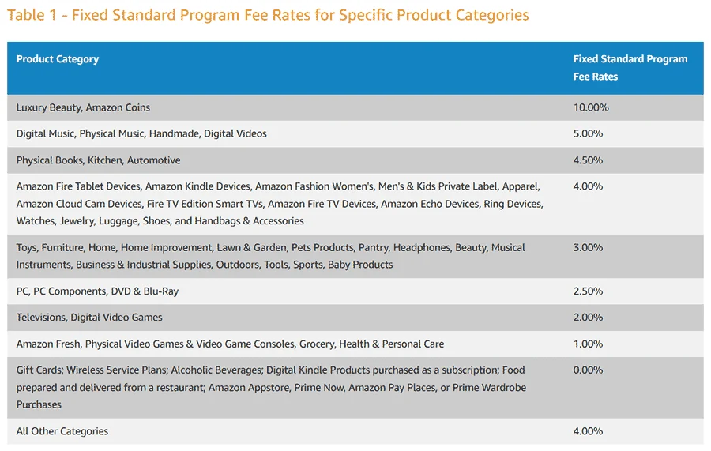
我们先来看看这些红人怎么靠亚马逊联盟赚钱的。比如一个7万人左右的美国群组，每天的收入大概在一千美元左右，差不多3万美元一个月，都这么有钱吗？有更有钱的，某个大博主从不收发帖费，佣金每个月超过10万，只赚联盟佣金。
这是一个站外同行梳理出来的Facebook放量底层逻辑图：
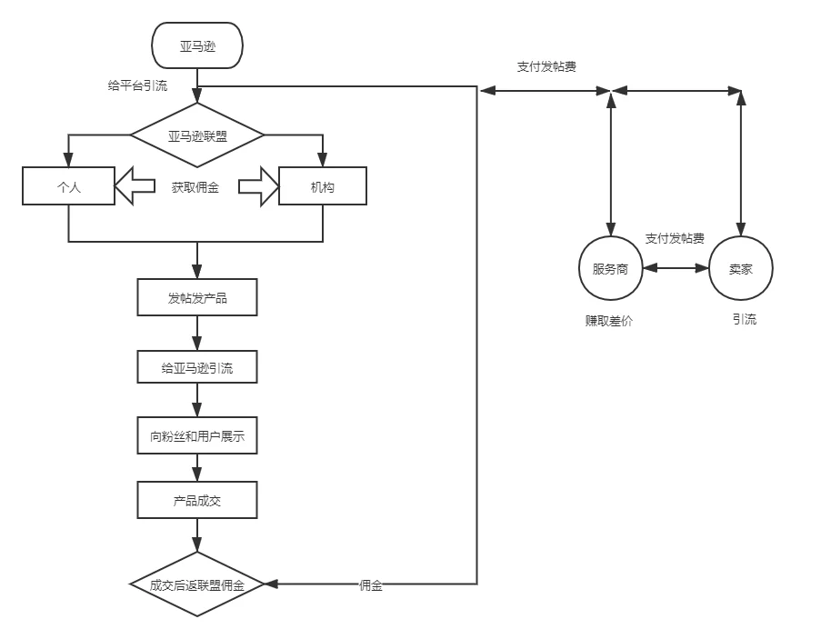
8、做站外放量，你需要准备什么？
一个facebook的老号+n个优质群组
老号不容易封号，可以注册也可以买，注册的话最好养个3年左右再拿来用，买的话最好选择比较安全的渠道，最好买老外那边注册的号。
我个人建议可以注册一个先养着，如果急需做站外的话，可以先买一个。买的号虽然有可能被收回去，因为买的号很多都是黑号，这就需要我们即使备份好跟红人的联系方式了。我也建议多买几个，分散风险。
FB的deal群组并不难找，但是优质群组不是那么好找，但是前期最好先不断挖掘出很多个群组，然后再慢慢筛选出优质群组，所谓的优质群组其实不是群的粉丝有多少，而是，能有多少个老外活人在，
出单效果如何。
大家要知道，越是容易找到的群组效果往往不怎么样，还收费贵。所以大家根据我提供几个思路去搜索，先模糊搜索，后精确搜索，一定能找到好的群组的。
我自己是服务商为什么还要教大家怎么做站外呢？服务商没法满足卖家所有的需求，比如你需要在秒杀的时间点投放到站外
如果卖家站内遇到瓶颈了，想通过站外推下产品，是需要持续不断的出单来推的，但是服务商资源原因，只能帮你推1-2次，后面效果可能就不太好了。
你是不是想说你会换服务商？这里暴露一下行业机密，其实大部分站外服务商都是二手服务商，他们的源头就那几家，我算是源头，经常从不同代理那里接到同一个产品，这就是现实。所以你说换服务商能解决问题吗？归根到底需要自己也有资源，服务商的资源作为辅助手段。
这里提供一些找群组的思路：（极少成多，量变产生质变）
1）搜索关键词deal、coupon等关键词+站点，可以获得大量的群组，虽然这部分有很多都是被用烂的了。注意着是不需要点选“小组”选项的，直接在“全部”里面查看模糊匹配的结果即可（模糊搜索）
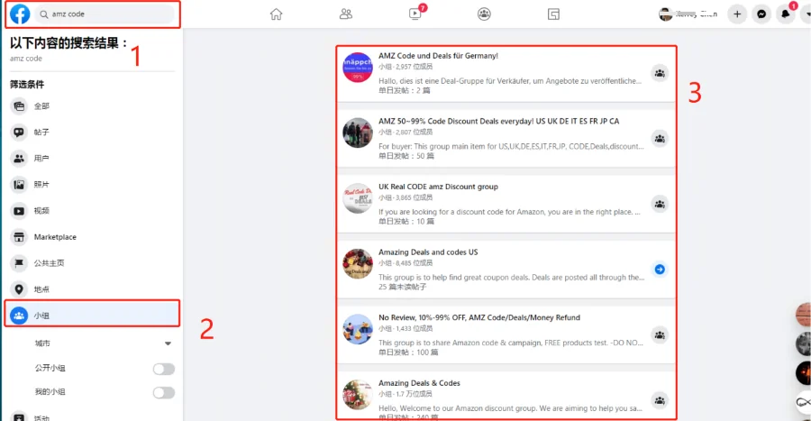
2）系统推荐，只要你加足够多，系统就自动会给你推荐更多群组，但是这些群组离真正的优质群组还有很远的距离。
3）折扣码搜索，你可以用别人的折扣码一个个去搜索，从而裂变出更多的群组。（精确搜索）
比如你在某群组看到这个帖子，热度还可以。
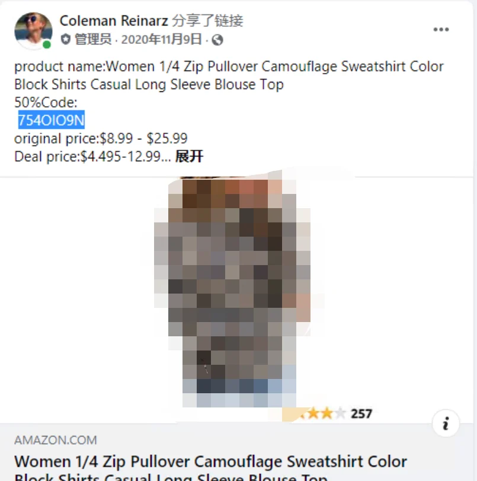
那么你可以复制它的折扣码搜索一下。马上可以把这个中介/卖家发的其它群组，这个方法离找到优质资源不远了。
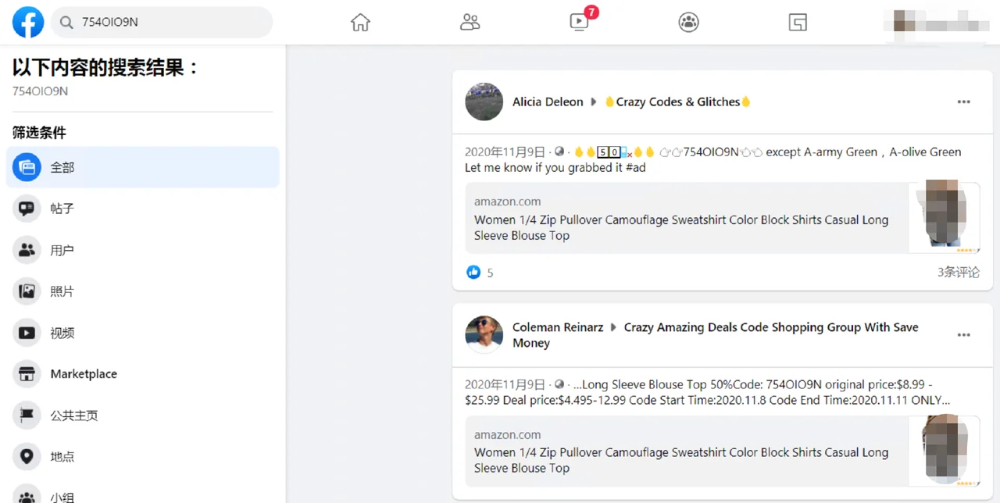
4）可以去跨境网站论坛找，比如雨果，跨境知道，论坛，这些地方都能找到一些，不到公开的资源意味着可能被用烂了。
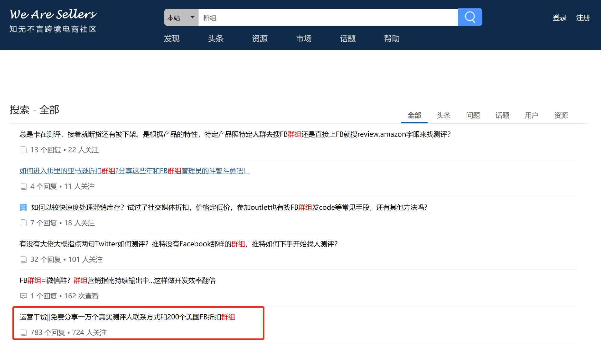
5）交换资源，等你有了一定的资源之后，你就可以跟同行交换了，但是最好是能线下交换，一方面可以辨别真假，另一方面可以更高效率联系上管理员，因为你会慢慢发现，你大部分联系管理员不回的
messenger，都进了管理员的垃圾箱了，这时候最好的解决方法是什么？推荐。
9、什么产品FB站外效果好？
FB群组的粉丝大多由年龄在22-55岁的家庭女性构成 他们感兴趣的产品就是我们最容易出单 爆单的单品 看看有没有在下面的列表里面就知道了？
以下都是根据我的经验得出：
家里常用物品：含厨具、家庭装饰、智能家居、床上用品、家具等等女性用品： 含女装、鞋帽、美妆类、饰品类等等儿童类： 含玩具、母婴用品等等家庭工具类： 清洁类工具、常用工具等等
简单来说，刚需的日常消耗品是效果最好的，不过这种产品基本是红海中的红海了，做的人也不多。
10、什么产品FB站外效果不好？
1）配件类产品2）FBM和成人用品3）防疫和政治用品4）过季的产品
5）站外泛滥的产品，比如筋膜枪，网络摄像头
11、影响出单效果的因素：
1）关键还是看产品需求，是不是刚需，受众当然是经常泡Facebook的家庭女性啦，当然她们也会买给儿子或者老公。
2）折扣力度，Facebook大部分的折扣都是50%，别人都是这样，自己搞特殊的话，别人可能连点击的欲望都没有。还有，既然做站外，那么一定要舍得亏点本，不然效果不好一回事，拉低转化率这事可就不小了。
3）价格是否虚高，这个明显是在侮辱红人和消费者的智商，比价网了解一下，他们会直接骂Ridiculous。
4）首页差评是不是多，这种情况建议先做个首页无差评再说。
5）FBM口碑差，成人用品红人发的少，FeedBack非常差,收运费，这些经常林丹！
12、如何使站外效果达到最优呢？
1）选择黄金时间段当你不确定哪个时间为黄金时间段时，可以在后台（Date Range Report）下载订单记录。用数据分析统计表格选出黄金时间段，周几哪个具体时间段, 选择转化率较高的时间联系群主发帖。
2）筛选群组分析每个折扣群组的买家偏好 哪些帖子点赞或者回评比较多 查查近一个月有没有发布同样的产品 对方的价格大概是多少 自己给折扣价有个预估 如果短期内有同样类型的帖子那就不要发了 那样效果会大打折扣。
其次货值太高的产品是不建议发群组的， 基本在FB群组的买家宝妈居多，比较倾向于低客单价的产品。高单价的产品建议选择精准流量的deal网站渠道。
12、什么产品适合做deal网站
1）、高客单价的产品低客单价的产品适合FB站外，但是高单价的产品即使打大折扣也是很高的价格，这样在FB效果也不好的，所以这类产品站外放量走deal网站，不同的deal网站受众不同。
2）、用similarweb查下网站的受众网站：https://www.similarweb.com/
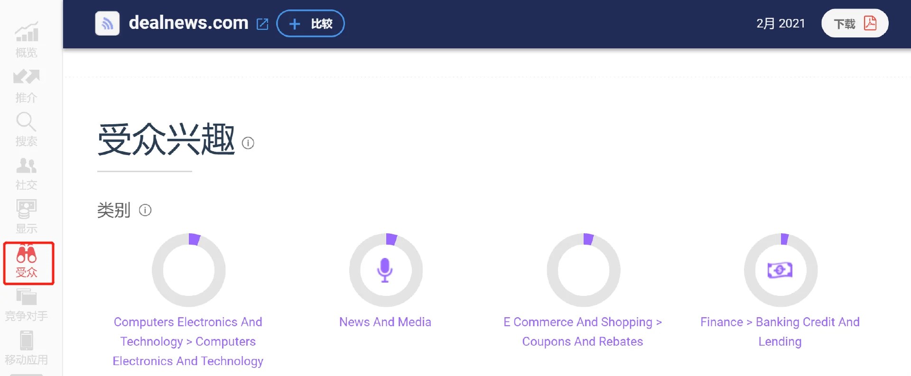
依次类推，其它deal站也可以这么来分析
美国站的deal网站：
Dealnews：这是一个对任何类目都适合的deals网站，对折扣没什么要求，基本上给钱就能上贴，竞争比较激烈，服务商报价一般在170-200左右，自己联系需要批量买，价格150/个。
Techbargain：一个比较适合3C类目和居家类目的网站，3C类目的产品在这个网站会更吃香，受众对口，同类目的竞争也会比较大一些，服务商报价在100-110左右。我写过一次案例分析：https://mp.weixin.qq.com/s/en3ke_FaGC8OEO1XILOxGA
1sale：这也算是个综合性商业型的deals网站，跟Dealnews差不多，但是效果没有Dealnews好，不太建议，服务商报价在130-150左右
Bradsdeal：更适合家居类目，这个网站，质量还不错，比较麻烦，上贴慢，审核严，一般服务商不愿意做。
slickdeals：这个网站门槛高，FB需要1000，但是一上帖必爆单，之前服务商们可以操作到pop deals，甚至更高，效果很棒，不过现在只能尽量找高等级的红人来发了。
Bensbargain：男性用户居多，能占到9成以上，产品对口的话，效果还是不错的，服务商报价在130-140美金左右
kinja：一个灰常牛逼的网站，基本算是deal站之王。（前段时间3个月以来，我提交了几十个产品，只侥幸上了一个，库存直接清空）从其他朋友那了解到，这个网站上贴即爆单，基本上不了
cnet：同上
Woot：这个是亚马逊官方的一个deal网站，只要上帖，亚马逊会把你的购物车拿走，像下面这样，有点类似站内的BD。
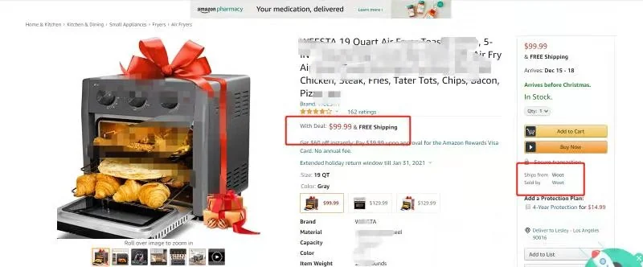
欧洲站的deal网站：
大家如果是欧洲站的话，欧洲站的deal网站相对比较便宜，而且容易联系都，不要花冤枉钱去找中介，当然有时候为了省时间可以。
13、如何设置站外折扣码？
现在市面上设置站外折扣码的教程很多，但都是旧版本，这期更新个新的，用最简单的语言给大家介绍~
第一步 打开后台，点击【广告】，选择【管理促销】
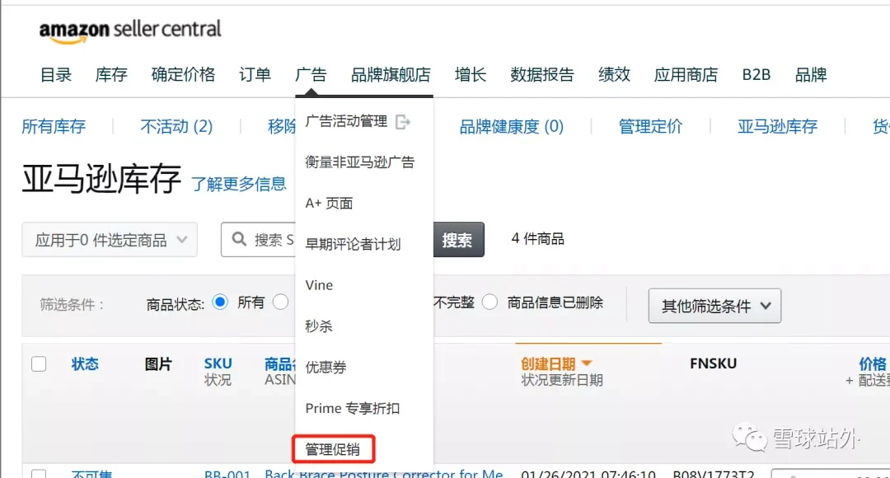
第二步 设置折扣码使用的商品，选择【管理商品列表】
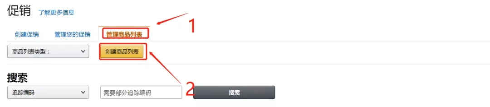
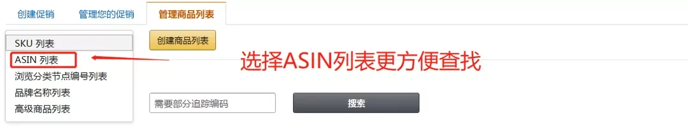
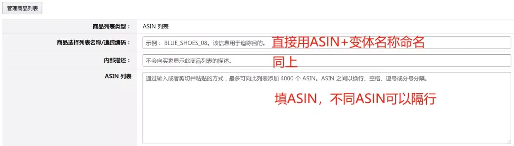
第三步 上面设置好了之后回到第二步开始的地方，有两种选择，选择【购买折扣】和【社交媒体促销代码】都可以
如果是推新品我建议选择前者，清库存的话我建议后者。
不同点在于社交媒体折扣码是有亚马逊联盟的推荐的，流量会更大些，不过卖家普遍用普通折扣，可能是怕库存不小心被情况
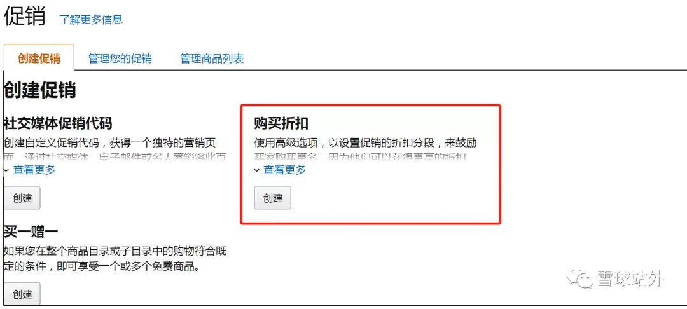
第四步 这里以【购买折扣】为例
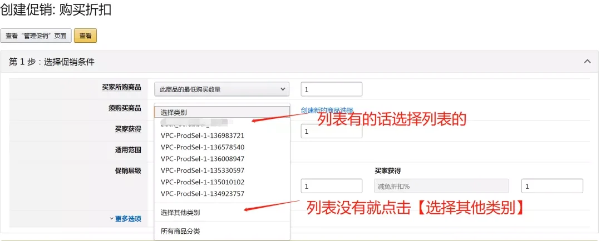
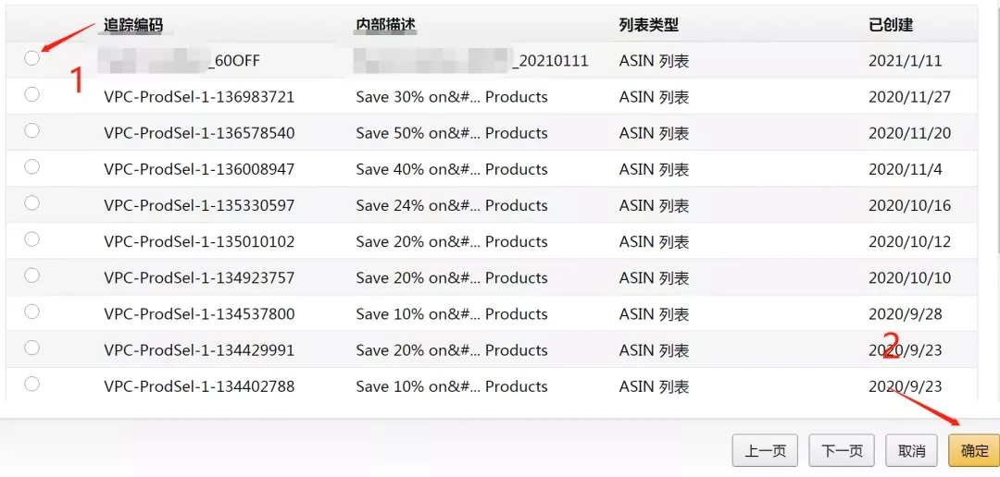
这里需要注意的是，一定不能选错，不然导致折扣码无效！
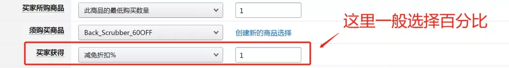
这里显示的是XX off,比如，打4折，这里填60
第四步 设置时间
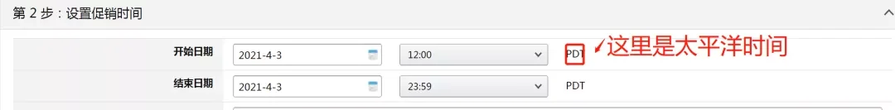
这里建议设置7天左右，因为有些买家下单都是先加入购物车的
如果是设置【社交媒体折扣码】，建议设置一个月，这更加能增加红人转发的概率~
第五步 更多选项
折扣码选择【无限制】【优先型】
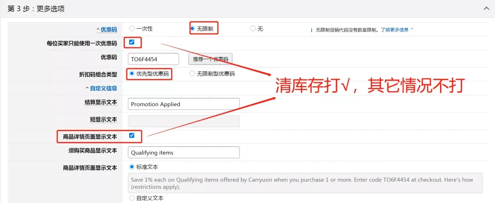
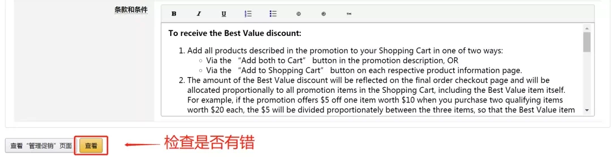
这时候记得检查是否还有coupon、会员折扣、秒杀等等促销
14、如何查询亚马逊站外订单？
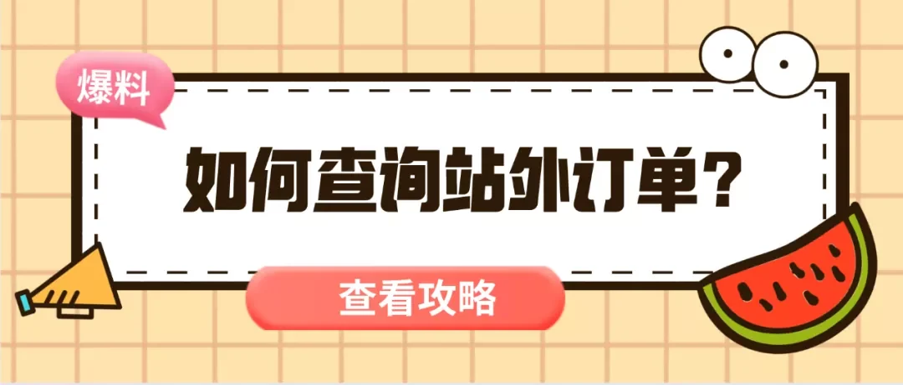
当你做完站外的时候，你看看你的订单跟原来一样，这时候你脑子会不会打几个问号？这些到底是站内单还是站外单？
不管你做站外促销还是做站内折扣、秒杀等活动，很多订单都是出于pending的状态，这时候是看不到订单的折扣价的，你会搞不清楚哪个是站内单，哪个是站外单。
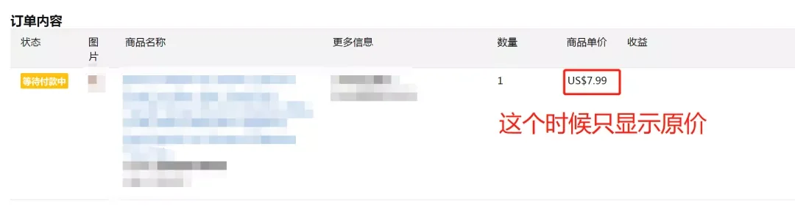
这时候有办法找到做了促销的订单吗，答案是可以的，而且很简单。一分钟学会，学不会找雪球算账~
这个办法可以知道，哪些订单用了站外折扣码，哪些订单用了coupon，哪些订单做做了站内折扣~
第一步 点击【数据报告】，选择【库存和销售报告】
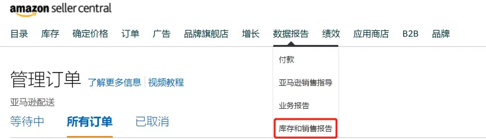
第二步 点击【所有订单】
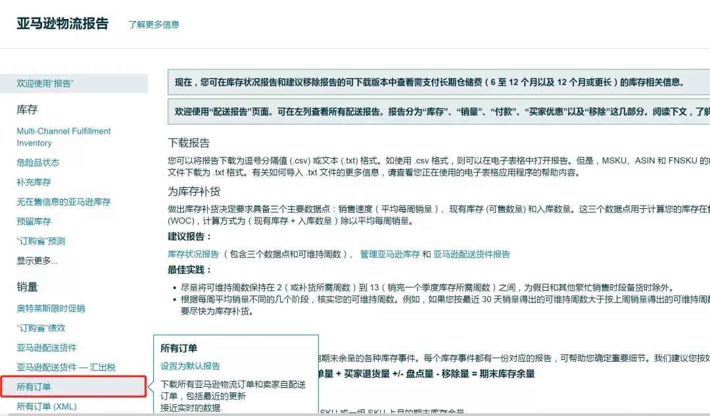
第三步 点击【事件日期】，选择【确切日期】
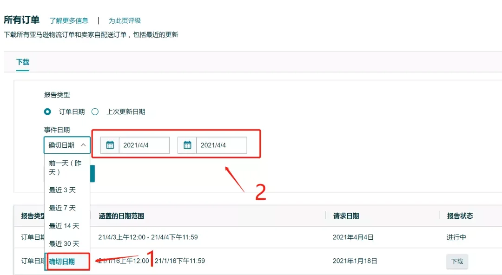
第四步 点击【请求下载】
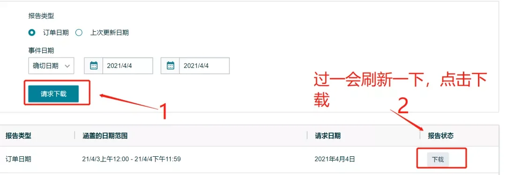
第五步 打开下载的文档，这个文档是文本的文档
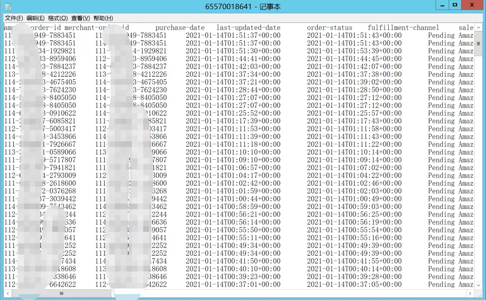
第六步 把文本的内容Ctrl+A全选，Ctrl+C复制出来，新建一个Excel表格，Ctrl+V粘贴到Excel第一行第一列
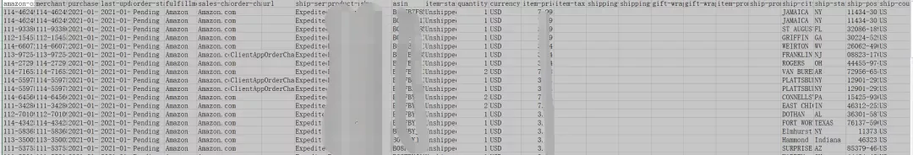
第七步 筛选（Ctrl+Shift+L），筛选对应的 SKU【SKU】和状态【item-status】，选择对应SKU和去掉取消的订单（把Cancelled不打勾）
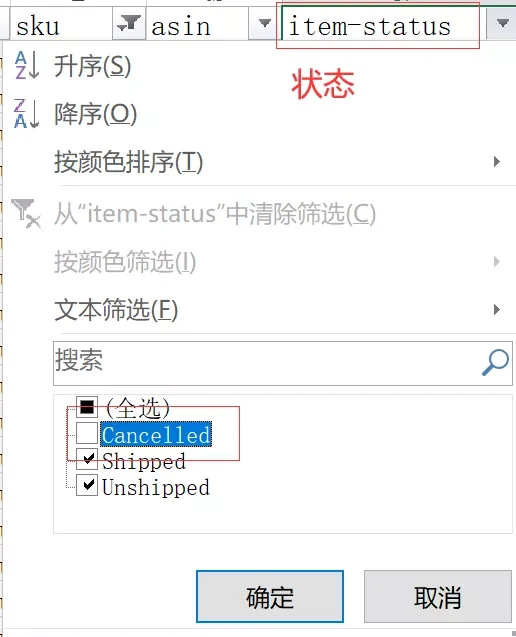
第八步 看【promotion-ids】
这里面有乱码的都代表做了站外折扣如果是做了coupon就有带【coupon】这个标志这里明显没有，【空白】空格代表全价单。
所以取消打勾，就能知道该SKU站外出了多少单了。
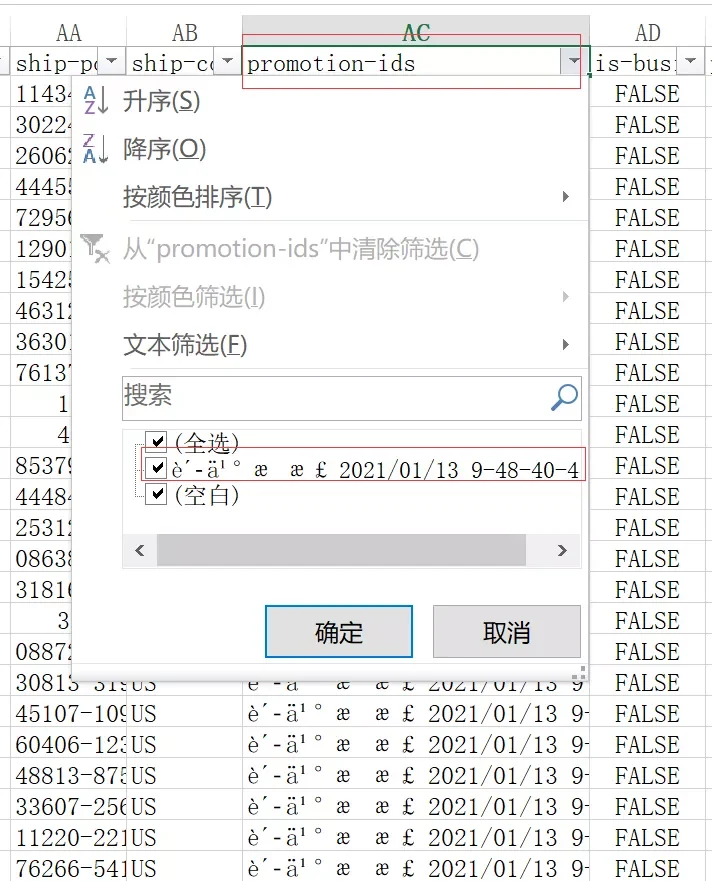
Note :这里需要注意的是，在做折扣的时候一定要记得按照一定的格式设置追踪编码（ASIN+折扣+时间），这样命名在表格很容易辨认code和coupon订单。
上面的截图就是因为没有正确设置好追踪编码，所以只能看到乱码。
15、做完站外排名如何不一落千丈？
做站外推广，最大的痛点的不是效果不好，而是做完之后不能稳住排名，排名一落千丈。
我们要知道，亚马逊站外推广的秒杀出单主要是买家通过联盟链接下单，所谓联盟链接，本质上就是ASIN链接，我们知道，单量决定排名，但是这里的单不是通过关键词下单的，所以只是提升了BSR排名，对于关键词排名是没有任何帮助的。
众所周知，站内的流量基本集中在两块，搜索流量和关联流量。但是通过站外链接下单对这两者都没有起到帮助的，当我们停掉站外推广的时候，由于站内的单量没办法衔接上来，排名自然就一落千丈了。
那么要如何让站内单量衔接上呢？
订单量的公式=曝光*点击*转化率，订单量由曝光，点击和转化率决定。我们只需要想办法往这三者去突破就行
我个人觉得，在停止站外推广的同时，一定要配合广告（提高曝光）+coupon/会员折扣/低价（转化率）可以控住站内单量，继而保持住排名。
虽然这个办法很烧钱，但是我看到大卖都是这么玩的，比如想要10单，转化率10%的话，就需要有100个点击，那么如何提高广告点击呢?只能在一些核心词上推排名了，把listing推到核心词排名靠前的坑位，这个坑位能出多少单是靠经验积累的。
coupon/会员折扣可以提高点击率和转化率，促进更多流量的转化，提高订单量。
但是这里有个前提，选品要选的好和listing页面质量要好，这样不至于转化率很差，在这个基础上配合折扣转化率就更不错了。
由于我的亚马逊运营功底和资金有限，目前还没有数据支撑，只是提出一个设想而已，大家要是有更好的方案随时找我沟通。
16、如何通过站外为亚马逊找到一个永久的流量入口
昨天跟隔壁老朱聊天还聊到，他所做的站外是在Youtube上找红人帮忙拍视频，粉丝量在5000-10000人，只要免费送产品就行了，不需要佣金就可以推广了。
这个流量入口可以每天给他带来几个订单的销量，对于高客单价的产品来说，这个投入产出比是比较可观的，要是多找几个这样的红人呢？
Youtube站外跟FB放量有什么区别呢？
1、Youtube站外带来的效益是长期的
只要视频一发出，就多了一个流量入口，如果视频爆了，还会被谷歌收录，流量就更大了。
2、Youtube站外，可以提高listing权重。
首先链接自己可以改成关键词短链，提升关键词排名。其次，进来的流量比较精准，并且有了红人的种草，转化率会高一些。
FB放量只是短期的一个秒杀，对于权重坑位其实没有什么帮助。
3、折扣的区别，Youtube站外不需要太大折扣推广，甚至不需要折扣，FB放量需要大折扣，目前没有50%都没人会下单了。
做了这么长时间的FB放量，我最直观的感受就是，FB放量单纯爆一两天是没法增加权重的，需要控好单量持续出单才能提高一个基本的权重。但是由于财力物力人力原因，很多卖家一般做不到。
但是FB放量有FB放量的优点，不可一概而论，具体看下我昨天的文章：与隔壁老朱聊天
这里教下大家一个联系Youtube红人最简单的技巧：
STEP 1 ：在youtube.com用产品关键词+review进行搜索
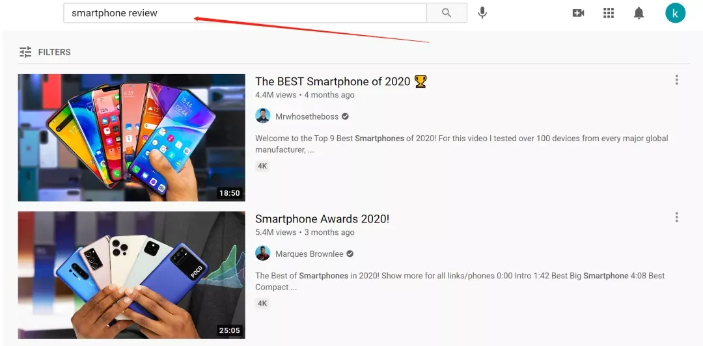
STEP2 ：Youtube的站内搜索功能非常强大，可以用“FILTERS”功能，一般是筛选“相关性和观看次数”，可以更快找到合适的红人。
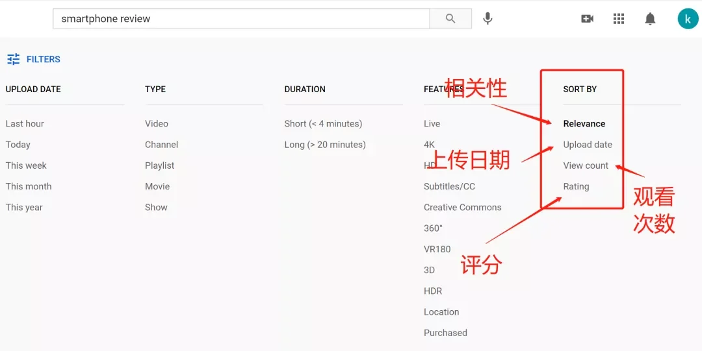
STEP3 : 把语言和地理位置换成目的地的国家和语言，比如所在站点是美国
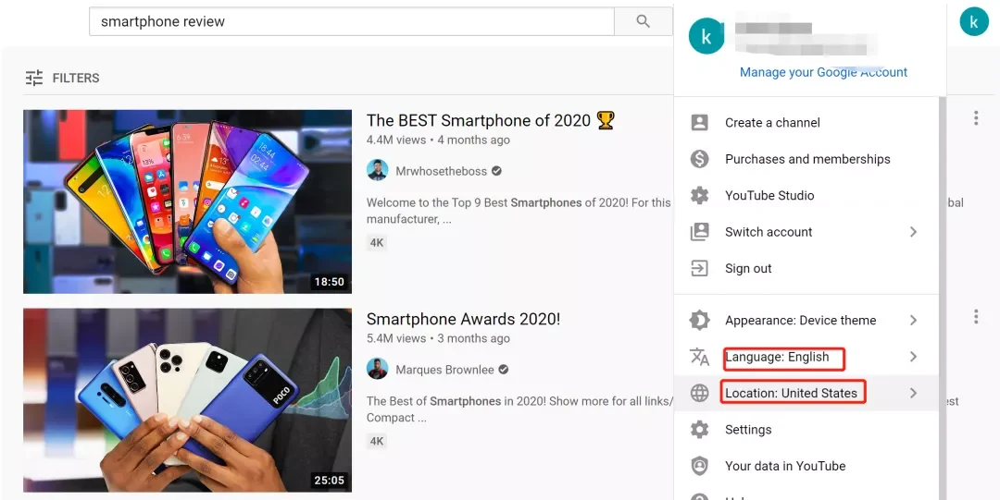
STEP4 : 找到邮箱
随便点进一个视频，播放量和评论不错的话，进入到红人简介【ABOUT】，这里建议就选择1000-10000粉丝的红人，因为太低没流量，太高高攀不起。
一般在Description就可以看到联系的邮箱1，要是找不到的话可以点下2，还有要注意3是不是所在站点的。
除了邮箱，有些还会放上Facebook，INS，twitter等等社媒，这些可以联系到红人。
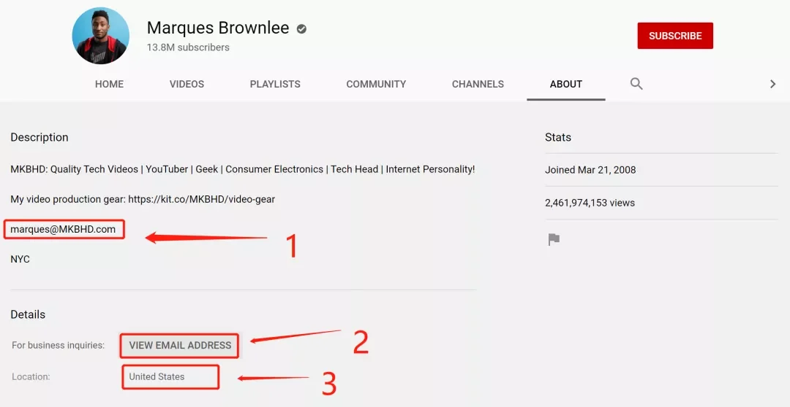
找到红人的邮箱之后，最难的地方其实是怎么联系他们能提高他们的回复率？
我觉得最重要的是对自己产品的了解，假如你找了竞品的红人，你可以说你在红人的视频中看到跟自己产品的同类的产品，对他进行阐述，表面自己对产品的熟悉，这样能增加红人的好感，也让她觉得你很专业，谁不喜欢了解自己的人？
STEP5 :找到红人联系方式后，如何评估红人是否靠谱？可以用Socialblade这种第三方工具来检查下红人的测评观看量，互动量怎么样，最重要的是看这些数据的变化趋势，因为国外红人的播放量，粉丝数，互动量都是可以刷的。
网站：https://socialblade.com/
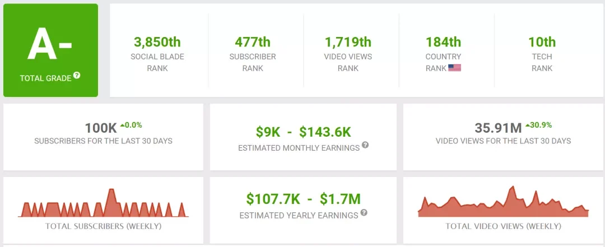
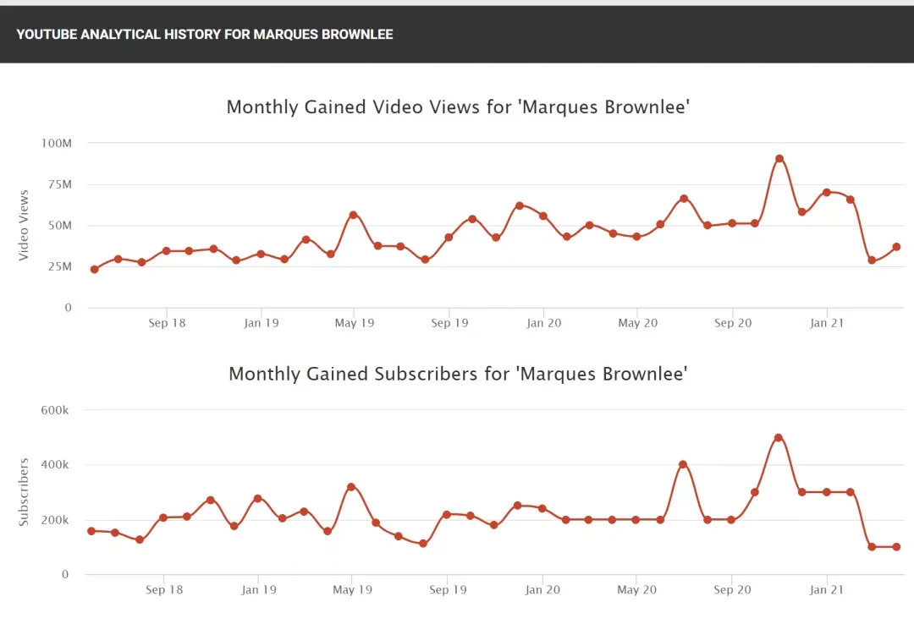
STEP6：看了这么多，如果就只收藏可能就没啥用了，不如先尝试用工具联系第一个红人试试？
17、做站外会接触到的几条神奇的链接
很多卖家找我做站外的时候，会经常问到我们用什么链接进行推广。正解是：绝大部分是联盟链接，少部分是卖家给的链接（权威链接、关键词短链等）
今天就写下每种链接的格式和获取的方式。
ASIN链接：举例：https://www.amazon.com/dp/B07QXV6N1B
获取方式：【亚马逊后台】-【库存管理】
权威链接：举例：https://www.amazon.com/Anker-Ultra-Compact-High-Speed-VoltageBoost-Technology/dp/B07QXV6N1B
获取方式：1 首先进入你的listing详情页，直接鼠标右键选择 view page source， 或者直接CTRL+U
2 进入page source以后， 直接 CTR+F，然后右上角方框填入：Canonical ，然后点击搜索。
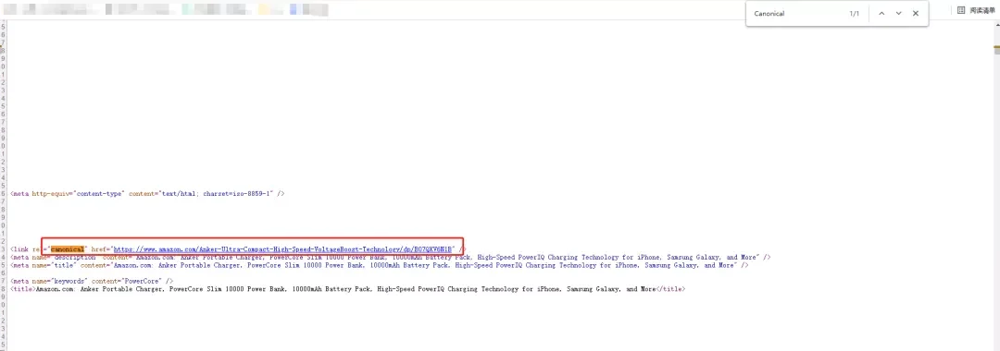
3 如上图所示，红框里面，Canonical后面那一串，即是这个listing对应的权威链接，如果你想拿到你的listing权威链接，即可采取上述手段来就好。权威链接里面有五个核心的Keywords，这五个keywords的权重是非常之高的，他的收藏逻辑即是基于亚马逊搜索引擎对你listing的认知和indexing收录。如果你是苹果，亚马逊觉得你不是，你怎么也推不起来。如果你是苹果，亚马逊也觉得你是苹果，你会发现推起来非常快，就像开了光环一样。用这个链接做站外，可以提高总体的关键词排名，但是前提是量要够大。关键词短链：举例：链接很长，然后转换成短链发给管理员
获取方式：有两种方法：1 打开亚马逊搜索页面搜索关键词，然后从搜索结果中找我对应的listing进入，这个页面的链接就是关键词链接了，然后转换成短链发给管理员，这个链接下单是有关键词排名有帮助的。
2 用软件，H10，amz123的插件都可以实现
很多情况下，我们建议卖家自己生成关键词短链给我们发站外推广，因为有些管理员比较懒，懒得去转换成联盟链接，所以就把关键词短链发出去，这样产生的订单是对关键词排名有帮助的。
联盟链接：举例：
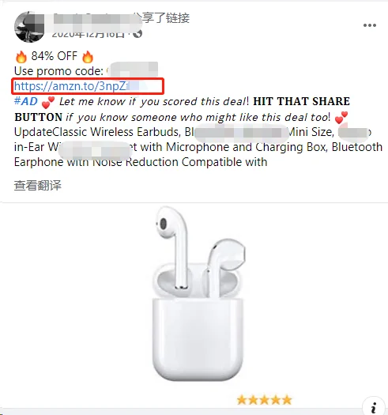
获取方式：管理员通过亚马逊联盟生成联盟链接，从中获取佣金。
18、一个找竞品网红的插件工具：LeapCa
这个工具叫LeapCa,谷歌商店可以搜到，操作也非常简单，仅仅两步，就能完成：
第一步，安装完，点击 ‘查看运营节奏’
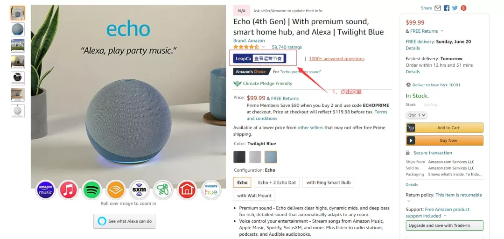
第二步，就能看到这个产品做过那些网站的站外推广了
第三步，这个数字应该是有多少个红人转发这个外链
Note：
1、这个插件无法查到facebook，推特，ins，YouTube等社交媒体的站外推广
2、插件免费
3、可以配合Similarweb这插件来查这个网站的流量：
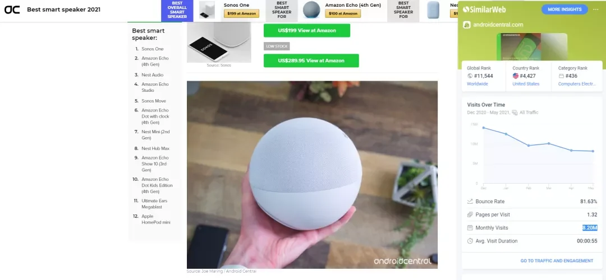
4、可以配合Hunter这个插件来查每个网站的邮箱
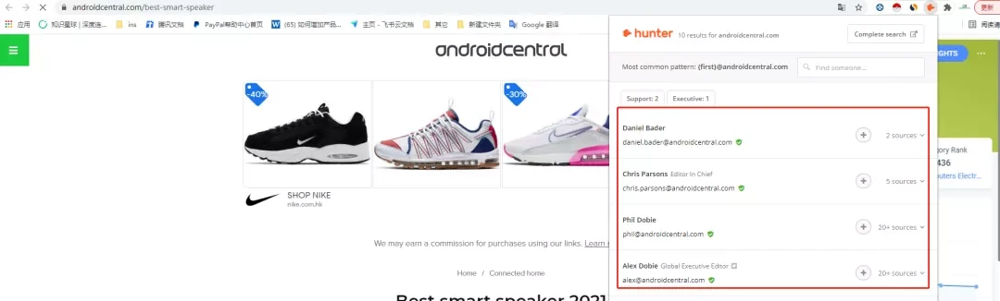
今天分享了三个插件，篇幅很短，但都是大公司推广日常用到的工具，如果觉得有用，可以推荐给你身边的亚马逊从业者。
19、什么时候适合做站外
很多朋友都尝试了会员日当天销量也都不错，这个方法并不是只对会员日有用，后面的一些节日，大促同样适用。
最近也有朋友在问到什么时候做站外合适，以下我简单总结几点，供你参考：
1.需要清仓的话，打开库容。2.推新品，稀释留评率3.排名很差/转化率很差的时候
前面三点比较简单，也是比较常见的做站外的场景。
很多时候站外推广不是效果不好，而是不会用，时机很重要。下面这些就比较少人会用到：
4.旺季大促。如开学季、万圣节，黑五、网一、Prime day等等节日会员日不管站内站外，都要懂得借助平台的流量。这个时候对亚马逊卖家而言是品牌曝光的最好时机。每年的这个时候，都会有很多新的品牌被消费者发现。
5.秒杀预热秒杀前1-2天的时候。秒杀前借助站外推广进行大规模的引流，一个没有流量的产品想通过秒杀爆单是不可能的，这个时候就需要站外先给你拉动下流量，然后秒杀效果会好很多。
6.做完秒杀稳住排名的时候如果不想秒杀之后排名一落千丈，可以试下站外稳定维持住一段时间。
1. 7. 站内打不上广告的阶段.站内广告有点贵，而且有时候也会打不上去，遇见这种情况，多半是listing不好了，亚马逊把广告坑位给了其他好的，这个时间做站外推广，可以提高出单和转化率。快速帮你把广告的坑位重新夺回来！
8.卖家打爆款的时候。很多卖家打爆款的前期都是刷大量单，但是刷单不能带来高曝光率和高点击率，这个时候可以安排站外推广了，站外可以帮你实现高曝光率和高点击率，你只要稳住转化率，产品就可以快速起来。
我写完了，祝老板今天好心情。老板记得点赞点在看，你会大卖的。
20、怎么判断你的产品适不适合在FB发帖
很多来做站外推广的朋友，经常没有做好功课就来咨询服务商，导致服务商说啥就信啥，听得最多的一个问题就是：你这边站外推广效果好吗？
这个问题应该分成三部分来解析：一、你这边的资源怎么样？二、我的产品适不适合做站外推广？三、这段时间总体上效果是不是差了点（比如会员日前后）
首先关于资源问题，其实说的就是这个服务商的群组质量，质量好不好，跟粉丝活跃度有关，只有拿几个产品试过之后才知道。
我的产品适不适合做站外推广？其实不同服务商的资源优势不同，有的擅长家居厨房和3C电子；有的擅长衣服鞋子包包，但是很挑产品，更有甚者，对方只擅长发数据线，等等。
这个问题前面的文章有过解释，基本日用品，消耗品，家居产品都是最适合FB的，因为它针对的人群最广，什么样的人都能用。
但是很多卖家的产品受众局限怎么办？
通过FB搜索，产品关键词+deal，筛选出最近一个月的帖子，看看大概的评论和点赞数怎么样，可以点开评论看看评论是否真实，如果真实，而且大部分帖子都有超过2个的评论的话（有些评论都是管理员自己评论的），就说明这个产品站外效果还不错。
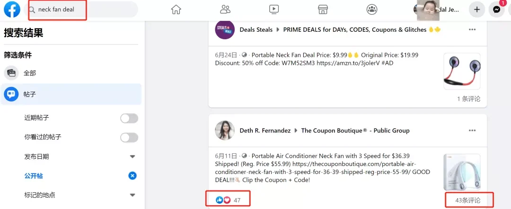
但是要确保帖子数量不是很多，如果很多证明最近很多竞争对手都在做这个产品的站外，这时候再做可能要杀价，而且效果还不是很好。
说到价格，大家做站外推广肯定想要打几折才合适？那么在这里你可以对下爆单的竞争对手的价格了，对方如果折扣价是10美金，你的折扣价最好不要偏高太多。
如果实在亏太多，可以稍微提价后打大折扣。
所以，我觉得卖家在做站外推广之前可以自己先通过这个方法做做功课，然后再来咨询服务商。
而且咨询服务商不要问前面那个问题了，问等于白问，99.99%都说好，正确的提问方式应该是：请问您这边什么产品比较有优势？
虽然这个问题的回答不能100%真实，但是我这边接过的产品都上万了，一般都会给个明确的数据。比如这样，拿出一个类似产品，看下做前和做后排名，大概就能预估出单，这个出单你满不满意，就知道了。
以上！
21、如何避免站外叠加？
做站外推广服务以来，遇到很多很多粗心的运营和老板总是因为折扣码叠加，造成巨额的亏损，这其中的亏损不止是money，
还有库存，断货了你排名上来了还是没得卖还有机会，断货了你错过了最好的推品时机还有账号，如果是新账号，买空可能就导致被亚马逊误判为操纵排名
以前叠加还可以开case找客服取消订单，现在已经不行了。
针对这些，我总结了叠加大概有以下这几种：
1、折扣码与coupon的叠加2、折扣码与站内秒杀叠加3、折扣码与会员折扣叠加4、折扣码与折扣码叠加
4比较少见，假如你同时给了两个服务商做站外推广，设置两个的折扣码，而且是无限制型折扣码（折扣码分为优先型和无限制型），那么如果A+B服务商同时把折扣码给了同一个红人，就变成dead deal了，这是红人给粉丝谋求的最大福利，甚至还有红人专门在帮粉丝找这种deal。
那么针对我们有什么办法可以避免呢？
1、做站外促销之前记得在listing设置最大购买数量，以防止有客户重复用优惠券购买，或者一次性恶意买空。记住是LISTING的
2、防止库存买空还有一个小技巧：提前创建多渠道配送订单锁定库存，简称锁库。比如你的产品A目前有FBA库存1000个，你想控制站外促销出单的上限是400个，那么在做站外促销前，你可以创建一个600个的多渠道配送订单，锁定这600个库存。
因为创建多渠道订单后，你这600个FBA库存状态就会从可售变为预留状啦。等你的站外促销结束，你就可以把这600个的多渠道配送订单取消，那么这600个FBA库存又会变为可售状态了。
注意点：1.为了避免多渠道订单的库存真的被配送了，买家地址通常可以写自己的海外仓或者合作海外仓。2.订单配送时长可自己设置，比如设置为10天。这样也是可以避免你预留的库存被真的配送出去了
3、打个小广告，放心交给我们就好这种情况我们雪球团队已经找到了解决方案，有专门的防叠加系统，这个系统基本可以防止90%以上的叠加情况，比如code+coupon、code+会员折扣吗、code+code，遇到这种情况，我们第一时间通知卖家，只有秒杀是不好避免的，因为秒杀是某一时间生效的，所以无法提前预判。
这几个情况是我参考一些文章和跟一些卖家交流得出的，给大家各位老板和运营参考一下，抗风险能力是公司最重要的能力，小心驶得万年船，共勉！
22、一些亚马逊卖家做站外的骚操作
做服务商久了，不免遇到各种站外推广的玩法，各种坑，各种经验教训，还蛮有意思的，抽空就给大家分享一下：
1、新品高价高折扣做站外推广这么久了，发现有一两家亚马逊公司，可能是坂田那边的铺货公司，基本每天都会给个这样的帖：
产品是“葫芦娃兄弟”（解释看下方截图），比如蓝牙耳机，都是一上来就把价格就提的老高，比如99.99美金，然后打1折或者0.5折来做，一开始我们还有点怕卖家不发货，后来发现都真的发货了。而且效果都不错，而且这家公司每日必定会来做一次站外，这家公司长期用这种方式放站外，是不是意味着这种骚操作非但不亏钱，还有利润呢？还是说新品期先推上去，然后再站内降价来稳住？
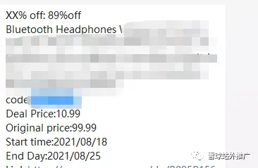
2、社媒几分钟被清库存做社媒折扣，coupon刚好晚几分钟关，一下子库存被撸光。这个给我一个预警，开社媒之前一定要确保没有其它站内促销。
这位卖家也是很小心的，也不是忘记关了折扣码，只是刚好顺序没弄对，本应该去先关coupon的，而去先设置社媒，才出了这么一出。
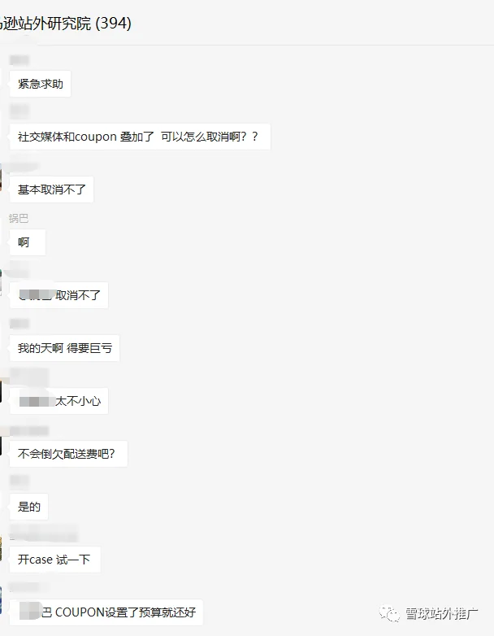
开30多个case也救不了
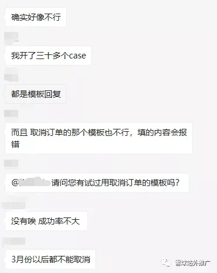
设置coupon预算也救不了，很多人以为设置了coupon预算就可以控制住单量了~
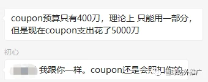
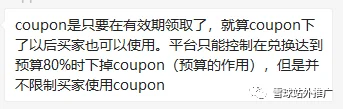
刚好今年三月份开始亚马逊就不允许卖家取消订单了，群里很多大佬也都给出一些方案，但是最后都没办法。
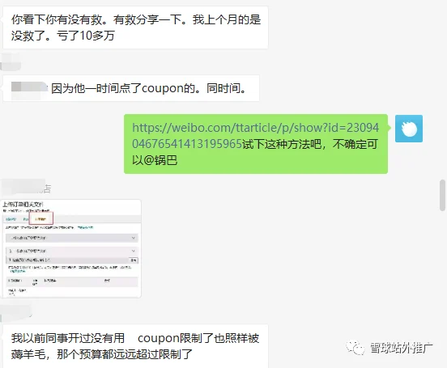
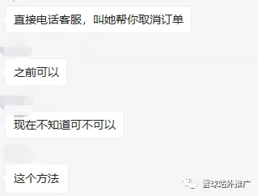
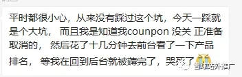
3、还有几个点我有点搞不明白，如果你知道原因，可以跟我分享一下你的见解：站内秒杀的时候做站外推广，有效果吗？单纯用coupon做站外推广是什么目的呢？99%off的折扣码（一次性折扣码）做站外是为了提高留评率？
以上！
23、购物车丢了如何通过站外抢回来？
这个标题有点标题党了，但其实是有效果的.
正常来说亚马逊的购物车丢了，转化率和销量会大大下降，这时候通过站外如果能提高销量和转化率，购物车就会回来，亲测有效。
那么问题来了，如何让站外进来的流量能看到购物车？
我们的处理方式是修改链接，让站外买家进来就能看到购物车。
我们通过以下两种方式帮客户修改链接：
客户被跟卖，如果客户没有购物车，我们会做一个带购物车的链接，格式为www.amazon.com/dp/（产品ASIN）?m=（Seller ID ）这样就会防止客户被抢购物车之后影响转化
举个栗子：
1、点击这个sold by后面的店铺
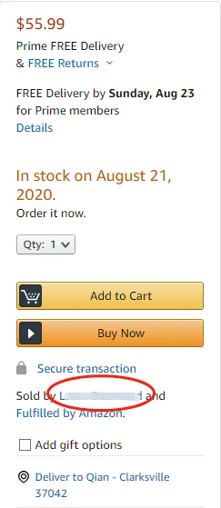
2、找到Seller ID
以美国站为例所以防跟卖的指定店铺链接就是www.amazon.com/dp/ASIN?m=sellerID
用这个链接做站外，就不用担心跟卖抢购物车影响站外效果了
这个小技巧亲测有效，大家赶紧收藏起来吧
24、如何提高站外的转化率
大家都知道，站外的流量是泛流量，一不小心引进不少无效流量，会拉低listing的转化率，转化率差了，亚马逊排名就差，销量就不好了。
但是以往的经验来看，我做站外之后看业务报告，转化率都是高出10%的，为什么呢？
大部分站外卖家点进来就证明对方是有需求的，只不过看你产品和折扣价OK不OK了。如果产品listing各方面做的没问题，价格还是很实惠，不是提价后打折的，首页没有差评，转化率自然高很多。
那么如果做不到这些，看你就会导致转化率变差了。
那么通常我们做FB促销的时候，怎么样才可以避免引进无效流量呢？
1、Listing的质量得分优化好来先，质量得分跟图片，评分，评分数，首页是否有差评等等有关，可以用H10插件计算一下（所以新品一上来就做站外是有点危险的~）
2、定一个合适的折扣价，那么我们怎么判断一个好的折扣价呢？
通过FB搜索，产品关键词+deal，筛选出最近一个月的帖子，看看点赞比较高的帖子的折扣价是多少，自己的折扣价尽可能不高于它。
很多时候服务商和卖家有一个矛盾，服务商希望折扣越高越好，卖家希望折扣越低越好，原因很明显，都是站外各自的利益层面考虑。
3、还有一种情况，别提价太多，很多卖家直接提价一倍，然后再打50%的折扣，这种情况大部分效果都不咋地，可能还导致站点的购物车丢了。
告诉大家个秘密，Keepa一开始的定位是亚马逊买家，所以买家也是会用Keepa的，那么大部分买家就能对比以往价格的，买家不是傻子，直接pass掉。
最好的方式是什么呢？
确保listing质量得分没问题的情况下，可以稍微提价10%，然后打多10%的折扣（比如原本50%，改成60%）
这种可以大大增加转化率！
25、亚马逊社媒的两种玩法
社交媒体折扣，大部分卖家主要用来清库存，还有一部分卖家用来作为新品的冷启动，比如我之前提到的小爸爸。
清库存的做法：设置一个比较大，差不多保证不亏本的折扣，有一定概率会触发亚马逊联盟的推荐，正常来说，低于50%比较容易被推荐。
如果要快一点或者没被推荐的时候，可以找服务商，帮忙把折扣码丢给一些站外红人。
我见过的卖家的玩法是，一开始直接给个大一点的折扣，比如70%，然后等到被推荐了，一下子出个上百单了，慢慢提价，这样清库存可能还可以保本，甚至有一点利润。
针对客单价高的产品，还可以这么玩：（来自知无不言）
推新品的做法：新品最重要的是什么？我不知道我说的对不对，我觉得应该尽快出单。
电商的底层逻辑是坑产，每个排位就是背后有多少销量，如果你想要在未来有多少订单，你就要通过多种渠道（站内站外）先稳定达到这个坑位，然后通过人工干预，来减少你订单亏钱的部分。
新品站内没有评价，很难靠自然流量出单，那么可以靠亚马逊联盟作为一个补单工具，后台social media code设置好，只要你给的折扣够大，就可以出单。
一开始肯定是亏的，70%、80% off这样去砸，等有评价了，开一个5%的coupon，社媒折扣还是不要停，但是要慢慢降低折扣，比如75%+5%coupon。
等有上百的评价了，60%+5%coupon,再往后再逐步减少，当然不同类目的打法不同，很多人不喜欢这种比较激进的打法，一不小心就断货或者被搞。
但是这种思路可以学习。这里有个前提，跑联盟一定要配合大量的评价和广告。
以上！
26、聊聊站外奖励金那些事
Q：什么是BRB计划?A: 这个计划叫品牌引流奖励计划，英文叫Brand Referral Bonus，简称BRB。
Q：为什么要有这个计划？A：平台卖家越来越多，需要有源源不断的流量进来。
首先亚马逊需要流量，让我们卖家去引流，我们卖家去哪找流量？也是要找红人啊，找红人肯定要钱，难道白嫖不成？那凭什么让我们卖家去帮亚马逊找流量？也需要给点奖励的动力啊。（看懂这个逻辑就明白为什么红人和卖家都能同时获取佣金了）
Q：亚马逊卖家什么清库存下做站外就可以获取这BRB计划的10%的奖励金？A：只要站外买家通过BRB计划生成的推广链接进入购买就算，所以如果红人愿意用你的链接进行推广，就可以获得，如果红人修改了你的链接，就获取不了。
Q：FB群组的管理员愿意发这个链接吗？A：目前来看，大部分红人都不太愿意，有部分会愿意。
Q：为什么有些红人不同意？A：管理员担心用这个推广链接之后他们拿不到亚马逊联盟的佣金，说白了，就是觉得动到他们的蛋糕了。
如果红人直接把你的推广链接直接转为联盟链接，这样的结果是红人还是能拿到大概4%的联盟佣金，而你也可以获得平均10%的奖励金，这是一个三赢的决策，红人获得佣金，卖家降低成本，买家获得优惠的折扣。
两种佣金结算方式：BRB的结算佣金 ：平台固定征收15%的佣金 通过这条链接下单的结算金额中 返给10%佣金给卖家红人结算佣金 是（1%-12%）通过红人链接标识结算 获得佣金 亚马逊提供 基本是等于亚马逊现在不赚钱在做这个计划
结论：亚马逊联盟佣金和BRB计划的奖励金是不会冲突的，卖家可以获取奖励金的同时红人获取联盟佣金，前提是红人把你给的BRB推广链接直接转换成联盟链接去发帖。
下面看这个截图，卖家给到红人链接（无论是权威链接还是关键词链接），红人都是可以一键生成红人推广链接的。
Q：用推广链接去做FB站外，后台能看到站外的流量数据吗？A：实践出真知，很多事情你要测试之后才知道。以下是一位卖家朋友把一个推广链接发给FB红人之后的测试数据：
不过这个数据是有延迟的，一般一周左右能看到完整一点的数据。
Q：当下很多红人还是不愿意怎么办？A：尝试去解释吧，想当初，社交媒体折扣链接也是很多红人不允许放，后面就慢慢都可以了，这个奖励金也是一样，红人需要一个适应的过程。也就是说，后续大部分卖家做站外都是用这个链接做站外，你不用是不是就亏了呢？
Q：既然亚马逊联盟计划和BRB计划可以同时使用，亚马逊为什么还要这么说呢？A：卖家获得10%平台返佣+卖家同时注册亚马逊联盟（想同时获得4%左右佣金），这样是不允许的，会关联。
如果自己弄奖励金，红人弄联盟就不会关联。
举个例子，有些小伙伴要自己注册联盟然后通过自建站下单，这样自己就可以获得联盟佣金又获得奖励金，想得美，被发现了就关掉店铺。
27、什么时机做站外推广合适?
一段时间没更新了，一方面自己也没那么多干货输出，另一方面最近确实忙于业务，最近也快接近旺季，很多卖家也开始在用站外推产品，争取在旺季来一波大的。
我们都知道站外推广最重要的是做的时机，而不是来一波流，然后排名就断崖式的下跌。亚马逊卖家要的是后续的稳定，那么我们如果在哪些时间做站外比较合适呢?
1.旺季大促之前。如开学季、万圣节，黑五、网一、Prime day等等节日会员日
之前就有一个卖家，在会员日之前小类排名是第五，目的是一个月后稳定在BSR，花了一个月的时间做站外推广，效果也很好，然后等到会员日的时候就把站外折扣停掉，最后刚好在站内流量的高峰期接住了站内流量，最后就稳定在BSR。
2.秒杀预热秒杀前1-2天的时候。秒杀前借助站外推广进行大规模的引流，一个没有流量的产品想通过秒杀爆单是不可能的，这个时候就需要站外先给你拉动下流量，然后秒杀效果会好很多。
3.做完秒杀稳住排名的时候如果不想秒杀之后排名一落千丈，可以试下站外稳定维持住一段时间。
2. 4. 站内打不上广告或者竞价很贵的时候站内广告有点贵，而且有时候也会打不上去，遇见这种情况，多半是listing不好了，亚马逊把广告坑位给了其他好的，这个时间做站外推广，可以提高出单和转化率。快速帮你把广告的坑位重新夺回来！
5.卖家打爆款的时候。很多卖家打爆款的前期都是刷大量单，但是刷单不能带来高曝光率和高点击率，这个时候可以安排站外推广了，站外可以帮你实现高曝光率和高点击率，你只要稳住转化率，产品就可以快速起来。
28、站外的本质是什么？放量
Q：假如我的listing设置了50%的code，20美金的coupon，我最后的折扣价是怎么算的呢？A：先算code，后coupon，假如产品的价格是100，那么计算的公司应该是100*50%-20
Q：类似FB这种站外比较适合清库存，但如果我想通过类似小红书这样种草的国外平台来推广自己的品牌。A：想打造品牌是比较难的，特别是通过站外，国外的渠道有YouTube、INS、Tiktok这样的渠道，可以在Youtube搜索自己产品的关键词，找到一些红人的主页，自己去研究视频以及风格是否适合自己的产品，然后主动去取得联系。
Q:如何通过站外deal提高站内转化率？A:不现实，站外deal的本质其实是放量，不要想着靠站外促销来帮助站内运营，这都是不现实的。因为站外的流量精准度是不可控的，假如你要筛选掉一一些不精准的流量，就需要做一个landing page，但是这样一来，会有红人帮你推广吗？因为红人都会改成自己的亚马逊联盟链接，靠亚马逊联盟的佣金赚钱。
Q：如何通过站外促销来更好的清库存？A：1、根据产品找对渠道（了解哪些产品适合站外（刚需的产品），哪些产品适合站内）2、价格方面，测试不同的折扣（保本折扣是否清的动？清不动就乖乖跑回站内慢慢降价清吧）3、listing的质量要好（至少评分要4.0以上，首页无差评）
Q：放量有什么作用？A：清库存、推新品、稳排名（绝大部分是清库存，另外两者需要结合站内运营的目的来做站外，比如你需要提高排名、或者评论，稳定排名，都可以利用放量的手动来做到）
Q：FB和deal站的区别？A：1、性价比不同，FB的性价比高，假如你的产品合适的话，一个几百块钱的FB促销就抵得过一个1000多的deal站2、受众问题，FB受众主要偏女性，deal站偏男性
Q：FB放量可以提升关键词排名吗？A：不能，不过以下渠道可以做：谷歌广告，fb广告，高佣金跟管理员配合
Q：做FB站外如何节省亚马逊费用？A：放亚马逊引流奖励金计划的链接，你可以获得10%的佣金抵消，你肯定有疑问了，红人不放这种链接怎么办？可以看下这篇文章，会更清楚。
Q：FB促销清货清不出去怎么办？A：很简单，看看站外市场价格是不是比自己的折扣价低很多，看看自己的产品需求度是不是很低，如果是，那证明这款产品不适合站外渠道来推，而适合站内来。
Q：为什么自己的产品折扣很低了还是没出站外单？A：品牌问题，可以理解为，小众品牌给再大折扣（95%）没人会买，知名度高的品牌给20%、30%都能出很多单。
29、Deal站可以从哪方面入手？
站外我们一般从deals网站，社交网站（SNS，YouTube，INS等），红人，评测网站，媒体，EDM，博客网站，以及联盟这几项入手。
有一些科技网站能找到编辑发帖，流量效果很不错。
deal网站和FB的区别在于，deal网站受众更倾向于男性，FB更倾向于女性。但是共同点是，刚需的产品都比较容易爆单。
目前deal网站的价格都比较透明，所以建议大家都自己去找编辑，可以省一些钱。
还有一个工具可以挖掘出更多deal网站，Simpleweb谷歌插件。
常见的deals网站：
http://www.dealmoon.com/http://dealnews.com/http://www.techbargains.com/http://www.logicbuy.com/http://thekrazycouponlady.com/http://bensbargains.com/http://hip2save.com/http://www.1sale.com/https://www.androidheadlines.com/http://phandroid.com/http://www.pcadvisor.co.uk/https://www.digitaltrends.com/http://www.lifehacker.co.uk/http://www.androidcentral.com/http://www.androidpolice.com/http://www.androidauthority.com/deals/http://www.cultofmac.com/https://slickdeals.net/https://www.fatwallet.com/foru ... 3last http://www.valuewalk.com/
联盟Top网站：
retailmenot groupon savings 1 sale dealnews joinhoney greenpromocode
coupons hip2save www.hotdeals.com www.reecoupons.com/www.coupontopay.com/www.dealspotr.com www.offers.com/slickdeals.net ebates.com
你用过什么好的deal网站，可以在下方留言分享给大家。
30、如何找到一个合适的站外折扣价？
我是一个站外服务商，日常分享我的所思所想。
最近刚过完国庆假期，去了一趟西藏回来，黑了一圈，开始回到工作上。
最近TOP的老外被封了好几个，这块的业务我不得不暂停，可能永久不再开启，客户该退款退款。
所以，并不是说有资源就可以开干的，还要考虑到各种风险。累积了100多个TOP老外资源，还是要弃之一边。
站外方面，最近的万圣节产品非常火爆，随便打五折基本上百单，最高有1500单的。
大家要是想知道自己的产品发站外能不能爆单，用什么价格和折扣合适，其实很简单，搜：关键词，但不是直接搜，很多时候看到的不是帖子，而是找个粉丝量大点的群组，在群组里面搜索，基本什么产品都能搜出来，通过点赞和评论数就知道热度怎么样了，然后看看折扣价是多少。
还有个办法可以测试合适的站外价格，是在Lissa星球看到的，在做站外之前，先用社媒折扣测试看看能出几单，如果能出个5+单，那么站外一般都能出个30-40单，如果低于5单，那么证明这个价格买家
是不感冒的，不建议用这个价格做站外。
以上！
31、Dealnews最全攻略：
大家好，我是专注于站外推广的雪球，今天给大家分享一下dealnews这个deal网站的小攻略。
目前来说，亚马逊卖家做的站外推广最多是FB群组，其次就是这个dealnews，因为平时亚马逊卖家问的比较多，所以今天把所有攻略写下来，建议大家收藏~
今天的内容分为：一、Dealnews的流量二、Dealnews的位置三、Dealnews的价格四、套餐解析五、如何查看热度？六、如何提高Dealnews热度？七、结语：
一、Dealnews的流量
dn属于美国站外deal平台的第二梯队，现在淡季，月流量740w+，旺季1200w+不同于slickdeal和kinja，dn没有明确的品牌和产品门槛，适合中小卖无评价的新品也能报，FBA和FBM都可以编辑发贴，出现在首页，然后慢慢自然下沉，其中94%访客都是来自美国，相当精准
Dealnews适合的产品从网站的搜索关键词来看，电子产品和节日产品相对来说比较受欢迎
二、Dealnews的位置1、 置顶帖就是上图标识1的位置，这里会置顶24小时，会在两个位置上出现，一个是首页顶部，另外一个就是产品所在目录的顶部，如下图
2、常规贴就是Today's Deals栏目，平时卖家来问做一天的DN是出现在哪个位置，就是这个位置了。如果要在dealnews上获得比较好的帖子排名，热度越高，排名越前。和Slickdeals不同，Slickdeals首页deal是按照时间顺序排序的，dealnews是默认是按照热度排序，热度就是看买家喜不喜欢你的产品（产品和折扣）了（与浏览量以及点击率有关）市面上有服务商说自己能操控热度，都是骗人的，会起反作用。
3、 编辑博文贴其实就是类似Kinja的编辑贴一样，不过dealnews的编辑贴更多的是聚合信息，主要发布在dealnews的博客栏目 dealnews.com/features/
Dealnews的价格1、自己联系现在dealnews的邮箱很好找，官网最底部：
联系之后，编辑会很快把价格表发过来，如下：
2、找服务商服务商会按批发价给会便宜一些，价格差不多在150-200美金不等。
如果公司需求量大，可以直接跟编辑批发价拿。如果是中小卖家，找服务商会比较划算一些。
四、套餐解析Dealnews有两种套餐，一种就是24小时首页贴，一种就是8天/14天的套餐贴，有卖家经常会问到他们俩出现的位置。
1、24小时首页贴
每天的首页大约有80~100个卡位。默认是按照热度排序（与浏览量以及点击率有关）
2、8天/14天的套餐贴
会出现在两个位置，一个是首页橱窗位置，每天只出现一次，这个位置总共有30多个卡位。提交后无法指定固定的排位。
剩余的时间都出现在24小时首页贴的那个位置。
如何查看热度？
六、如何提高Dealnews热度？1. REVIEW分数不低于3.8分，分数越低，转化率越不好；2. 可售库存建议至少大于100个且没有被跟卖;3. 首页无差评；4. 打折后的价格没有比同个LISTING页面的竞品持平或略高价格。5. 不建议短期连续地用同个产品来报DN(至少要隔8天）。
七、结语：根据我的经验，大部分家居用品或者女性用品适合FB群组，低客单价的产品适合FB群组，电子产品或者高客单的产品适合dealnews，我不是说全部，而是根据我的经验来看大概率是这样。
因为我见过有些卖家做dealnews花了1000多块最后出了0单的，但是在FB群组只要300块就出上百单。有时候一个做个FB的站外效果就相当于做一个dealnews，大家自己好好读读攻略，好好衡量一下哈
关于这方面还有疑问欢迎留言~
32、万圣节清货记
1、临近万圣节，大伙都在清货，因为老外一般都是在节日前把所有东西都买好，等到万圣节就没人买了，所以这些天大部分卖家都开始清货了，这时候不清，就只能等明年了。
2、有个卖家一个月前给的一款万圣节产品，站外一天能出100-300多单，但是最近再做的时候，订单已经跌成20来单了，以此可以说明，站外的市场环境变了，效果也会变。
3、卖家做着做着没效果，就开始内卷，为什么内卷，打价格战开始了，慢慢的，大家都没效果了。
4、季节性产品建议找准时间，卖得动好说，卖不动的及时清货，找对是时间节点很重要。
5、从免费群、月租群、付费群、选帖群，一个个来，前三个如果都没希望了，就只能按第四种，选帖，只要选中，库存就清完了。
6、最后，如果选不上，库存还很多，那我建议站内降价吧，或者用会员折扣。还有两个武器，一个是社媒折扣，一个是奥特莱斯。
33、一个牛逼的站外工具
今天分享一个最近新发现的工具
这个工具是有颠覆性的，因为在传统上，FB的数据是不公开的，所以卖家有这样的困扰，折扣价如果定的太高出单就太差，折扣价定的太低了自己亏本了。
这个工具很好解决了这个问题，妈妈再也不用担心我站外林丹、或者亏本爆单了。
一、只需要一个Keyword，就可以找到类似产品在FB做过的站外数据，这些数据包括：产品名、配送方式、发帖时Rating数量、Rating分值、发帖日期、发帖时原价&折后价、发帖前后最大排名变化、ASIN、主图。
最后加粗的这四个数据很重要，从中我们可以找到适合自己做站外的折扣价，避免自己花冤枉钱。操作也很简单：NO.1输入关键词
NO.2搜索出来的数据关联度由强到弱进行排序，并非根据时间顺序。
NO.3找到排名变化大（效果好）的折扣价
NO.4有主图可以看，就知道这个产品跟自己的产品是不是同款或类似
NO.5通过选择大类，避免找错产品
二、然后目前有两个点需要改善是：1、关键词只能广泛搜索，无法精确搜索，我跟那边的负责人聊了，他说后续会加上，实现起来很简单。2、如果每个数据再把折扣码加上去就好了，不过转念一想，折扣码可能会增加卖家的内卷，所以官方隐藏这点肯定是深思熟虑的。三、为了检查数据的真实性，我随机抽了10个数据进行检查，比如，下面这个数据，我拿ASIN去亚马逊查一下过去的排名变化，
我们发现在10月29号这天确实大类排名降到5名
这里只是举个例子，雪球测试过10组数据都是正确，大家不信可以自己去测试看看。
四、事实上，我们不仅要参考折扣价，并不是lower and lower,在deal领域确实低价可以增加爆单概率，但是除此之外还需要考虑：款式、rating数量、评分、首页是否有差评，然后综合考虑设置一个中低或者中高的折后价。
通过数据查询可以看到，并非只有价格低的出的好，有不少中等，中高等价格依旧出的好。
五、离当下日期越近的数据越有参考性？其实并非如此。1-2个月的参考性最强。
六、因类目大小不同，Yoga pants类目，能进BSR10000，出单就不错。而小类目，进BSR5000，出单不一定有50。类目大小差别很大，要客观具体判断。
七、数据有了，但是不知道怎么分析判断，这是卖家需要解决的问题，如何通过排名变化，推测该Deal的折扣出单？站外预期过高。很多运营对站外Deal的预期是逢推必百单起步？Deal折后价越低越好，高了出不动？
34、没有购物车怎么做站外？
平时有些卖家的产品丢了购物车，那么无法通过asin链接直接下单，做站外推广的时候转化率很大大影响到，出单效果也是大大缩减，这时候怎么办？
有个简单的办法替换下链接，就可以让卖家点进来的时候是有购物车的，举个例子：
1.点开see all buying options
2.先加入购物车
3.再从购物车打开链接
4.listing就有购物车了
5.这时候的listing链接就是有购物车的链接了https://www.amazon.com/gp/product/B********/ref=ox_sc_act_title_1?smid=AMES6UFGTX2C1&psc=1
把上面的链接做站外需要换成普通链接 (gp改成dp，product删掉，红人才能转成联盟链接)
https://www.amazon.com/dp/B********/ref=ox_sc_act_title_1?smid=AMES6UFGTX2C1&psc=1
搞定！
35、什么是效果付费？
什么是效果付费？直译过来就是出单多少，付费多少。与之相反，就是一次性付费，这种就是先付费，按照粉丝受众量来付费。
什么产品适合做效果付费？站在卖家的角度来看，站外出单不好的产品就适合做效果付费，但是这种服务商往往会亏钱，所以都不会接种单。
那么服务商就是设置一个门槛，只要达到这种门槛才能做，所以效果付费是挑产品的，只有少数好的帖子才可以做。
什么产品不需要做效果付费？如果自己的产品一次性付费能爆单，那为什么还做效果付费？那么什么产品做一次性付费容易爆单呢?1、自己很自信的产品，并且站内已经把排名推到大类10000名左右的产品，这种是经过市场验证的产品2、女性刚需的产品3、大部分低客单价的家居厨房用品、首饰、玩具等品类4、日常消耗品
效果付费适合选择什么样的服务商来做呢？只找有公司的服务商，比如像雪球站外这样的，可以随时上门、电话沟通的，这个行业套路太多，但是我们不喜欢套路，我们更想做一个实打实的站外品牌。
36、做站外推广收到警告信？不用怕！
最近听到很多做站外的卖家收到这样的警告信，非常恐慌，甚至有的放弃了站外的念头：
亚马逊警告信很多卖家就下定论说做站外容易被亚马逊警告或者封号，事实真的是这样的吗？刚好看到moss的一篇文章，内容说到亚马逊论坛中对于站外的解释，
图源于亚马逊论坛大概意思如下：1、站外折扣放量并不都是违规的，只要站外折扣同时在站内也显示，亚马逊就不会判为违规。比如你在做秒杀期间在站外推广你的listing，或者在站外去放Amazon social media code，这些站外折扣放量行为都是完全合规的。亚马逊判定站外放量违规的点，并不在于折扣比例的大小，以及放出去单量的多少，而是在于你在做折扣活动的时候，有没有在站内listing的页面显示出来。所以在设置普通折扣码的时候，建议大家把【商品详情页面显示文本】这个打钩
2、亚马逊还点名了几个通过站外故意操纵搜索排名的具体行为，比如：two-steps URL（二次跳转超链），Super URL（超级链接）, funnels（着陆页矩阵）, treasure hunts（寻宝模式），search-find-buy（人工引导的搜索寻找购买模式）等等。
3、最后一点是，尽量避免叠加，特别是新店铺新链接，如果一不小心叠加，甚至出现买空现象（100%），这就跟SHUADAN没什么区别了。
所以，以上三个雷区只要不做，站外引流都是合规的，所以我建议大家以防出现问题，建议大家后面做站外折扣码尽可能是用【社交媒体折扣】，这个是最保险的。
37、站外也开始内卷了，怎么办？
谁说今年只有卖家内卷了？站外推广的服务商也开始内卷起来了，这个是一个敢跟卖服务商发的，起步价100元，什么保证都没有，这种服务商你敢合作吗？
站外的推广的门槛确实很低，但是站外就像一座山峰，大家每个人要爬都是可以的，所以门槛低，但是越是爬到后面，很多人越难坚持下来，甚至爬到山顶都不是一件容易的事，大家都是同质化服务，唯有专业、核心竞争力才能走的更远。所以这也是为什么雪球站外的价格一直以来没改变的原因，我们花的更多时间是整合更多的deal资源、提高竞争力，提高效果，而不是用同质化的服务去跟别的服务商打价格战，我知道，这样只会两败俱伤。所以我们目前更多的优势体现在下面：1、我们效果付费的门槛高，但是80%以上都爆单。2、我们的资源都是分类好的，比如baby这个类目，我们通过以往数据知道哪个群组效果好，然后这些群组后续就只用来服务需要baby的家人3、我们有沃尔玛、独立站、tiktok、博主、直播这些渠道。4、我们能根据过往数据给出一个适合的折扣价。
38、旺季如何通过站外推广抢占先机？
最近也听过很多谣言说站外推广容易导致封号，而且还亮出了邮件的截图，但是这种情况是属于特殊的情况。
只有在新店铺+折扣特大（80%以上）的时候，大部分人收到邮件主要因为折扣码叠加了，所以才导致出现买空订单，那么这在亚马逊看来就是变相刷单了，这种情况下亚马逊发邮件警告是很正常的。
为什么选择这时候做站外推广？站外推广对于很多人来说可能只是清库存而已，但其实他的作用还有很多，比如推新品、稳排名，其中最重要的是旺季预热。
旺季到来，站内的广告费可想而知有多么贵，这时候大家如果想增加流量、提高排名，必然需要从站外获取。
虽然说旺季站外也开始内卷了，但是总体来说看站外的流量还是性价比比较高的流量。虽然站外的流量不精准，但是因为折扣的原因，转化率一点都不会差。
亲身经历测试过，在旺季到来之前，用站外把排名拉升，会在旺季的时候承接更多流量，最终获取更多订单。
做站外之前，这些问题你考虑清楚了没有？1、你的产品是否适合做站外？
蓝海类目不太适合站外，除非产品被红人选中，但是也没有持续性。以下介绍那些类目站外比较容易出单：什么产品适合做FB站外？
2、listing质量要够硬主图、评分、评论数、首页无差评、A+、视频这些是否优化到位了？
3、选择时机很重要之前有个做玩具的卖家找过我做站外，只因选对了时机，后续就一直稳定在BS了，怎么做到的呢？
在儿童节来的几个星期，每个星期都安排几波站外，慢慢把排名推上来，等到了儿童节之前的一个星期，直接停掉站外，站内广告+coupon，最后抢占了头部流量。
在亚马逊的A9算法里，强者越强，你的排名越靠前，亚马逊给你的流量就会越多。
4、资源产品如果没有问题了，那么就看你的资源。这就看自己的积累了，积累什么？站外资源和优质的服务商，这里的服务商我建议就只找公司的服务商，别找个人服务商，因为有些坑你踩过不知道。
5、选择一个合理的折扣价未来好的站外服务商必须是一个数据型的服务商，必须有强大的数据沉淀，才能给出一个合理的、有参考价值的建议，比如：折扣价多少合适，这个类目的群组应该投放在哪个群组比较合适。
这些是需要服务商通过过往的同类产品的数据综合分析出来的。两个小前提：
1、数据的沉淀不是一朝一夕能完成的，必须这个服务商的体量足够大，而且有一套很完整的系统在积累。2、资源细分，市面上的服务商可能是直接有什么群组就丢什么群组，我们已经通过数据分析，什么类目更适合于哪些群组，从而实现更精准的投放。
最后记住，站外推广永远只能是一个辅助手段，不可能只用站外就能推起产品的，还得产品质量过硬，listing质量得分OK。
39、清库存的所有方法
最近快黑五了，很多卖家都开始清库存，我也有点奇怪，为什么旺季了还这么急着清库存呢？
直到一位卖家朋友的提醒我才知道，亚马逊10-12月的仓储裁是1-9月份的三倍左右。我马上去后台查了一下才知道：
所以大家选择有卖不动的产品今可能早点清出库存，一方面增加库容，另一个方面节省仓储费。那么又回到那个有趣的问题了，如何高效地、低成本地清掉库存？
按优先级话划分，可以分为社媒折扣>站外>会员折扣>批量清货>outlet>广告+大coupon>线下清库存>超低价搭配低竞价广告>弃置
1、社媒折扣亚马逊联盟推广，一直70%off，以一天时间为时限，没放出去就天天开，成功率高，售价每次降0.5-1美金，开始起量的时候马上又涨一些价格，控制好自己能亏损的价格。
2、站外促销分为FB群组和Deal站，建议低客单价走FB，高单价走Deal站。可以找服务商发帖，需要给服务商佣金，也可以自己发找红人发，但是需要自己有优质的站外资源。（文末分享资源，可以提前点击下方了解）
3、会员折扣先做一波站外，然后转回站内，开会员折扣，你会以为的惊喜，这招这旺季的时候屡试不爽，因为在有大流量涌入亚马逊的时候，有Prime deal的转化是比较高的，曾经试过，在黑五当天开了prime deal,本来一单不出的产品，当天出了200多单。
4、亚马逊物流批量清货计划根据签订的约定费率，批发清货方将购买此库存，您获得的总回收价值约占其平均售价的 5% 到10%。然后，亚马逊会扣除相关费用并向您支付净回收价值。（可以收回一部分成本，同时避免支付月度仓储费和长期仓储费）
5、奥特莱斯（outlet）亚马逊官方提供的清库存方式outlet outlet是一种低价促销，有专门的展示频道，想参加的卖家可以在后台的冗余库存中报名。
这个要求我们的链接整体评分在3.5分以上，并且这个产品的库存在亚马逊运营中心至少存放90天以上。
6、广告+大折扣（五折的cupon，coupon还要收0.6美金，不太划算)产品如果太低价不建议，因为站内广告的费用是很恐怖的。
7、线下清库存直接发到海外仓，一般以5-10%的销售额出售，清算按10美金的话，应该回来个0.5-1 美金。如果要合作，之前一定要好好谈清楚，包括清货渠道、清货方式、结款方式、结款时间等等，最好签一个具有法律效力的协议或者合同。
8、超低价搭配低竞价广告（看你类目流量，如果进小类目前一百不超过500单的产品，基本上没什么用）
9、弃置（需要弃置费，收不回来成本）
40、好产品如何用站外推到BS
一直以来，这里的内容主要针对FB群组的推广，其它渠道我没怎么深究，一来转化效果甚微，二来周期过长。这部分服务商帮不上忙，所以只能靠卖家自己深究了。
在我看来，不同渠道有不同的用处，这也是根据不同产品不同时期不同打法而定，新品期需要精准的流量可以用找KOL或者网红营销，清库存的时候不在乎流量精准度可以找FB群组。
FB站外推广有个弊端，就是需要大折扣，大折扣意味着亏本，所以虽然一直在帮卖家做这块的服务，但是不知道是否真的可以拿这块来推产品，我知道的，只是可以拿来清库存，预热，稳定排名这样。
还有一个原因是今年站内太内卷了，有的流量成本都是一个点击去掉4-5美金了，所以大家选择来站外寻找更便宜的流量。
另外还有一些特殊产品，比如成人用品，站内没法打广告，但是站外渠道也不多，所以起到的作用甚微。
这么问题来了，FB这个渠道真的没办法去做低折扣去推吗？答案是有的。
我们团队经过深挖，逐渐积累能配合我们的红人，前提是好产品，这也意味着我们会筛选掉一大批不好的产品，这种的好处如下：
第一；无需做大折扣，50%不需要，20-40%照样做第二；站内站外兼顾，不用为了做站外提价，做站外的同时站内一样跑第三；更适合大类10000名以内的卖家冲销量，起到刷免评的作用第四，无需code，私密性更强，同行无法用code跟踪你的站外推广情况
这个服务的定位是有好产品的亚马逊卖家，我们愿意配合进行推广，产品好的话可以持续推到BS。
41、20%OFF起步，只做优质产品的站外渠道！
优势：第一；20%以上，有一定几率留评
第二；站内站外兼顾，非常适合成熟稳定的产品补流量补单第三；更适合大类20000名以内的卖家冲销量，起到刷免评的作用第四，无需code，私密性更强，同行无法用code跟踪你的站外推广情况第五、适合LD, BD, 等已经报了主促销的客户第六；适合成人用品，侵权产品等无法开广告的客户
42、买家凭什么觉得你的产品是优质产品？
最近推出新渠道后，很多小伙伴都来咨询，但是有一点需要解释的是，FB现在还是低价取胜，毕竟在站外，展现给消费者就是几张图片和一些文字，大家的品牌知名度都差不多的情况下，大家凭什么相信你是好产品？
1、品牌，假如你的Anker，飞利浦这种国际大牌，大家可能还会接受低折扣的，大众还是会选择更低价的产品，毕竟人之常情嘛。
2、KOL/红人，Influencer，他们被称为影响者，说明他们的推荐是可以影响他们的粉丝来进行成交的。他们的粉丝会更相信他们带的货，就像国内的李佳琦一样，他们并非什么产品都发给粉丝看的，他们会选中一些在站内本身就已经经过验证的，比如大类排名小于1W名的。
所以目前来收coupon推广，就是专门为优质产品而生的，也为KOL深度合作，我们是不用code，而用coupon，前文也有说道。好产品如何用站外推到BS？
质保？不，我们不质保，你说质保20单？实话告诉你，外面的服务商出一单也是质保20单，所以质保有用吗?我们虽然没有质保，但是我们一定会尽可能做到大家满意。
粉丝量？产品越好粉丝量越大，我们根据经验分成四个等次，2W名内、1W名内、8K名内、5K名内，因为只要产品越好，就会有越牛逼的红人、越多红人帮你转发。而且我们的经验是，只要这样的用人不看价格，只看是不是好产品，好deal，选上之后这种爆单的几率很大，而且每一单的折扣不需要很高。
资源？我们的资源不只是在FB，还有Deal站，coupon站，博客站，EDM等多渠道，之所以这样是因为传统的站外只要一个code就基本可以挖掘出所有投放过的帖子群组，资源越来越多人知道了，那么
这个市场就越来越内卷，当然效果就越来越差。我们的初衷是做跟别人不一样的，用coupon发帖的渠道，日后只有我们一家，因为没有code能挖到我们的资源，所以资源可以确保不会被用烂。
目前我不敢说我们的资源怎么样，但是后续随着逐步完善，这样的资源肯定越来越多，当下主要是内测阶段，收费还比较便宜，等后面资源比较完善了，会再涨价。懂的卖家自然懂，这种资源的好处。
内卷的当下，我就不奉陪到底了，我只服务优质的产品，祝大家大麦！
43、雪球一周碎碎念（一）
2022/11/6如何做一个天塌下来也能赚钱的企业？如何理解“天塌下来也能赚钱的”？1、企业一定是以赚钱为前提的2、“天塌下来”意味着收益是长期的，不是只有短期而已。如何做到？1、打造模型，这里的模型可以是企业模型，管理模型，每一个模型离开了你也能自动运转2、建立有壁垒的业务，可以做狠多个业务，但是至少要保证其中一个是有壁垒的，这种业务是稳固的，保证不受外界影响。3、做个人IP，影响力是未来的货币4、不把命运寄托在大平台受众，要在私域有自己的稳定的用户，要有自己的社群。
2022/11/5李笑来说，把七年当做一辈子，每一个七年学一门重要技能。第一个七年他学会了如何学习。第二个七年他学会了如何销售。第三个七年他学会了如何传递知识。第四个七年他学会了如何创业如何投资。现在他50多岁了，正在搞如何做一个好的家庭教育。看到这，我问问自己我的前几个七年学会了什么重要技能，其实一时半会想不出来，为什么呢，因为过去我没有记录写作的习惯，没有复盘。今天看到正记录的一个观点挺不错的，要写个人成长史，是一个非常好了解自己的方式。有什么用呢，一可以梳理过去，二可以活在未来。最重要的，是更加了解自己。
2022/11/4创业者想要赚到第一桶金，最简单的做法是在一个未知的领域内做一个隐形冠军，这个领域可能非常小，小到没人关注，但是你去挖掘到其中的需求点，然后all in，也能创造出非常大的效益。
2022/11/3很多人没有阅读的习惯，我以前也是一样，最大的原因在于自己的认知水平跟不上，比如看一本书很容易半途而废，因为很多时候看不懂，只能硬着头皮看。我的解决办法是一开始先看这个领域比较简单易懂的书或者公众号就行，比如讲创业的书，可以先看《刘大猫的财富之旅》《一年顶十年》。再不行就去【得到】听书也是一种不错的手段。阅读的最大目的不就是获取信息和提高认知吗，所以只要能达到我们的目的，哪种渠道都可以，只不过哪种比较适合自己。
2022/11/2真正重要的事情是什么？答案就是我们做的事情本身。比如我们做跨境服务，这个事情本身，最重要是能提供优质的资源，做好用户体验。而其它至于流量怎么来，IP品牌怎么打造，私欲流量怎么搞，这都不是事情本身。这些重要吗？这些也重要，但它的重要性是随着你把事情本身做好的时候，有很多问题就不再是问题。只有事情本身做好了，才不会缺订单，很多人一开始都先考虑产能，但是殊不知90%的企业的产能过多，而订单太少。我觉得接下来我也是更应该专注于事情本身，好好优化资源，从深度和广度进行优化，不在不必要的事情浪费时间。专注于事情本身，一切方能迎刃而解。
2022/11/1分享几个在《刘大猫的财富之旅》的笔记：1、我认为一个人要在商业上取得阶段性成功之前，有两个阶段要走，一个是原始积累，一个则是基础设施的建设。2、做细分垂直领域，深耕小领域，踏实做别人看不起的事。3、只有主动展示自己才更有概率遇到赏识自己的贵人。4、手上暂时没用的资源，换成子弹做更大的事。5、影响力是什么呢，答案是未来货币6、普通人的思维永远都是在用加法，而大神事用乘法赚钱。7、做生意真的要遵循本质，一定要有东西可卖，一旦开始赚到钱了，因为目标明确，焦虑会少很多，每天忙也会忙的开心些。8、钱要花在体现优势的地方，而不是在劣势的地方。
2022/10/31类似小北老师说的互联网包租公，可以联想到做淘宝客、Deal群组，淘宝客主要是自己搞了无数个q群和微信群，然后将一些链接每天发到群里，从中赚取佣金，而Deal群组也是同样的道理，只不过这里的淘宝变成亚马逊了而已。你会发现这么做下来，基本一份流量可以长期持久给你带来100%利润。能在早期做这些的人，都是有批量的流量思维的人，简单来说就是懂得聚集将有价值的流量，然后批发给有需要的人。正如小北老师说的一句话，电商不倒，deal就不会消失，那么，只要电商一直存在，上面的那些赚钱的生意就一直会存在，只不过是载体变了而已。
44、雪球一周碎碎念（二）
2022/11/13 星期天跑山，起初不知道是什么，后来才发现真的字如其名是在山里面跑，前提是身体平时有锻炼好，才会有一种好的体验，不然累趴。奔跑在山林中，休息时吹着山间的风，是一件很享受的事。户外的目的其实很简单，离开自己的舒适区，因为平时工作还有生活，只拘束在一个小小的地方，户外可以让自己有借口出去真正的玩，而且还可以结识同频的人。
深圳这个地方虽然很大，但是很多人都仅仅守在自己的两点一线上，特别是创业者。希望周末都可以出去户外玩一下吧~
2022/11/12 星期六有人要约自己，为什么不要轻易接见？（非亲人朋友）1，时间成本很贵，如果没有业务往来，或者没有什么特别值得自己学习的点，不要轻易接见，十有八九是白嫖，很浪费时间。2，线上没聊几句，刚加好友就说要见面的，也是不要见，做公众号的人可以在文章下面设置一个奖赏，或者做一个说明书，真正诚心找你帮忙的人是会想办法给你付费的。3，如果有业务往来，如果他愿意线上给你付费的话，线下就可以考虑，但是要提前说好聊什么，大概时长。
2022/11/11 星期五看朋友圈发现很多人都在撒狗粮，才发现今天是光棍节，现在光棍节都有点像情人节了。
2022/11/10 星期四我的目标是做一个上万人的社群，做好这件事需要问自己下面这几个问题：
1、这个星球如何持续下去？通常星球没办法持续下去一方面的原因是自己没有动力，特别是免费的星球，自己得明白自己做的东西的价值是什么，并且可量化，不然做着做着慢慢就没动力了。
2、这个星球的用户是哪些人？我的用户群体就是想要了解站外推广从0到1的跨境电商卖家
3、我这个产品解决了什么问题？能提供什么具体的价值？当前我们星球两个板块，一个是雪球的碎碎念，另一个是每天一个站外小技巧，然后定期会安排大家去做一些活动，参与互动，大家在做站外的时候遇到什么问题都可以提问。另外只要这里有价值而且免费，会有更多人乐意帮我们传播，解决了传播的问题。
4、我的终局是什么？做一个国内最大的跨境电商站外推广社群
2022/11/09 星期三创业总会遇到有很多难题，比如制度改革，行业下行，人才短缺，没事，解决了就行，解决完继续走，不要停下。Keep going，gon't settle down ~史蒂夫.乔布斯
2022/11/07 星期二通常，掌控感是每个老板都渴望得到的，但是经常没办法做到，很多时候我觉得是自己想太多的问题，不是员工的问题，这时候有什么办法可以摆脱困局？1、多沟通，能面聊就不用微信。2、宁可信其善，也不可信其恶，不给自己增加太多负面情绪。3、状态不好的时候（睡眠、情绪、身体），避免做一些重大决策，有时候示弱也能获得意想不到的收获。
2022/11/06 星期一香帅老师的直播提到：两个职业技能容易被淘汰：重复性体力、重复性脑力的技能三个职业技能不容易被淘汰：创意、社交智慧和手艺能力
45、谷歌翻译退出中国，我推荐你几个更好用的工具
从国庆假期开始，谷歌宣布谷歌翻译在大陆市场关闭。大陆用户再也无法直接上谷歌翻译的网页版了。
谷歌翻译浏览器插件、Chrome浏览器右键翻译、谷歌翻译APP，均失效修改host文件，找到可用的IP地址然后修改服务器后就可以恢复翻译。修改电脑参数，方法如下
翻译软件推荐
01彩云翻译https://fanyi.caiyunapp.com/#/
彩云翻译的翻译效果还不错，但是语言构成上比百度翻译通顺一些。尤其是很多英文是倒装的语序，彩云都能按照正常的中文表述形式进行翻译。
02必应翻译http://cn.bing.com/translator/是由微软出品的一款翻译工具，使用起来比较流畅，但部分翻译的中文句子感觉不是很准确。
03百度翻译https://fanyi.baidu.com/百度翻译器支持多语种同步翻译，集翻译、词典查询、例句等多个功能于一体，是翻译、学习、工作、出国旅行必备的翻译和词典工具软件。这是大家使用比较多的翻译软件。
04有道翻译https://fanyi.youdao.com/
有道翻译是网易公司开发的一款翻译软件，也是当前使用比较多的一款翻译工具，翻译的句子也比较准确，符合汉语的表述方式，但作为学术翻译与CNKI翻译助手还是有点差别。
05CNKI翻译助手https://dict.cnki.net/index我们对比不难发现，CNKI翻译助手翻译的句子非常准确，很适合中文阅读。它拥有知网这一强大的数据库，专业术语的翻译肯定是没有问题的。
06DeepL https://www.deepl.com/translator号称全世界最准确的翻译器，DeepL Pro为你解除免费翻译器的5,000个字符的翻译限制，你可以通过网页版和桌面应用程序，根据需求进行翻译。使用起来还是值得推荐。
46、国外的博客网站对亚马逊卖家有什么帮助？
今天花了一些时间在研究国外的内容网站，之所以要去研究，是因为想起了小爸爸的一句话：
我想，对于一个在某个领域有结果的人，说的话肯定是一字千金的，所以我又打开他的星球去翻了旧帖子，搜索内容网站，就找到之前那篇文章了。其实根据小爸爸过往文章可以就能发现一些蛛丝马迹，早期由于产品原因打不了广告，就开始在Youtube上找红人帮忙推广，后来发下youtube红人背后的内容网站有更大流量，继而开始深耕内容网站。他是一个擅长做站外流量的人，他一直强调做亚马逊需要懂得找到差异化的流量渠道，并且因为早期经营过网站懂得一些SEO的东西，在亚马逊这个领域简直就是降维打击，不管是在卖货还是在其它业务上。
当然今天主要是聊聊内容网站，其实国外的内容网站叫博客网站，Blog。经过今天的观察，个人博客网站有点类似我们这些做个人IP的公众号，有很多类型，主要分享生活lifetyle，旅行travel，商业的，比如这个博客。（https://hellohenrik.com/）
国外的博客网站，其实还是可以学到蛮多东西的，比如上面这个网站的里面的 8+1 system。（https://hellohenrik.com/81-framework）关于博客网站的盈利模式，我们通过谷歌搜索：lifestyle（根据类目） blog income report 2021
可以看到他们每一年会公布自己的营收，你会发现，其实他们的收入一般，而他们的营收主要来自联盟推广，所谓联盟推广就是他们把亚马逊平台上卖的产品在自己的文章种草，他们就能获得分成。
但是他们还是很乐意公布，不为什么，他们说很inspired。
重点来了，对亚马逊卖家有什么帮助？对于中小卖家来说，我们主动通过搜索找到很多跟自己产品相关的内容网站，然后一个个进行流量分析，筛选，而且在成本不高的情况下，是不是可以去尝试合作下？
其实可以想想，据统计，大部分亚马逊买家下单前去谷歌搜索某个产品，然后有部分会回亚马逊去下单，所以内容网站这个渠道的我觉得还是值得布局的。
总结：1、国外有很多类型的博客网站，可以学到很多东西。2、找到合适的博客网站，可以帮助自己的亚马逊产品带货~
47、TK红人的红利期过了吗
最近一直有在关注TK红人，也看到不少带货红人，但是总体上大部分都还是不看好TK引流，为啥呢？
下单路径过长类似ins，客户下单需要到主页下单，但是你要知道，每增加一个环节，转化率就要大打折扣。
假如顾客看到视频中的产品是自己想要的，但是在你的页面中找不到下单链接，可能就放弃了，所以这也是为什么很多人抱怨转化率低的原因。
但是尽管这样，还是有卖家朋友跟我说，在TK上出单效果不错，当然我知道这跟品类有关，不是所有的产品都适合这个渠道，况且是为了出单。站外就两种目的，一种出单，一种品牌曝光。而TK这两者兼具，具体为什么只有去做了才知道。
事实上，当很多人都在怀疑一件事的可行性的时候，有一部分人已经利用最小可行性方案开始实行了。当然很遗憾，我不是来报喜的，我可能要泼冷水了，为什么？1、TK的红利期是去年，去年几百美金的网红，出单几百单，现在已经涨价到几千美金，这类网红的数据大概如下：
2、中小卖家如果如果是单纯为了出单，不适合入场，如果是为了品牌曝光，则适合。
3、尾部的网红大部分出单没效果，真正有效果的是肩部和腰部网红，头部的不用想了，中小卖家不舍得花钱试，肯定也很难试出效果，你敢烧钱吗？
4、你的产品适不适合这个平台，这是关键，好的产品一直有流量，后续长尾流量一直在，不好的产品可能没有什么单，视频的热度也很快过去。
前面说过，亚马逊卖家站内流量已经非常内卷了，找到差异化的流量渠道是拉开跟竞品差距的最重要一步。
那么如果你的产品适合这个平台，那么你的流量入口就比别人多一些，这里我没办法告诉大家什么适合什么产品不适合。
要说资源，我们的资源早已把TK上能带货的网红都通过程序找到了，但是能带货的，有合适产品给网红带的就很少。
只有一个方法，试，因为现在做这块的体系已经很成熟了，几乎没有门槛。
48、三招教你快速获取亚马逊站外放量资源
前言：
现阶段站外的信息差越来越小，对于中小卖家来说，学会自己搜索站外资源将成为一项必备技能，之后大家比的可能不是运营和选品多厉害，而是站外能力。
话不多说，丢干货。
一）搜索关键词deal、coupon等关键词+站点，可以获得大量的群组，虽然这部分有很多都是被用烂的了。注意着是不需要点选“小组”选项的，直接在“全部”里面查看模糊匹配的结果即可（模糊搜索）
二）系统推荐，只要你加足够多，系统就自动会给你推荐更多群组，但是这些群组离真正的优质群组还有很远的距离。
二）折扣码搜索，你可以用别人的折扣码一个个去搜索，从而裂变出更多的群组。（精确搜索） 比如你在某群组看到这个帖子，热度还可以。
那么你可以复制它的折扣码搜索一下，这个方法离找到优质资源不远了。
终极办法：去一些流量比较大deal网站找一些热门帖的折扣码去Facebook搜，一搜一个准，因为在deal网站效果的帖子，很多时候都是在Facebook也发过同样的deal，这个办法至少可以找出1000个以
上的FB群组，而且很多都是效果好、不为人知的群组。 三）可以去跨境网站论坛找，比如雨果，跨境知道，论坛，这些地方都能找到一些，不过公开的资源意味着可能被用烂了。
可以交换资源，等你有了一定的资源之后，你就可以跟同行交换了，但是最好是能线下交换，一方面可以辨别真假，另一方面可以更高效率联系上管理员，因为你会慢慢发现，你大部分联系管理员不回的messenger，都进了管理员的垃圾箱了，这时候最好的解决方法是什么？推荐。
49、三招教你调研亚马逊竞品站外渠道
很多亚马逊卖家看到别人的通过站外三五天短期就冲上去了BSR，问我他们是怎么做到的？
首先我们都说要先抄后超，也就是先模仿竞品站外才有可能超越他，那么我们需要怎么才能查询到竞争对手做了哪些站外呢？
今天我就给大家分享一下我们会调研竞争对手站外操作的三种方法，第一种，最常规的方法，我们以3C大卖Anker为例子，假设想知道anker做了哪些站外我就可以再以谷歌为代表的搜索引擎搜索：anker deals/anker coupon/anker+产品关键词，就会出来一堆关于anker做的站外。
后缀可以加上site:facebook.com/YouTube.com等等,可以直接去定位到Facebook或者youtube上面，看看有没有anker的相关的推广链接。
同时我们也可以直接去Facebook/YouTube上搜索anker，anker+产品名，或者asin，或者折扣码等等，就能搜出来一系列的资源来。
第二个，用工具，目前比较流行的工具有以下几种：（免费）1、站外智汇——查FB放量渠道
2、dealdeal.net——查deal站
3、Xuggest——查外链，网站和插件都有这些一般只要搜索竞争对手的Asin、品牌名、关键词，就能找到一些站外渠道。
第三个，Semrush这个工具的数据精确度相对比上面的方法高很多通过查询亚马逊的所有自然流量，找到借助谷歌获取到流量的亚马逊产品链接，找出跟我们产品关键词一致或者相关的筛选结果，然后查询相关产品的外部链接。
比如卖的是狗狗周边的产品，通过对于关键词的筛选，我们可以知道哪些产品是通过谷歌搜索来获得流量。
50、今天在群里分享关于找红人的方案
今天找TT红人的时候又突然来了灵感，尝试之后，发现效果真的不错，就在群里分享了。
虽然内容我知道价值很大，但是为什么我还是毫无保留分享出来呢？
一方面，是因为群里大部分都是朋友还有一些长久以来的用户，分享出来我就是希望能帮助到那群愿意执行的，如果收益之后也愿意跟我报喜，那我就很开心了。另一方面是因为我知道即使最有用的东西，分享出来还是很多人不会去做的，因为大部分还是喜欢看，不喜欢动手，就比如群里面很多小白喜欢问，但是一直不去搜索，不去实践。最后等到大家都已经做出结果的时候，她还是停留在原地，思索这东西有没有用。其实很多东西已经非常透明化了，很多人说亚马逊不公开联盟红人的数据，但是其实亚马逊已经把很多线索透露出来了。关于这一点，可以看我之前写影响者那篇文章。群里有小伙伴最近问的比较多的问题，关于给红人的追踪链接的问题：一来用归因链接，自己可以看到红人带货的点击量，加购量，销量和销售额。二来用让红人联盟链接，最后可以直接找红人看直接数据，这种适合那种按销售额提成付费的红人，他们最后是会把真实的联盟数据给到你的。另外还有其它链接，我之前都有讲到，做站外会接触到的几条神奇的链接关于跟红人的合作模式，小熊给出很不错的答案：
当然，很多问题要具体情况具体分析，比如怎么合作？这个还是得看你的产品和跟什么样的红人合作才能给出答案。所以，我才会说，大部分很多时候就死在初期的执行上，我相信大部分人只要去做了，再去看我的文章，都能找到答案。但是没去做单纯问，很多问题依然解决不了。其实我分享的内容，基本都是小白就是实操的，真心希望大家先去测试，测试之后再来问也不迟。
51、站外推广只能做FB群组吗？
今天有一家200人的亚马逊公司的推广老大过来跟我聊合作，对方的推广团队刚建立，问我们怎么积累站外资源。
然后我问要什么站外资源？答曰 群组资源。
我问目的，答曰清货推产品。
我瞬间觉得这家公司挺有钱的，专门组建一个3人的部门开发站外群组资源，先不说群组有没有用，我觉得挺浪费钱和时间的。
首先，公司要拿群组资源来推品，这个不太现实，群组大折扣促销很难提升站内的权重。
其次，就算有帮助，现如今站外群组的内卷程度可想而知，几乎90%左右的群组资源都被开发出来了，竞争非常激烈，僧多粥少，先不说你能不能找到优质红人的联系方式，即使你找到了，对方也不一定鸟你。
对方问我，那开发什么站外资源可以用来推品？目前比较推荐的：
1、这个问题我没有直接回答，因为我自己不是亚马逊卖家不好乱说，但是我可以保证不是群组或者Deal站，所以建一个3人的站外团队来专门挖群组没必要。
2、谷歌ADS广告，测试了效果还行，使用归因链接做可以提高站内的关键词排名。
3、社媒网红，比如facebook，youtube , ins, tiktok这些红人，新品阶段通过跟网红合作，做一些giveaways，可以获得双赢的效果。
4、博客网站，对于一个陌生品牌，国外用户下单前一般会去谷歌搜索一个品牌，然后了解清楚后再下单，而博客评测软文也可能会被“EDITORIAL RECOMMENDATIONS”推荐，会从站内获取非常大的曝光。
5、以上都是在站内做好的前提，站内也有很多机会可以获取到流量冷启动，比如关联流量。
虽然这些渠道不错，但是见效慢，需要长期积累才可以。
对方还问了如何搭建站外团队等等问题，由于篇幅问题，后面再讲
52、为什么我的站外效果不好？
今天遇到一件很奇葩的事，一个公司为了让运营做站外要出单效果好，立了一个规定，如果站外没效果就不好报销。
因为这个，导致运营新人开始把站外作为结果导向的东西，觉得给你这么多钱，就必须出这么多单，不然就是资源不行，但是事实上，我们都知道站外是不确定性的，效果跟产品的市场需求，listing的质量得分，价格，站外市场竞争程度等等都密切相关。
结果好了，效果不好，这个价格这个产品本身也不好出单，补发也补发了，运营就开始闹了，说自己报销不了，自己要承担这笔费用，因为我们客服是走流程的，不可能私自多加量补发， 说白了，我们不可能因为你们公司的制度就亏本来发吧。
但是运营一直追，因为会扣自己的钱，结果闹的很不和，这里我也有点无奈，一方面对这种亚马逊公司的制度表示痛恨，老板难道对站外不了解吗，对于一个刚毕业的应届生运营，这种手段都点不太好吧，另一方面，我们自己也是三更半夜发帖，赚的是辛苦钱，站外的不确定性导致站外效果不好的概率非常大，带来的售后问题是不可避免的，效果不好我会把截图一个个亮出来，有时候我甚至都不马赛克，你可以自己一个个去站外查，查资源的数量和质量。
所以希望大家对站外还是理性对待，新人不懂还是别来找了~
在这里我给出几个小建议：
1、各位运营做站外前，无论是FB还是deal站，自己花点时间去到那个渠道调研一下，搜索产品关键词，看看自己的竞品的价格和热度。
2、有人说，我不知道怎么科学上网，好的，看下这两篇文章：一个找竞品deal站的工具最近发现一个牛逼的站外工具
3、对于自己的Listing质量得分有一定的了解，评分低于4.0，评论数低于10，提价太多，FBM，政治产品都大概率不会效果好。
4、产品不能太小众，最好不是配件，比如特斯拉的轮子。
5、心态放好，站外需要测试，测试哪个价格效果好，测试哪个渠道效果好，不是一蹴而就的，要理性分析，根据渠道的受众去投放。
53、晚上11点赶回办公室是为了啥
要问我为什么这么坚持，主要有这几点：
1、惯性要说写公众号，我以前也是天天喊着要日更，然后放弃无数次的人，原因大大小小，但是总会有那么一两个借口停下来，特别是周日
一旦停了下来，后面可能大概率断更了，为什么？因为我的惯性没了，第二天肯定会有一个更合理的借口，比如我不知道写啥了。
所以，要想坚持一件事，要日日不断，必须要有惯性，惯性一失去，整个人就会停下来。
很多时候，人就是这么奇怪，一停下来，不是因为你不想继续，而是你的心态让你已经没办法继续了，除非给你一个更充分的理由——交押金。
2、输出倒逼输入
输出也需要内容，内容从何而来，而且内容还要优质，那么就需要自己输入大量内容从而筛选。
这个过程中，我会选择一方面对自己有用的内容，比如站外推广，亚马逊，创业等等，另一方面选择用户喜欢的内容，比如最近客户问了我一个站外问题，然后我将这个问题经过更详细的研究或者找行内的人交流，然后写成文章。
当然为了我花了近10w进了很多付费亚马逊社群还有知识星球。
最后的结果就是对自己能提升，另一方面是对事业的帮助，因为输出的内容可以成为传播的载体，带来更多同频的小伙伴。
3、我交了1000块押金
哈哈，我以前也觉得这是一个很傻逼的决定，至于吗，就为了写篇文章还交了押金，你也可能决定很可笑。
但还别说，真有效，不然我11点明明可以睡觉的，但我还是冒着雨过来办公室写了，不为什么，我就是为了这1000块呀，12点前没有“交作业”我的1000块就没了。（我交了1000块押金）
所以，在一件事上押着钱，真的不做都不行，当然我确保做的这件事是对自己有益的，这个小技巧我可以说是最简单，但是也最有效的方法，同理，我健身交了钱请私教，那我下雨天也得去呀。
同理，还有哪些事是你想坚持但又一直没去做的？我推荐你用这个方式赶紧开始吧~
与其一直什么都不做呆在原地想着未来，我更倾向于推荐你花点钱逼自己一把。
54、一文带你看看编辑评测是什么?
站外的全称站外推广\站外引流，即将平台外的流量引流到平台内的一种推广行为。
很多小伙伴总是以为站外推广就是找服务商做一个大额促销活动，事实并非如此。
其实站外推广包含：站外促销（Deal）、编辑评测 、红人营销、PR(新品宣发) 、众筹) 、EDM营销 、谷歌/脸书广告、Deal（促销）、有偿测评 。
今天我们先来聊聊编辑评测，之所以叫评测，其实是为了跟测评区分开来本身测评其实是好东西，但是后来因为泛滥而导致不安全了。
一、首先编辑评测是什么？编辑评测指的是将产品推荐给网站编辑，希望他可以在测试你的产品后在网站进行推荐的行为。
跟测评的区别在于，编辑如果收到的产品是质量不好的，他是不会违心发文推荐产品。
因此，测评编辑在网站粉丝心中有着较高的可信度，对编辑推荐的产品带来较高的转化率。
二、温馨提示1、产品链接最好在BSR里较为靠前，有足够多的优质评价，且是4.0分以上2、新品被编辑选上的概率低，需要产品设计、功能有特色3、 联系100个编辑，能有20个回你，能有5个上贴就不错了
文章标题格式大概是Best XX of 2022，一经发文，网站将全年陆续给你带来订单，且还是正价单。
一方面来因为有网站和编辑为你背书，你的品牌将会更多人了解到另一方面文章里多次出现你品牌的名称，这对于品牌名在谷歌上的SEO将会很有帮助。三、做编辑评测有什么用？1、长期带来高转化率的流量，且是原价订单2、品牌名在谷歌上的权重得以优化（SEO）3、品牌知名度得到提升4、可能会出现“EDITORIAL RECOMMENDATIONS”这一亮眼的标签
四、如何联系编辑？可以尝试用谷歌指令例如：在谷歌搜索框中输入”smartphone”site:www.cnet.com，按回车。所有搜索结果都是锁定在cnet网站内文章带有smartphone的链接
依次打开搜索结果，会看到文章是由某编辑所写。在大部分的网站里，点击编辑名字，会跳转到该编辑的个人主页。
个人主页详细介绍了编辑个人信息
55、分享Amazon post蹭流量小技巧
如果有新人还不知道什么是Amazon post,我们就可以直接打开一个listing，下拉到评论上方就能看到这个板块。
随便进入一个产品详情页，就可以看到一个免费的流量板块，我们随便点击一个post。大家应该有注意到，每个帖子下面都有一排类似关键词的标签
很多人以为这是系统随机抓取的关键词，其实不是，这些实际上是代表的类目。注意看浏览器网址，里面有一串数字就是类目ID，点击帖子下面的不同关键词，你会发现数字会切换。只要替换网址里的ID，就能切换到相应类目的帖子页面，比如我们在其它类目榜单找到他的ID。
复制过去就能打开对应类目的帖子
那么问题就来了，我们会发现不同帖子被抓取到的类目不完全一样，有的竞品下面有好多个，类目越多，曝光的机会明显就越多，怎么做到的呢？
其实很简单，只需要你的文案里面有出现对应类目的特征词就有机会，会被抓取到。
如果你想自己的帖子在更多类目曝光，如果你的产品想蹭互补类目的关联流量，就可以在文案里面埋入对应类目的关键词。
56、分享几个亚马逊的补单渠道
一、
我不是建了个亚马逊交流群吗，这个群是免费的，初衷其实是想每个人都分享点东西的，然而现实是：
如果群稍微不加管理，就会沦为广告群，闲聊群，小白问题群，以上三种现象会导致一些愿意分享的小伙伴越来越不想分享，甚至最后把群屏蔽了。
这也是为什么有质量的群都一定是收费的，因为群主需要花时间输出内容和维护，其次是免费大多数人不珍惜，还有就是免费的话没办法把那群喜欢白嫖的小白筛选掉。
现在我想着既然免费就先免费吧，反正又不靠这个吃饭，我暂时主要是把这个群作为自己内容输出的窗口，借此影响更多人分享有用的信息。
二、
今天七夕，下午跟往常一样去楼下那家咖啡厅喝咖啡写内容，即使下午有非常大，也阻挡不了我喝那杯拿铁的心。
当然因为七夕，老板娘把拿铁的拉花成下面这样，前前后后拉了10分钟，挺用心的，然后还送了我一个蛋糕，全部也就花了20元。
这是今天的小确幸，记录一下。三、群里的小伙伴问到有什么亚马逊站外补单渠道，我分享一下：
1、Dealmoon,提交产品，有机会上首页，也能出单不错，免费
2、内容网站和网红，如果你的产品是垂类的话，可以找内容网站或者网红合作，就找免费的刚创业的网站，可以从Youtube上溯源。新品售前建议先做一波评测，让站外有一定的产品基础，否则即便找到靠谱的网红，别人也很大可能不会跟你合作。关于为什么要做评测，之前拓跋勇直播是这么说的：这些评测用户产生的内容，图片和视频对我们尤为重要，文字部分关系不是很大。图片和视频可以用于我们的社交平台发布动态，还可以作为亚马逊发post的素材。如何做评测呢？1、通过dealmoon,网站：https://www.dealmoon.com/2、通过在Google上搜索Google adwords rating，找到google比较认可的rating, 从而找到好的评测网站。评测具体可以了解一下：https://www.powerreviews.com/blog/google-seller-ratings-101/3、谷歌Ads，当然是这个是付费的，但是成本肯定比站内低，当然这个不是什么产品都适合，可以通过归因链接追踪，归因链接投谷歌广告可以促进站内关键词排名。
57、灵魂拷问：亚马逊卖家需要布局外链吗？
不知道你是否在朋友圈看过服务商在推一个叫反链的东西，799元100条反链，如果你信了，可能就要被割韭菜了。
今天我们就来看看这其中的门道，说到反链，你肯定会联想到外链。
一、那么这两者的区别是什么？
1、外链主要针对独立站卖家，亚马逊卖家比较少用2、反链其实只是服务商用来割韭菜想出来的新名词，专门针对亚马逊卖家，其实反链=外链
这种反链，有服务商说是可以对亚马逊的搜索权重提高，但是其实没什么效果，所以各位老板，朋友圈这样的广告都别信哈
下面再来说说外链，今天就有一位亚马逊小伙伴问到了，问到要怎么做外链，问我有没有这样的服务。
二、常见查找外链的几个工具有哪些？
市面上查竞品外链的工具现在层出不穷，常见查找外链的几个工具：
1、小马哥的插件：https://asin.xuggest.com/
2、Ahrefs：
3、Semrush
三、如何做外链？我们找到这些竞品的外链，然后筛选出一些适合自己产品的联盟网站去合作就好，那么如何筛选？1、找跟自己产品，用户群体相关的外链2、找流量规模不能太小的网站3、目标市场的地域要一样4、尽量选择跟亚马逊联盟合作的网站筛选完了，就可以联系他们合作了，至于怎么找网站的联系方式，之前的文章有分享过，绝大部分卖家做站外推广都死这一步骤前四、现实的情况说完干货，我可能要给你浇点冷水了，做外链的亚马逊人多吗？现实是极少，外链做的比较多主要还是独立站卖家。首先按做外链的都有哪些卖家？作用是什么？1、亚马逊大品牌卖家——打品牌知名度
2、独立站卖家——提高SEO权重其次，大部分亚马逊卖家不太会去考虑长远的事情，因为发布再多文章，不能带来太多最直接的收益，做品牌意味着投入人力物力财力，短时间内看不到收益。所以，一些亚马逊老板目前站外的布局更倾向于是为了出单，当然不同的渠道效果不同，目前了解到的情况有这几种:1、TIKTOK适合一些新奇特低客单价的产品2、Youtube适合一些科技类的高单价产品3、一些垂类的内容博客网站适合一些垂直领域的产品，比如户外4、FB适合一些低客单价的刚需产品现在网红路线的思路主要是，通过跟网红合作，一方面通过挂链接引流到亚马逊，另一方面，做官方账号，然后在网红那做活动，@自己的官方账号，直接做粉丝导流，最近有小伙伴用INS直接引流6000+粉丝，而且是免费寄样而已。最后，再安利一下，从一位前辈那里了解到，可以多去学习一些老外的做亚马逊的玩法，这块后面跟大家好好分享。
是的，老外非常重视私域流量这块~
58、我的竞品流量为什么那么大，那么稳定？
如何分析一个ASIN的站外推广流量来源？这个问题老生常谈了，这块还是经常有人来问。
很多小伙伴经常拿着一个竞品的ASIN链接就来问我，对方的流量为什么这么大，这么稳定，是不是有什么站外黑科技？
1、事实上，我们需要先观察几天，如果对方的排名大起大落，对方很可能是做了FB或者Deal站，这时候可以去Facebook查下对方有没有做？具体之前有用案例分析过。（Deal站用折扣码去谷歌搜索）链接：【案例】如何挖出竞品的站外渠道？
2、如果对方的排名上升后，稳定住了，说明对方的流量已经很稳定了
这时候很可能是对方一直有布局站外的习惯，在新品期布局了一些内容网站，可以尝试去谷歌或者社交媒体搜索下对方的品牌名。
或者用工具Semrush,具体之前有分享过。链接：一个工具分析让你跟竞争对手的差距
这些网站个人感觉还是适合货值50$以上的垂直类产品，CNET, TechRadar, The Verge, TechCrunch,Digital trend 这些月流量动辄几个亿的大网站，这些比较适合大品牌。当然小牌子或者没牌子也是有出路的， 比如月流量几万几十万的， 也不可小觑，可以多找一些体量好的内容网站合作，有的要钱也有的免费。如何找测评网站博客： 谷歌直接搜 产品名+blog/review， 或者 竞争对手产品名称 +blog/review。 或者使用 ahrefs 等工具搜。3、还有一种情况是跟网红KOL/KOC合作，比如跟INS博主合作，让对方帮自己的产品种种草，然后还可以让对方把自己的产品链接放在对方的Bio。
在这里建议大家，跟网红合作不一定要合作粉丝多的网红，可以选择一些垂直领域的千人粉KOC合作，效果可能比那些所谓大网红好。比如最近C姐聊到她跟一个INS网红合作，合作的数据如下：
（截图来源：C姐说品牌）
截图看出，千粉博主的帖子点赞20+w点赞，其他两个大V点赞分别是4.9w，3,6w个点赞，所以粉丝量的重要性从这里可见一斑。
C姐说：
新品牌零启动 没什么影响力和营销投入的情况下 找粉丝量不大的KOC更合适
因为他们都不会额外报价 ， 还能认真创作内容，努力推广
最好的结果就是双赢，博主也增长，品牌官方号也增长
59、唯一一个可能日出5000单的渠道--Slickdeal
SD这个deal站相信大伙都了解过，但是它的门槛有点让人望尘莫及，筛选掉一些跨境小白的产品，只剩下经过时间考验的优质产品。
但是也是因为高门槛，这个网站也顺理成章成为很多做爆款卖家推品必备的工具，注意，我这里说的是做爆款的卖家。
我认识的一位做专门做爆款的卖家--大树，大家因为听过很多做爆款玩黑科技的最终失败的故事，但是大树确实反例，目前我见到过的一这么做还活到现在的卖家。
大树今天在群里发话了， SD是唯一一个有机会日出单5000单的站外渠道，你信吗？
所以我最近也开始了解下这个网站的最新情况，分享给大家：1、网站的基础数据还是要说的：每月4700w用户访问量，美国最大的deal站
2、它的运行机制是由社区会员发布各类折扣帖子-用户投票（点赞或踩）评论-编辑会综合这些判断哪个帖子适合上首页。3、效果当帖子上了首页，效果肯定是不错的，看到一个Frontpage的排名从大类2600+当天涨到122名。
4、适用产品
5、帖子类型Popular deal
Frontpage Slickdeals
置顶帖
6、如何上贴
上贴门槛：1. 店铺feedback 1000+2. Listing的review数量大于50
需要注意的是：SD的最新政策是：不接受单个提交, 只接受按月度打包提交。即一个月打包提交5个促销需求，只限制一个店铺一个品牌，一个月用不完作废。
60、学会用好这3个工具，不愁没有推广素材了
第一种，源代码
通常我们在listing中，会发现有些买家留下的视频评论比较不错，我们要拿来做社交媒体素材就需要下载，但是没有办法下载。
比如我们下载下面这个，先鼠标右键点击【查看页面源代码】
然后Ctrl+F搜索MP4就可以找到了视频链接了
打开视频链接直接下载即可
是不是很简单？第二种，用工具比如在youtube\facebook上面看到某个视频不错，但直接在网页无法下载，想要下载，怎么做？可以用到这个工具：Youtube Downloader - Convert & Download Youtube Videos - Y2Mate打开之后，放入视频链接即可获得视频,这个可以适用于大部分社交媒体的视频。
等几秒
第三种，用谷歌插件，不过这个没办法用来下载youtube视频，（公众号后台回复：666，获得插件下载地址）
看到这，文章的精华已经讲完，可以说，学会用好工具，做事可以事半功倍。
61、一个比dealnews还优质的独家渠道
一、介绍:网址是koupon.ai月流量90w+且app用户有20w+!目前正在持续推广中流量持续上升!适合节假日，大学生，party，家居，3c，硬件，旅行等等产品!适合大众化产品，不适合小众产品。
二、为什么推荐?
最近一位做投影仪的卖家找到我们做站外推广，客单价比较高，起初选择了deal-news做14天的套餐，结果花了6000+人民币才出了30单，后来我们给他推了我们的一个新渠道koupon，结果出了90+单，虽然看起来很少，但是这产品是高客单价的，而且跟dn做了对比就可以看出来这个渠道的潜力了，为什么这渠道更好呢?因为这个渠道跟传统的deal网站相比，是会更加结合产品的标签给几千上万个精准用户进行edm推流的。
三、渠道特点:1、在 Koupon平台上能被搜索2、基于用户行为偏好精准推荐用户3、三天的平台高曝光展示时间或直到达到80.000 次相关用户曝光
四、近期案例案例1:出单365单 家居产品
案例2:出单90+高客单价产品
五、有哪些坑位?1、首页坑位要求:1. listing相对成熟，大类排名至少10000名以内2.大部分人都需要的东西为佳，即大众化产品
2、推流坑位
这个位置是首页贴下面的位置，流量跟位置无关，因为平台会通过A1对产品比较精准的用户进行推送，上面的案例就都是通过这个渠道，一般推送时间三天。
3、企业定制合作适合:企业有自己的个性化推广计划的有优质产品品牌方接受做CPS的合作方式
二、站外2.0
1、2025年了，亚马逊最值得布局的流量板块是联盟
这几天在线下会听到一个论调，2025亚马逊最值得布局的肯定是联盟了，而联盟里面最值得布局的就是ACC
1-1 为什么联盟非常值得布局呢？总结了一些大佬的如下：
1、2024年亚马逊推行Creator Connections功能，允许卖家自主设置佣金比例并直接对接创作者资源，大幅简化合作流程。2、佣金比例友好（一般10%-30%），且采用纯CPS（效果付费）模式，商家无需支付传统坑位费3、亚马逊品牌引流奖励计划可为符合条件的站外订单提供10-15%的返佣，进一步降低实际成本4、据王师傅统计，当前入场做亚马逊联盟的卖家比率不足1/1000，竞争极小，头部卖家联盟营收可占总体GMV的10%-15%5、联盟推广积累的联盟客资源（如亚马逊影响者、社媒网红、导购平台）可形成长期稳定流量入口，成熟的品牌卖家通过矩阵化内容布局，可获取持续的自有流量，增强品牌溢价能力。1-2 今天就来聊聊具体怎么积累联盟资源？可以从两部分入手，一是靠站内，二是站外。一、站内：ACC内部资源获取策略1. 通过Campaign设置吸引精准资源•佣金比例优化：根据产品类型设置10-15%基准佣金率，高客单产品可提高至20%+，确保竞对佣金优势。（免费查竞品联盟佣金比例，欢迎找我v: AMZAngus）
•标题与描述吸引力：在Campaign标题中突出产品卖点（如“Top 10 Best Mattress 2024”）吸引匹配联盟客。
2. 利用平台自动匹配机制ACC后台不支持主动筛选创作者，但可根据产品特性勾选“兴趣标签”定向推广（如家居类目勾选Home & Kitchen标签）。3. 下载报表追踪优质资源
定期下载后台报表，分析出单量高的联盟客信息，通过站内信建立长期联系。
二、站外：主动找联盟客4. 第三方联盟平台合作
Levanta联盟客页面
5. 主动搜索竞对资源
工具法：•使用SEMRUSH分析竞品广告历史，抓取其合作联盟媒体。•搜索竞品产品页或品牌词，查找推广过竞品的测评网站、YouTube频道。内容反查法：•直接搜索“产品关键词 + best/review/top 10”，定位活跃联盟媒体（如DogsBestAdvisor.com）。6. 线下关系建设对ACC报表中的高转化联盟客，通过邮箱/电话深化合作，邀请其加入专属Campaign或外部合作。
2、ACC-下一个亚马逊最大的站外流量入口！
最近ACC大部分卖家都有了，今天一文科普一下亚马逊这个创作者计划，简称ACC。2-1、什么是ACC?亚马逊创作者计划?亚马逊创作者计划（Amazon Creator Connections）是亚马逊官方推出的站外推广工具，旨在连接品牌卖家与内容创作者（如博主、网红、测评达人等），通过佣金合作模式实现产品推广。该计划允许卖家自主设置推广预算和佣金比例（最低10%），创作者通过专属链接推广产品，卖家仅在成交后支付佣金，实现“按效果付费”的精准投放。官方介绍：Amazon Music Stream millions of songs Amazon Ads Reach customers wherever they spend their time 6pm
2-2、为什么亚马逊创作者计划值得布局?核心优势：1. cps按效果付费：无需预付广告费，佣金仅在成交后扣除。2. 资源积累：可长期合作优质红人，积累站外推广资源（如YouTube、博客、社交媒体等）。3. 灵活适用：尤其适合无法投放站内广告的特殊品类（如成人用品）或新品冷启动4. 增加出单渠道：遇到有大博主、大媒体帮忙推一下， 站内排名马上蹭一下上来。温馨提示：1. 目前亚马逊卖家只能设置最低5000美金的预算，最低10%的佣金比例，最短周期为1个月2. 不能中途取消/不能暂停/不能更改佣金比例/不能降低预算只能增加，账户余额扣3. 骗样品的红人有不少，需要甄别3、后台位置---如何查看自己是否有创作者计划?路径：登录亚马逊卖家后台 → 点击“广告” → 选择“广告活动管理” → 进入“品牌内容” → 找到“亚马逊内容创作者计划”。
4、如何开启创作者计划?1. 创建活动：进入“创作者计划”页面 → 点击“Create Campaign” → 填写品牌介绍、产品卖点、佣金比例（建议10%-15%）和预算（最低1000美元）。
2. 设置推广内容：提供产品链接、优惠码（可选），并简明命名活动（例如“品牌名+产品关键词+使用场景”）。3. 等待红人联系：活动创建后24小时内，会有创作者通过站内信联系，可协商样品寄送或推广细节。
4. 监控与优化：定期查看后台数据，分析转化率和ROI，及时调整佣金或预算。
3、当你还在迷茫找不到站外联盟资源的时候
最近很多人来问我为什么要用wayward？我有点不想理他，因为懂的人已经在开始闷声涨gmv了懂得人只知道哪里流量便宜就去哪里但是被问多了，还是从积累资源的角度在这里说几句：一、当你不知道去哪找到deals资源的时候可以在wayward搜索deals，马上就可以找到很多促销带货达人
二、当你不知道去哪找母婴类达人的时候可以在wayward筛选一下类目，马上就有一批精准的母婴类达人等你来合作
三、当你不知道去哪找知名媒体blog给你品牌背书时还是可以在wayward找到一些知名媒体，而这些媒体市面上服务商报价都是几千美金的
四、当你找不到一些亚马逊影响者做素材的时候还是可以在wayward找到一些适合你产品的影响者最重要的是这个平台居然是免费的。更更重要的是最近有小伙伴在这上面一个月拿到了很大的结果（后台回复wayward，可获得卖家内部案例）
等等
4、手把手教你注册Wayward（免月费）
本篇会更加全面介绍wayward这个平台和注册指南，目前注册流程经过多次迭代，这是最新的一版，篇幅比较长，建议收藏慢慢看：先分享几个客户4月份的销售数据，最好的一个星期可以获得10w刀GMV（类目分别是3c、家具、保健品等等）
3-1 介绍平台Wayward是一个亚马逊第三方的联盟平台，将无数联盟客和品牌方连接在一起，使很多品牌方获得亚马逊gmv的增长，联盟客也能获得不错的收益。通过简化内容创作、受众参与和以绩效为导向的货币化，Wayward 使创作者能够扩大业务规模，同时使品牌能够更有效地吸引和转化客户。平台首页：
您可以在amazon 官方合作伙伴列表找到我们：https://advertising.amazon.com/partners/directory/details/amzn1.ads1.ma1.dtbqb9qbsbv20cye qhn15yddo/Wayward
3-2 热销品类：•枕头•床单•棉被•除湿机
•空气净化器•数码相框•4K 网络摄像头•激光红光疗法促进头发生长•眼部按摩器•智能鸟舍•蓝牙耳塞式耳机•便携式充电器•热像仪•足部按摩器•便携式蓝牙音箱•应急启动电源•扫地机器人•即时照片打印机•无线鼠标•无线键盘•步行垫•振动板3-3 目前这个平台的优势：•Associate+ attribution 双模式•佣金可调整•可自行邀约联盟客（6000+个）•1v1 账号经理（可联系雪球客服对接V：16763223649）•终身0月固定费用费（原$30/月）-----‼️仅通过雪球专属链接注册可享受）•月佣金降至3%（原6%）-----‼️仅通过雪球专属链接注册可享受）•入驻的新品牌都会给所有联盟客一封邮件介绍-----‼️仅通过雪球专属链接注册可享受）•平台对新入驻品牌的扶持，除了费用上面的减免，平台的推广也是实打实的！
3-4 注册流程：整个注册流程非常简单！ 全程5分钟搞定！第一步、通过专属链接进入注册页面注册链接（‼️一定要用雪球专属链接，其他链接无法帮助对接福利）：https://www.wayward.com/?linkId=lp_217206&sourceId=cn-xq&tenantId=wayward如果是用紫鸟，可能会存在被紫鸟block 的情况，请先在谷歌页面注册好再去紫鸟页面关联亚马逊后台。
第二步、选择「brands」
第三步、注册账号，选择「Sign up」注册邮箱：请用常用的邮箱进行注册，不需要跟亚马逊卖家账号邮箱保持一致。邀约creator时，creator回消息会回复到注册邮箱。注册浏览器：
注意：密码设置需满足：
⬆️ 上面填好品牌信息电话号码可以填中国的；url 填写 amazon store 页面，电话号码目前只能填写9个数字，可以先填前九个数字，不报错就行！系统正在改进中！国家一定要选china!国家一定要选china!国家一定要选china!)
⬆️，消息来源选择 朋友推荐，xq
第四步、亚马逊后台ads关联这一步请在与亚马逊后台同一浏览器上操作！此部分没有截图所有页面，直接按照页面提示点击下一步就行！当一个账号关联成功后 ⬇️如果需要关联两个以及以上的账号：可以关联多个账号，没有风险！没有风险！没有风险！
建议：一个品牌(可以有多个卖家账号)注册一个Wayward账号，多个品牌注册多个wayward 账号，再分别关联。
多个wayward账号可增加被平台推广的概率，获得更多在联盟客端口的曝光机会第五步、信用卡绑定关联完亚马逊账号后，平台会提示关联信用卡，按照步骤进行就行，进去账号顶部也能看见绑定信用卡不会扣费！产生销售后会在次月给注册的邮箱发invoice，30天内通过线下转账的方式支付就行！30天内未支付会从信用卡直接扣除。
未绑定信用卡的老客户可以在这里绑定:
目前仅支持以下类型的信用卡或借记卡：1. Visa 2. Mastercard 3. American Express 4. Discover 5. Diners Club 6. JCB 7. 中国银联（China UnionPay） 如果您的卡片不属于上述类型，将无法成功绑定。如果您在绑定过程中遇到问题，建议尝试以下方法：1. 更换其他信用卡或借记卡进行绑定；2. 更换到谷歌浏览器进行绑定如以上均不适用，请将品牌名，，注册账号，绑定显示的错误截图发给雪球.6.更新品牌信息，品牌激活+产品激活只有双重激活联盟客才能检索到并且进行推广。激活产品：
⬆️，1这里选中 select all products. 2这里 选择enable both
激活品牌：https://www.wayward.com/brand/3341e7fe-e48b-4dcb-b32c-d7748acdb39f/my/amazon?status=
⬆️ 在箭头的位置 active品牌（截图的品牌已经active了，所以显示的是deactive）。设置品牌profile（这一步可以放在点active brand 前面）。注意：开通了ACC的商家，一定要打开点这里👇注意：开通了ACC的商家，一定要打开点这里👇注意：开通了ACC的商家，一定要打开点这里👇这一步是为了跟acc 里面的数据排重，避免重复支付。
7.设置产品佣金设置产品佣金，可以单个产品设置，也可以批量设置。
Attribution 板块有约10%的返佣。建议：attribution 最低设置15%+，associate 最低设置10%+。可根据自身产品利润情况以及推广成效调整；对于联盟客来说佣金越高越有吸引力。
也可以单独给某一个联盟客设置私密佣金。⬆️⬆️状态变成Enabled 则说明成功同步到了联盟客端口！! 账号开通基础工作完成！ good luck!
注册完了请记得找雪球客服，新入驻的品牌可以安排推流，其次可以加入联盟交流群，目前已经有3000+的群友在交流了。
5、亚马逊新手为什么推荐用wayward？
如今，随着亚马逊站内的广告成本越来越高的情况下，寻找低成本的差异化的流量渠道成为我们必须选择的一条道路，今天分享下wayward这个平台，为什么这个平台值得中小卖家去布局？1、免平台费，通过雪球专属链接注册可享受终身0月费（原$30/月），无需承担固定成本，Wayward采用纯CPS（按销售付费）模式，抽佣只有3%，佣金仅在成交后扣除。对预算有限的新品而言，这种风险可控的付费方式能有效降低推广成本，某厨房用品通过Wayward实现CPC成本降低至$0.15。
2、平台聚合5000+垂直领域创作者（如科技、家居、美妆等），可通过内容种草直接触达目标客群。
例如，某智能手表新品通过母婴类创作者推广，10天内通过Wayward实现GMV $5,000，78%订单来自新客户，显著提升精准获客效率。
3、新品激活后会自动出现在创作者仪表盘的"New To Wayward"专区，并进入平台AI智能匹配系统，持续获得被动推广机会，新入驻的卖家都是会有平台的推流，所以建议早入早享受。
4、双模式佣金组合，Attribution模式：建议设置15%+佣金，可叠加亚马逊品牌引流奖励计划的10%返佣，实际成本仅5%。Associates模式：设置10%+佣金，吸引精准导购型创作者。5、可定向邀约头部创作者，利用平台筛选条件（如Beauty品类TOP 10%创作者），通过1v1客服申请优先推荐，案例显示某美妆品牌定向邀约20位美妆博主，首周转化率高达22%。
6、联动亚马逊站内广告，将Wayward外部流量与亚马逊SP广告结合，形成流量闭环。案例显示某户外品牌通过该策略使ACoS降低至12%。7、数据驱动优化，实时监测"Brand Performance Report"，重点关注：流量来源分布（折扣网站/测评博主/社媒红人）、创作者GMV贡献TOP 10榜单、分时段的转化率波动，根据数据调整佣金策略，文档建议每两周优化一次。8、雪球专属客服，跟其它国外不一样的是，wayward的会有国内的专属客服一对一帮你解答。最后，针对亚马逊卖家新品冷启动，建议新品启动时设置10-15%基础佣金，对头部创作者提供25%+激励佣金，并搭配平台的新品流量扶持计划（如首月3%佣金减免），可最大化冷启动效果。
wayward免月租注册链接: https://bit.ly/WaywardXQ目前新入驻的福利如下：1. 我们发送给所有创作者的“本周新品牌”电子邮件中也介绍了一些新品牌。2. 对于顶级出版商，我们每两周进行一次检查，以审查其表现并确定已添加的与他们相关的新产品。3. 我们正在构建新的机制，利用人工智能为创作者智能地匹配合适的产品。4. 如果品牌在亚马逊上拥有很高的评论数量和评分，我们还可以与品牌合作，向创作者发送电子邮件。不过，下半年听说可能会有平台佣金上涨到5%，建议早点找我入驻。
6、当你用腻了ACC的时候, 可以尝尝wayward怎么样
大部份都用过亚马逊联盟创作者计划ACC了，非常熟悉了饿，但是没用过wayward这种第三方联盟平台，出于安全考虑不刚用，今天就介绍下，这两者的区别：一、平台属性1. 亚马逊创作者计划（ACC） ：◦定义 ：亚马逊官方推出的站外推广工具，专注于连接品牌卖家与亚马逊认证的内容创作者，包括博主、网红等。◦运作方式 ：亚马逊提供平台支持，佣金由卖家支付。活动创建后，卖家的推广资源主要来自亚马逊内部邀请的创作者，流量集中在亚马逊站内以及创作者的自有渠道（如 YouTube、博客等）。2. Wayward ：◦定义 ：第三方联盟营销平台，独立于亚马逊运营。◦运作方式 ：连接卖家与外部创作者及出版商，如媒体、独立博主等。需通过 API 与亚马逊广告账号关联，以实现数据同步和推广活动的实施。二、费用结构1. ACC ：◦佣金模式 ：按成交支付佣金（CPS），卖家可自主设定佣金比例，最低为 10%。无月费或固定费用。◦预算要求 ：需设置最低预算，通常为 5000 美元起。佣金仅在成交后扣除。2. Wayward ：◦佣金模式 ：采用 “月费 + 抽成” 模式，月费为 30 美元，外加从销售额中抽取 6% 作为平台佣金。（雪球专属链接不需要月费，抽佣改成3%）
◦预算要求 ：无最低预算限制，费用根据实际成交支付。三、资源与流量来源1. ACC ：◦资源数量 ：数据显示可触达 800+ 亚马逊认证创作者，但实际活跃合作者约 50 - 70 人。◦流量来源 ：主要来自亚马逊站内以及创作者的自有渠道（如 YouTube、博客等），流量来源相对集中。2. Wayward ：◦资源数量 ：拥有 5000+ 外部联盟客资源，覆盖独立站、社交媒体（TikTok、Instagram）、媒体（如 Buzzfeed）等多元化渠道。◦流量来源 ：支持按产品匹配垂直领域创作者，扩大站外曝光范围，流量来源更广泛。四、操作灵活性与功能1. ACC ：◦活动管理 ：活动创建后不可中途取消或修改佣金比例，预算只能增加不能减少。◦创作者筛选 ：依赖亚马逊后台管理，缺乏主动筛选创作者的功能，可能存在骗样品问题。2. Wayward ：◦活动管理 ：支持卖家主动邀约联盟客，可根据实际需求灵活调整佣金比例（最低 1%），支持多种合作模式（CPS、赠样、固定费用）。◦创作者筛选 ：提供数据工具，卖家可以筛选优质创作者（如粉丝量、互动率等）。五、数据透明度1. ACC ：◦数据内容 ：提供基础的成交数据，无法查看具体订单号或联盟客的详细推广效果。◦数据归因 ：归因窗口期为 24 小时（点击后 24 小时内成交计入佣金）。2. Wayward ：◦数据内容 ：提供详细报表，包括点击量、转化率、佣金明细等，可追踪联盟客的推广渠道（如独立站、社媒链接）及内容形式（视频、图文）。◦数据归因 ：支持 14 天归因窗口（点击后 14 天内成交有效）。总结•核心差异 ：ACC 是亚马逊官方工具，资源集中但灵活性低；Wayward 是第三方平台，资源多样且支持主动运营，但需支付额外月费。•互补使用建议 ：两者可以互补使用。卖家可以通过 ACC 积累站内资源，同时利用 Wayward 拓展外部流量，实现更全面的推广效果。
7、为什么wayward会有creator connection这个功能？
大家在wayward这个平台，应该有看到一个功能叫creator connection，没错，这个就是亚马逊站内的创作者计划，那为什么这里要有这样一个功能呢？
最最核心的原因是，为了防止wayward跟acc里面的数据重复，避免重复给联盟客付费。我们都知道做acc，它对亚马逊卖家的核心作用是：1.精准流量导入ACC聚合亚马逊官方认证的创作者（如测评博主、专业媒体、社交媒体红人），通过内容种草直接触达目标用户群体，尤其适合高客单价、决策周期长的产品（如3C、家居、奢侈品）。2.提升亚马逊自然排名外部流量带来的销售可提高Listing的转化率与销量，直接推动亚马逊A9算法排名。例如，某智能手表新品通过ACC推广后，关键词排名从32万+提升至1万+。
3.数据透明与合规保障卖家可在后台实时查看销售数据（如GMV、佣金成本），且数据与亚马逊系统打通，避免重复支付佣金。新政下，ACC与亚马逊联盟（Associates）双渠道互斥，确保合规性。4.长效流量覆盖ACC支持“品牌引流奖励计划”（Brand Referral Bonus），卖家可叠加亚马逊10%返佣，实际成本低于传统广告。例如，某厨房用具新品通过ACC实现CPC成本仅$0.15。但是如果acc配合wayward的话，会有什么非常大的好处？1.互补优势ACC资源池：直接接入亚马逊官方的海量创作者资源（如博主、测评达人），覆盖百万级潜在推广者。Wayward精选联盟客：平台筛选的优质联盟客（需满足粉丝量、内容原创性等门槛），减少低效合作。两者结合可扩大产品曝光，尤其适合新品冷启动或站内广告受限的品类（如成人用品）。2.数据排重与佣金优化Wayward支持与ACC的数据对接，避免同一订单因跨平台推广导致的重复支付佣金问题。例如，若某创作者同时在ACC和Wayward推广同一产品，Wayward可通过技术手段识别并剔除重复数据，确保卖
家仅支付实际产生的佣金差额。3.简化操作流程卖家可通过Wayward统一管理ACC活动（如设置佣金、绑定亚马逊店铺），无需在亚马逊后台单独操作，降低多平台切换的复杂度。
8、亚马逊第三方联盟平台联盟客的建联实用模版
最近有很多客户会问，怎么给联盟客发邮件才能增加回复的概率，很多时候发出去都石沉大海了，今天就统一给大家讲解一下，给大家一个模版参考一下：
一、发邮件底层逻辑发邮件给联盟客的底层逻辑是：用利益吸引合作，用信任促成行动。具体分为三步：1. 展示价值——告诉对方“你能赚多少”： 简明列出产品优势（如高佣金、热销款）、提供推广素材（图文/视频），并强调“成交才付费，零风险”。2. 降低门槛——告诉对方“有多省事”： 提供现成推广链接、文案模板，甚至样品试用，减少对方的工作量。3. 建立信任——告诉对方“为什么选你”： 用品牌故事、用户好评或已有合作案例（如“其他博主通过我们月赚$XXX”）证明可靠性，让对方觉得“这个品牌值得推”。二、邮件模板模板一：通用邀约模板（适用于初次接触）主题：Collaborate with [品牌名] & Earn Commissions on Every Sale!Hi [联盟客姓名 / 团队名称],I’m [你的名字] from [品牌名]，a [品牌定位，如：leading home decor brand on Amazon specializing in sustainable products].
We’re launching our affiliate program and believe your audience would love our [产品品类，如：premium eco - friendly kitchenware]. Here’s what we offer:•Competitive Commission Rate ：[X]% on every sale (higher than industry average!).•Exclusive Promotions ：Access to limited - time discounts and bundles for your followers.•Creative Assets ：High - res images, videos, and pre - written content to simplify your promotions.•Real - time Tracking ：Transparent reporting via [平台名称，如：Levanta/Archer Affiliates].Join us here：[专属注册链接]Want samples or a custom deal? Reply directly—we’re flexible!Looking forward to partnering with you!Best regards,[你的全名]Affiliate Manager, [品牌名][联系方式] | [品牌官网 / Social Media 链接]模板二：激活高潜力联盟客的进阶邀约主题：Custom Partnership Offer: Boost Your Earnings with [品牌名]Hi [联盟客姓名],We’ve seen your outstanding work promoting [相关品类，如：tech gadgets] and want to offer a tailored partnership:•Tiered Commissions ：Earn up to [X]% as sales volume grows.•Priority Access ：Early info on product launches and Black Friday deals.•Co - branded Campaigns ：Collaborate on exclusive content (e.g., “Top 10 [产品] for 2024”).Interested? Reply with your promo ideas—we’ll handle the rest!Join the program：[注册链接]Best,[你的名字][品牌名] Growth Team
9、wayward常见答疑解答(免月费）
前面写过的关于 wayward 的注册流程，今天输出一些使用过程的常见答疑解答：
1. 联盟客出了单，我们在亚马逊后台能看到订单号数据吗？如果联盟客选择attribution的合作方式，则品牌方/卖家可以在后台（品牌内容） 看到销售数据但是没有订单号， 亚马逊没有开放订单号这个字段出来，任何联盟平台或者联盟客都不可能提供这个字段。。因为没有。。2. 一个wayward可以授权不同的品牌吗？可以的，只需要注册一个wayward账号，可以授权多个品牌和绑定多个店铺。不过如果产品或者品牌比较多的情况下建议分开注册，便于后面做数据统计和分析。3. 多个店铺添加在一个wayward账户，会不会有关联风险？不会4. Usage Fees是指什么？平台佣金。5. 入驻wayward,是需要我们去建联联盟客的对吧？如果不去建联，会不会有人主动推广？如有有推广人员可以在平台建联联盟客，如果不去建联，入驻初期平台会推广给联盟客。 日常保持产品active的状态联盟客感兴趣的话也会主动推广。6. Wayward的佣金结算是以实际成交金额还是按页面价格？如果联盟客选择attribution的合作模式，则是页面价格（跟amazon平台给卖家的返佣基数一样）； 如果联盟客选择associate的合作模式，则是实际成交金额。7. 那要是退款了佣金会退吗？会的。8. 注册需要跟亚马逊账号一致吗？注册wayward账号不需要跟amazon账号保持在同一浏览器上（仅关联amazon账号的时候需要），也不需要跟amazon的注册邮箱保持一致。
9. 这个产品怎么扣费的啊，是直接扣信用卡么，还是出单了，在销售额里扣啊，找不到介绍的地方。不会直接扣信用卡，产生销售后的次月月初会给注册邮箱推送一份invoice，可通过银行转账的形式进行支付，当然对invoice的金额有疑问可以与平台沟通。收到invoice30天不进行支付，则会从invoice扣除。
10. 最少得设置15%佣金吗不不不，佣金可自行设置， 1%也行，但是可能不会有联盟客推广。11. 紫鸟登陆报错可手动加白，加白不成功的情况下可以联系我提交给技术处理。12. Associate和Attribution这2种模式分别是什么意思？•Associates（亚马逊联盟）是亚马逊最早的联盟计划，于1996年推出，主要通过 tag 链接追踪用户行为，佣金由需要卖家自行联系并自付。它的佣金比例较低，但可以通过自行联系提高佣金。Associates 的归因方式是基于“last click（点A买B有佣金）”，适合个人或小型联盟客，且联盟客数量较多（百万级）。•Attribution（归因）是亚马逊于2019年推出的项目，通过 maas 链接追踪用户行为，佣金由卖家支付。它的佣金比例较高（均15%+），并且支持返佣（最高10%+）。Attribution 的归因方式是基于“last click（点A买A）”，更适合有较高推广能力的卖家或联盟客，联盟客数量较少（1-2万）。它的护城河也较高，但卖家需要具备一定的推广能力才能参与。13. 如果有亚马逊店铺又有shopify店铺可以同时入驻吗？可以的14. 想请教你一个事 就是我目前现状是新品牌 新品类，产品也开始推广 这个时候适合去做联盟吗0月固定费，出单才需要结算，都可以无风险尝试的。15. 什么站点都可以吗？目前只支持美国，即将新增英国，其次加拿大和德国。16. 为啥我们能设置 associates的佣金啊 这不是亚马逊那边定好的吗商家设置的associate佣金是额外给联盟客的部分， amazon的官方给的associate佣金比例非常少。17. Wayward 联盟客质量怎么样？入驻wayward的联盟客需要满足以下要求：↓
不满足要求的联盟客注册会被驳回。
10、卖家问：Associates和Attribution有什么区别？
联盟群里被问的最多的一个问题，Associates和Attribution分别是什么，有什么不同，这或许是每个亚马逊卖家做联盟后必须学会的知识点。比如有个小伙伴问了关于wayward这样的一个问题，我们客服群给做出了解答：
Amazon Associates（亚马逊联盟计划）与Attribution（归因链接）两种模式的核心差异如下：
1. 开通时间•Associates：1996年推出，亚马逊最早的联盟计划•Attribution：2019年上线，最初仅限卖家后台使用，2023年开放API后第三方平台接入2. 佣金支付方•Associates：由亚马逊官方支付佣金•Attribution：由卖家直接支付佣金（无需通过亚马逊结算）3. 推广逻辑与归因方式•Associates：◦Last-click归因：用户点击A链接后，无论最终购买路径如何，只要通过A链接进入亚马逊并购买其他商品（B/C等），A链接均可获得佣金。◦依赖亚马逊自然流量：需通过内容种草、评测等内容吸引用户点击。•Attribution：◦严格Last-click归因：仅当用户点击A链接后直接购买A商品时，A链接才能获得佣金。◦需卖家主动引流：需联盟客配合站外广告、KOL推广等主动引流行为。4. 佣金比例•Associates：平均1%-3%（高佣金需自行谈判）•Attribution：平均10%-15%（部分品类可达20%-30%）5. 数据监测权限•Associates：◦联盟客可查看点击量、转化率、GMV等数据，但无法获取订单号。◦数据延迟较高，需依赖亚马逊后台更新。•Attribution：◦卖家可在后台直接查看销售数据（如销量、GMV、佣金成本），但同样无订单号。◦数据实时性更强，支持与广告投放联动优化。6. 政策限制（2024年12月新政后）•Associates：◦允许与第三方联盟平台共存，但不可同时叠加Attribution链接。◦若联盟客同时使用两种链接，亚马逊将追溯6个月佣金并封号。
•Attribution：◦必须与Amazon Associates二选一，不可同时获取双重佣金。◦强制区分自然流量与广告流量，打击套利行为。7. 返佣机制•Associates：无额外返佣（仅依赖亚马逊基础佣金）。•Attribution：◦卖家可设置品牌引流奖励（Brand Referral Bonus），最高为平台费用的70%（如平台费15%，返佣10%）。◦部分第三方平台（如Levanta、wayward）额外提供最高10%返点。8. 联盟客生态•Associates：◦联盟客规模超百万，涵盖内容创作者、社交媒体红人、博客等。◦适合长期合作，但流量质量参差不齐。•Attribution：◦联盟客数量较少（约1-2万），但更精准（需主动申请且通过卖家审核）。◦适合短期促销、高客单价商品推广。9. 推广能力要求•Associates：◦依赖内容创作能力（如视频、图文评测），需长期积累粉丝信任。◦适合垂直领域KOL或专业测评博主。•Attribution：◦更注重数据分析和流量转化效率，需精准匹配商品与推广渠道。◦适合有站外广告经验或批量合作资源的卖家。
11、CNET深度合作指南：亚马逊卖家的流量突围策略
一、CNET流量现状：CNET作为全球领先的科技媒体平台，自1994年创立以来，曾以月均6000万至7165万次访问量稳居美国科技类网站头部阵营。
其用户群体主要集中在北美市场，美国用户占比超过60%，核心受众为25至45岁的科技爱好者，其中男性用户占比显著，约为55%至60%。然而，近年来随着AI技术对传统内容平台的冲击，CNET的流量出现了断崖式下滑，从历史峰值的1.5亿月访问量跌至2025年的约5000万。尽管流量有所下降，但CNET依然凭借其权威的评测属性和高净值用户群，为跨境电商提供了独特的价值。目前，CNET的日均访问量约为200万次，用户平均停留时间为3至4分钟，转化率高于普通媒体网站。二、CNET适配的亚马逊卖家画像（一）科技类品牌卖家专注于消费电子、智能家居、3C配件等类目的卖家，需要通过专业评测来建立信任背书。例如，VR设备、智能手表等产品可以通过CNET的深度评测提升品牌溢价。（二）差异化创新产品具有技术突破或设计亮点的产品（如模块化充电器、AI家居设备）能够吸引CNET编辑的关注，并形成内容传播。（三）高客单价商品CNET用户对内容的信任度较高，因此定价在100美元至500美元之间的产品更容易通过专业评测实现转化，例如高端耳机、扫地机器人等。（四）内容营销导向型卖家擅长通过软性内容塑造品牌价值的卖家，可以利用CNET的博客、视频等多种内容形式，构建长期的品牌曝光。
三、CNET高转化产品筛选逻辑
（一）核心类目•消费电子：智能手机配件、无线耳机、智能穿戴设备等。•智能家居：扫地机器人、智能安防系统、IoT设备等。•科技潮品：VR头显、无人机、创新数码周边（如模块化移动电源）等。（二）选品特征•技术门槛：具备专利技术或行业认证（如UL认证）。•视觉差异化：工业设计突出，适合图片和视频展示。•场景化需求：能够解决特定痛点（如办公效率提升、健康监测）。•可持续性：采用环保材料、节能设计的产品更易获得编辑推荐。四、亚马逊卖家合作内容形式（一）软文促销（Cheapscake板块）编辑撰写500至800字的短文，结合产品技术亮点与使用场景。
（二）专业评测报告通过CNET实验室进行权威测试（如续航测试、材料安全性），突出对比竞品的性能优势，并植入亚马逊产品链接。
（三）专题报道植入在“年度最佳科技产品”等榜单中嵌入产品信息，并结合黑五、Prime Day等节点策划场景化内容（如“居家办公必备清单”）。
（四）视频合作制作1至3分钟的产品演示视频，展示核心功能与使用场景，并通过CNET的YouTube频道（订阅量超500万）实现二次传播。
不过 cnet 的合作也有注意事项，如下：1、内容审核：编辑对技术参数的审核较为严格，需提供专利文件、检测报告等。2、长尾效应：优质内容可带来持续6至12个月的搜索流量，需配合亚马逊站内广告联动。3、流量大：库存需备货2000件以上五、最后*以上合作形式雪球站外都提供服务，收费：•独立文章review，收费3000美金以上•Round up review 收费2000美金以上•独立deal 收费1500美金以上•Round up deal文章收费800美金以上
12、从清仓品到BSR Top 5：亚马逊联盟与站内流量飞轮联动策略
背景：2024 年末，某亚马逊3C类卖家因产品迭代需清仓一款旧版无线耳机。该产品此前长期滞销，日均单量不足5单，拟以50%折扣通过找我们站外渠道清理5000件库存，我们建议他们通过了站外+联盟的方式，最后不小心推到了BSR,大概基本逻辑如下：一、站外促销与联盟营销双重驱动1. 短期流量爆发•Deal站合作：通过Slickdeals、Reddit等Deal站发布清仓特价信息，吸引大量站外流量。
•联盟客推广：设置高佣金比例（15%-20%），激励联盟客主动推广，短期内集中资源冲量。怎么做？参考2025年了，亚马逊最值得布局的流量板块是？答案是。。2. 数据验证•清仓品通过站外促销每天300单，2-3天冲至BSR第五名，验证了短期内流量爆发对排名的直接影响，但是不稳定，只要停止站外就马上单量断崖式下降。•通过联盟的长效流量，让排名维持在一个平稳水平，联盟渠道转化率接近10%，订单突增时可触发Amazon's Choice标志。
二、站内承接流量的关键动作3. 优化Listing转化率•价格竞争力：清仓期提供50% off的价格优势。•主图与Review：确保主图清晰吸引，Review评分保持在4.5星以上。4. 广告与活动配合
•站内SP广告：站外流量涌入时，同步启动精准关键词投放，提升自然流量转化率。•Prime专享折扣：通过会员日、Prime专享折扣等活动维持销售曲线稳定。三、联盟与站内流量的飞轮效应5. 归因链接追踪与佣金动态调整使用亚马逊归因链接（Attribution Link）监测联盟渠道的实际转化效果，并根据数据调整佣金比例。例如：高转化联盟客可优先长期合作，低效渠道及时淘汰。6. 飞轮循环通过联盟带来的稳定订单能提升站内权重，而BSR排名提升后又进一步吸引自然流量，形成“站外引流→站内转化→排名上升→自然流量增长”的飞轮循环。四、风险控制与长期稳定7. 避免流量断崖式下跌清仓结束后，逐步降低促销力度，转用联盟客内容营销维持曝光。8. 差异化产品承接流量部分清仓品因无差异化“稳不住排名”，建议后续衔接高利润新品，利用已有流量实现用户留存。
五、实战步骤a、前期准备
•设置亚马逊联盟高佣金（如20%），发布归因链接至第三方联盟平台（如Archer Affiliates）。参考：手把手教你注册Archer Affiliates（免月费）•联系红人、Deal站同步推广，配合“清仓特价”主题内容造势。b、爆发期•监测订单突增对BSR排名影响，24小时内追加广告预算锁定关键词排名。•通过Creator Connections筛选带货能力强的联盟客，重点维护。
c、稳定期•逐步减少促销力度，通过站内Coupon和站外长尾内容（如SEO优化测评文章）维持流量。•复盘数据：聚焦退货率、Review评分等指标，避免负面评价拖累转化率。六、总结a、短期爆发与长期稳定•短期爆发靠站外：清仓品需通过联盟/红人等快速起量。•长期稳定靠站内：稳BSR需依赖站内广告、转化率和复购。b、飞轮效应的触发条件站外流量需持续（至少7天）且转化率高于类目均值，否则流量撤退后排名迅速下滑。清仓仅是起点，需借势和差异化完成用户积累和数据沉淀，为后续新品推广铺垫流量基础。
13、99% 的卖家还不知道，Top Creator 在联盟中是什么样的存在?
早上有卖家问，如果做acc的过程中，有红人过来说要样品或者100美金，给还是不给？这个过程中，我们要去看看他的影响者页面和社媒数据，如果他被亚马逊选为“top creator”，那这个红人可以毫不犹豫送个。
为什么这种可以呢？我们需要先从亚马逊的影响者计划机制说起。其实 top creator 就是亚马逊影响者的最高级版本。首先什么是亚马逊影响者计划，可以从之前的文章了解，亚马逊联盟有评分机制的，Amazon influencer 分为四个级别， 铜/银/金/铂金 （ Bronze / Silver/Gold / Platinum )。链接：https://www.amazon.com/b?node=119652929011
amazon.com需通过积累评分达到1000（铂金）分以上才能拿到 top creator，如何提高评分呢？•提高销量：通过推广产品增加销售额，每100美元对应1分。•增加点击量：优化内容吸引用户点击，每1000次点击对应1分。•优化转化率：结合高质量内容（如视频、图文）和精准受众，提升销售与点击效率。所以，简单来说，top creator 意味着这个红人是给亚马逊带了不少销售额，不少点击的，也就是非常不错的带货，内容高质量的红人。最后说说，怎么找到更多有价值的影响者红人呢？我们需要先找到，然后才能筛选。如何找到？
之前其实分享过好几个方法，这次再分享几个，希望多分享给你的卖家朋友。1、使用Google搜索指令 "Anker" site:amazon.com/shop → 搜索与Anker合作的亚马逊红人列表。"Earns Commissions" site:amazon.com → 筛选出在亚马逊上赚取佣金的红人简介页面。
2、分析竞品链接页面的关联红人 以下是根据你的需求总结的操作步骤：•找到竞品Best Seller链接：在3C类目中找到TOP链接，作为竞品Best Seller的链接。•进入产品页面的"Videos"版块：在竞品Best Seller的产品页面中，找到并进入"Videos"版块（部分类目支持此功能）。•点击红人头像获取主页网址：在"Videos"版块中，点击红人的头像，跳转至其亚马逊主页，获取该红人的网址（如amazon.com/shop/StevenSteph）。3、还有一个更厉害的，可以快速在促销期间快速找影响者红人，比如春促，加我客服v获取：annamz00如何筛选好的影响者？首先就是刚刚说的有 top creator 的首选。其次有价值的亚马逊影响者会在其主页展示外部社交媒体链接（如Instagram、YouTube、Linktree、LTK等）。举个栗子： 如果一个红人的主页，没有“top creator”的标志，有没有什么社媒链接的话，这种可以直接 pass 了，因为是不可能有任何转化的。
还有一个方法，如果打开一个优质创作者的主页，若其社交账户（如TikTok）单帖有数千点赞且持续更新，则也证明其粉丝活跃度高，具备稳定引流能力，这种情况，也值得给一些固定佣金，比如100美金，比如下面这个。
14、手把手教你注册Archer Affiliates（免月费）
前面介绍了新平台wayward，但是比这个还老牌的、免月租的还有一个，叫archer affiliate。今天我们来看看怎么会注册，还有他们两者的区别吧。一、Archer Affiliates注册流程第一步、创建账户访问注册链接：https://app.archeraffiliates.com/auth/sign-up/create-account?accType=brand&referrer=kerreychen@yahoo.com
账号类型选择Brand Account（卖家账户）。国家需选择中国以获取本地支持。邮箱无需与亚马逊店铺一致。
第二步、连接亚马逊账户授权Archer访问Amazon Ads Campaign Manager权限（需拥有亚马逊卖家广告权限）。系统自动跳转至亚马逊登录页面，完成授权后返回Archer界面选择卖家账户（仅支持美国站）。
第三步、导入产品目录连接好API后，你将会跳转回Archer网站以选取你的卖家账户。这里只有美国卖家账户会显示
第四步、设置佣金与付款品牌维度统一设置佣金率（最低25%，低于此需联系中国团队解锁）。绑定Stripe或Visa信用卡（支持虚拟信用卡或对公转账）。若扣款失败，可触发Invoice对公支付。
Archer不收取任何一次性费用，不收取任何固定月费，这个付款方式只会被用来支付联盟销售产生的佣金。第五步、开启推广勾选Allow Promo Requests（允许联盟客申请折扣码）和Product Sample Requests（允许申请样品）。1-选取你想添加的品牌;
2-添加品牌Logo 3-设置品牌佣金。
设置低于25%的佣金，请联系中国商家运营总代理，找我拉群。完成设置后，联盟客可在后台主动选品推广，商家可在Archer和亚马逊归因报表查看数据。二、Wayward VS Archer Affiliates
三、选择建议Archer Affiliates适用场景：•成熟产品（Review 100+，BSR Top 200）需长期稳定增量；•预算有限但希望自主调控佣金率（需≥25%）；•需结合亚马逊品牌引流返点（BRB）降低实际成本。Wayward适用场景：•新手卖家或无专人维护的中小团队；•测试类目市场需求（如母婴用品、季节性快消品）；•无需复杂运营策略，接受资源匹配效率折损。最后：Archer 适合明确目标的中大型卖家，资源透明且可控性强；Wayward 适合轻量化运营或早期试错，全托管模式降低人力投入。
15、为什么有些卖家做亚马逊联盟可以GMV暴涨30%，有些卖家却只有0单？
最近聊了好几个做联盟的卖家，都是通过这篇文章找到我的，希望跟我们深度合作，但是这里面很多被我们拒了，原因是不太符合做这块的门槛，今天统一解答为什么。2025年了，亚马逊最值得布局的流量板块是？答案是。。一、适合的卖家类型1-1 品牌卖家（多产品矩阵）：通过品牌矩阵吸引联盟客推广，利用品牌溢价获取流量与高利润。1-2 成熟产品（高排名、高评分）：产品需在BSR排名靠前（如Top 200），且评论数大于100个。高客单价（建议50美元以上）的大众消费品，如家居、3C电子、科技产品等。1-3 具备充足预算与资源：需长期投入预算用于佣金、样品提供及联盟客维护，并有能力通过第三方联盟平台（如Levanta、Archer Affiliates）整合资源。1-4 利润空间较高：能够承受15%-30%的佣金率，同时通过亚马逊品牌引流计划（BRB）获得5%-10%的返点，实际成本可控。二、不适合的卖家类型2-1 阶段不符的新品：新品（评论数<100）缺乏信任度，转化率低，联盟客不愿推广。新品牌未建立市场认知，流量难以有效转化。2-2 类目限制：销售决策路径短的产品（如日用品），联盟客无法通过内容影响用户。过于小众或客单价过低的产品，佣金吸引力不足。2-3 佣金设置不合理：佣金率低于15%且无品牌/销量背书的产品，无法驱动联盟客推广。
三、联盟客青睐的类目3-1 家居类：空气炸锅、破壁机、扫地机器人、吸尘器3-2 3C电子与科技产品：智能电视、储能电源、扫地机、家用摄像头客单价较高（$50+），适合系统化评测+持续复购。3-3 厨房家电：咖啡机、面包机、料理机、空气炸锅3-4 庭院工具：割草机、吹叶机、电动工具高客单价（>$200）+ 季节性弱，内容创作素材丰富。联盟客主动需求清单：Top 5受推产品：除湿机、咖啡机、空气炸锅、扫地机器人、智能电视。这类产品的品牌方可以找我们深度合作。家居家装类目佣金长期处于15%-20%，且叠加品牌引流返佣后实际成本可降低至5%-10%。四、大部分联盟客不愿推广的类目4-1 服饰/首饰主观性强、退货率高，联盟内容难以驱动转化。4-2 成人用品/敏感受限品受众局限，主流媒体拒绝推广。4-3 季节性产品（如圣诞装饰）流量窗口过短，内容沉淀价值低。
五、核心逻辑联盟更多还是刚性需求导向强，联盟客优先选择高频使用、功能差异化的产品；其次是内容适配性强，高客单价产品（>$100）支持深度评测、开箱体验等内容创作，延长流量生命周期；最后是佣金利润空间足够，家居/3C产品天然适配15%-30%佣金率，而服饰类需翻倍佣金才能吸引同等关注，服装类的可以通过折扣找我去发ACC红人。ps：我们合作过某卖家经营家用咖啡机（BSR类目前100，review数600+），通过联盟客在媒体和买手网发布横向评测+导购链接，配合阶梯佣金奖励（15%左右），该品单月提升GMV 30%。
最后联盟营销核心门槛是需要成熟产品、资源积累及持续投入，才有可能成功。雪球建议，若产品符合“成熟、高客单价、合理佣金”条件，可优先尝试第三方联盟平台（如Archer Affiliates）或亚马逊Creator Connections。打个小广告，目前我们合作过有上千个联盟客，帮很多卖家实现日出千单，符合条件的产品可以按效果付费。
虽然很多人说后台可以有联盟客自己上门，但是大部分都是一些低质量的影响者或者网站，整体上数据不怎么样或者骗样品的。我们对接的都是一些能出单的博主，这些需要一定的折扣就可以出单很好，且我们有限制类目，主要针对女性用品，家居服装等等。
16、3秒教你识别Vine订单的秘诀！！
亚马逊 Vine 计划又有大变动！作为亚马逊的运营，我们深知产品早期评论对转化率的重要性。如果你还停留在“Vine 只是个获取早期评论的小工具”的认知，那你可能已经错失一波红利了！大家要看到最后，文末会有福利~
一、近期核心变动（一）订单金额显示与付款时间调整以前，Vine 订单的金额在后台是显示$0的，很容易和普通订单区分开。现在Vine 订单的金额不再显示为 0，而是直接展示产品售价（实际通过促销折扣减免为 0），需在订单详情页查看 “促销总额:-US$X” 揭示 Vine 属性。
此外，订单付款时间与实际领取时间存在 24 小时延迟，导致财务核算时须谨慎区分时间段，避免数据误差。
（二）评论权重及排名影响升级Vine 评论的算法权重大幅提升，30 条评论即可显著提升 BSR 类目排名（如冲入 Top 10），其权重已与正常促销订单持平。这意味着 Vine 计划现对自然流量撬动作用增强，但中差评风险同步增加（Vine 评论需遵循真实性原则）。真实案例： 有卖家测试后发现，完成 30 个 Vine 评价后，产品 BSR 直接冲进小类 Top 10！ 这在以前是完全不可能的。
（三）订单识别与销售额计算调整Vine 订单不再仅靠金额 0 元识别，现需综合判断：客户名显示 “Amazon Customer”、促销栏含折扣代码、付款时间延迟 24 小时。
后台销售额统计包含 Vine 订单，真实销售额需手动扣除（真实 GMV = 前台显示数据 - Vine 订单量 ×售价）。二、亚马逊 Vine 订单最新识别方法（一）初级筛查：客户名称判断显示名称：Vine 订单的客户姓名会标注为 “Amazon Customer”（非真实买家昵称）。
（二）中级确认：促销折扣代码核查订单详情页：点击进入订单详情页面，查看 “促销栏” 是否包含 “促销总额:-US0）。
（三）终极验证：付款时间差比对付款模块核对：在后台 “付款 > 交易” 中，Vine 订单的交易时间比实际领取时间晚 24 小时。例如：订单领取时间为 6 月 1 日 10:00，付款记录则显示为 6 月 2 日 10:00。上周有位卖家因忽略了这一点，将 Vine 订单计入了促销活动的GMV，结果在财务对账时发现数据出现了偏差。（四）后台销售额统计说明数据干扰：Vine 订单会被计入后台 “总销售额”，但实际需手动扣除。真实 GMV 计算：真实销售额 = 前台显示销售额 -（Vine 订单数量 × 产品售价）。在新模式下，订单金额不仅能直观展示产品实际售价，还会清晰列出折扣详情。这种直观的显示方式帮助卖家迅速掌握产品的真实价值以及为获得评论而付出的具体成本。最后，最快获取vine的方法，你可以直接联系你手头的资源，你让他们帮你找VINE 评论人，加速你的进度，能够快些回评。实在没资源，可以找小助理领取这个表格去联系。（V: AMZAngus）
17、千分之一卖家才知道的流量渠道，是否真的可以赚钱？
大家都知道，亚马逊站内广告现在越来越内卷，相比之下亚马逊联盟这个板块现在还处于一片蓝海，之所以这么说，是因为现在不到 1/1000 的卖家真正会玩这一块。今天我们就来对比下，顺便对比不同联盟计划的成本情况，还有跟站内广告相比，成本好多少。
一、不同联盟计划的佣金结构1. Amazon Associates（亚马逊联盟营销计划）◦佣金范围：1%-20%，具体取决于产品类目（如电子类通常3%，奢侈品可达10%）。◦支付方：由亚马逊直接支付佣金，卖家无需额外支出。◦缺点：近年来佣金比例被亚马逊削减，对联盟客吸引力下降。◦适用场景：适合拥有自有流量（如博客、社交媒体）的内容创作者。
2. Amazon Creator Connections（ACC，亚马逊内容创作者计划）◦佣金设置：卖家自主设置，最低10%，无上限（品牌方通常设为15%-25%）。◦返佣政策：亚马逊可能补贴部分佣金（如返佣10%），降低卖家实际支出。◦优势：佣金灵活，可吸引高影响力创作者。◦适用场景：品牌需新品推广或提升站外流量时更有效。
3. 归因链接（Amazon Attribution）◦佣金比例：不同类目返点率存在差异（如母婴类返点10%、消费电子5%，最高可达30%）。。◦成本特点：佣金需卖家直接支付，但可叠加亚马逊的品牌引流返点（10%-30%），实际成本较低。
二、成本组成对比1. 平台佣金◦Associates：佣金由亚马逊承担，卖家无需支付。◦ACC & 归因链接：卖家支付佣金（10%-30%），若结合亚马逊返佣，可部分抵消成本。
2. 平台服务费◦第三方联盟平台（如Levanta、Archer Affiliates）：收取交易佣金（通常3%-5%）或月费（如levanta月费$150）。◦ACC：无固定费用，纯按效果付费。3. 附加成本◦样品寄送：高转化产品可能需提供免费样品（视类目而定，如服饰、母婴类）。◦合作费用：部分优质媒体或红人要求坑位费+CPS组合（如Forbes的PR合作）。三、不同产品类目的成本适配性1. 高客单价（> $50）：适合ACC或归因链接，高佣金（20%-30%）仍可保持利润。2. 新品/小众产品：依赖红人/KOL合作，需叠加样品成本，总体成本较高。3. 折扣清仓品：适合Deal站合作（佣金10%+折扣20%+服务费5%），综合成本约35%。四、联盟与站内广告成本对比案例模拟假设客单价为$100，ACoS 30% vs. 联盟策略成本1. 传统广告（ACoS 30%）◦广告成本 = 100 ×30% = $30 2. 联盟营销（佣金15% + 品牌返点4%）◦佣金支出 = 15◦返点抵扣 = 4◦实际成本 = 4 = $11 3. 成本对比◦节约成本 = 30 -11=19美元 → 节约幅度 = (19/30) ×100% = 63%总结一下就是：站内广告存在局限性，ACoS意味着预先投入资金抢占位置，随着竞争加剧，成本会线性上升，可能导致每单亏损。此外，广告预算增加会拉升CPC，且可能触发无效点击，而亚马逊的广告生态较为封闭，透明度不高。相比之下，联盟营销具有可控性优势。首先，佣金杠杆作用明显，当类目有返点加成时（如母婴品牌返点10%），可定向提高佣金吸引联盟客，实际成本可能为负（支出佣金 < 返点收入）。
其次，联盟营销的流量去中心化，联盟客自带信任背书，其转化率通常高于站内广告，例如服装类联盟的转化率峰值可达14%，而站内广告仅为3%。总结选择ACC或归因链接结合亚马逊返佣，实际成本可控制在5%-10%，实现低成本优先。对于成熟产品，使用第三方平台（如Levanta）进行投放，其ROI高于站内广告，达到高效投放的效果。另外，联盟策略回本的关键在于确保产品链接高度成熟，即拥有100+评价、4.1+评分，且客单价超过$50。对于新链接或冷门类目，在短周期内可能无法达到预期的ROI。
18、90% 的亚马逊卖家被 ACC联盟客薅羊毛了，是不是要放弃这个渠道？
最近发现几乎90%以上的亚马逊卖家后台都有了 acc，连我一个闲置多年的店铺都有了，大家可以去后台看看，如果需要查同行的 acc 佣金比例可以找我客服安排一次。对于很多联盟客来说，这个平台目前门槛是比较低的，所以最近联盟群很多小伙伴说存在很多联盟客来薅羊毛骗样品的现象。
这种情况很难避免，对于一个新事物，如果每个卖家都能一上来就获得非常好的成效，那就没有什么竞争力了，所以不能一上来踩到坑就放弃这个渠道，我们只需要想想解决问题的方案就好。真正做得好的卖家，是通过这个渠道积累越来越多优质联盟客资源的卖家。话说回来，该如何应对ACC中薅羊毛类联盟客?
一、如何识别薅羊毛的联盟客？1. 基础数据校验•推广历史：查看联盟客是否在ACC后台提交过有效内容链接（如YouTube视频/Blog文章），无内容或仅提交短链接而无实际内容者需警惕。
•粉丝真实性：◦检查其主平台（如TikTok/Instagram）的账号粉丝互动率（<1%可能存在假粉）；◦搜索账号名+“SMM panel”等关键词，排除购买假粉的联盟客。2. 合作门槛设置•内容提交时限：要求创作者在接收样品后7天内提交内容链接，超时未提交可暂停合作。•粉丝量过滤：仅合作粉丝量>1万、30日内更新内容≥3次的创作者。3. 沟通评估•样本请求协商：对索要样品的联盟客，要求其提供近期推广案例数据（如点击率/转化率截图），参考模板：•Hi [Name], thanks for reaching out! Could you share your recent Amazon promotion performance? We prioritize collaborations with creators who consistently deliver conversions. Looking forward to hearing from you!二、如何防范？资源积累与黑名单机制•ACC后台报表筛检：下载报表后标记多次索样但无成交的联盟客，加入拒绝名单。
•第三方平台互补：通过Levanta/Archer Affiliates等平台交叉验证联盟客资质，筛选多个渠道均无数据的劣质账号。
三、如何婉拒送样品又提高转化？话术模板：Hi [Name],We truly appreciate your interest! To ensure alignment with our goals, we offer free samples only after seeing initial results via commission-based promotions.Here’s how we can start:1. Promote our product using exclusive 50% OFF coupon: [CODE] for your audience.2. If you drive ≥10 sales within 7 days, we’ll send the sample + upgrade your commission rate!Excited to see your creativity!Best,[Your Name]更多ACC模版可参考这篇文章：亚马逊内容创作者计划的实用模板
四、最后的王牌若发现联盟客虚假推广（如伪造内容/薅羊毛骗样品），可联系亚马逊举报并冻结其ACC权限，也可告诉对方会这么做，毕竟联盟客对账号也是会珍惜的，可以减少跑路的概率。这样下来，是不是不用担心这种薅羊毛的情况了，这篇文章可能过于干货详细，可以收藏后慢慢看。
19、亚马逊内容创作者计划的实用模板
昨天发了一篇文章，很多亚马逊卖家开始来咨询我进联盟交流群和acc效果付费推广的问题，很多站内操作的问题我们客服一个个回答太麻烦了，今天就把这部分的模板记录下来，后面大家可以直接模仿即可。另外，我们群里有个小伙伴发了一个小 tips，大家可以把自己的预算调高一些，因为我们自己作为联盟客在后台是可以筛选的，类似下面这种情况，可以获得更多联盟客的曝光。
一、ACC合作模板1. 委婉拒收样品模板适用场景：创作者倾向索要样品但未展示推广能力邮件标题：Collaboration Opportunity with [Your Brand]正文：代码块Dear [Creator Name],1 2
3 Thank you for your interest in collaborating with [Your Brand]! We’re excited to connect with creators who align with our mission.4 5 At this stage, we primarily offer free samples to creators who have demonstrated consistent sales conversions (e.g., over 50 units/month) through affiliate programs. If you’re open to starting with a commission-based partnership, we’d be happy to provide exclusive high coupons for your audience!6 7 Let me know your thoughts!8 9 Best regards,10[Your Name]二、活动创建描述模板适用策略：•标题结构：突出产品属性+目标人群◦示例：Affordable Yoga Mats for Home Fitness Enthusiasts | 15% Commission•描述核心要素：◦✔ 100% Eco-Friendly Material◦✔ 10mm Thick & Non-Slip Design◦产品亮点：◦参考案例：代码块1 Why Promote Our Product?2 1. High Demand：Top 50 in Amazon Health & Personal Care (BSR截图可附加)3 2. Competitive Commission：15% base rate + bonus for consistent sales.4 3. Exclusive Perks：Free product samples available for top creators.5 6 Content Flexibility：7• Video tutorials, social media posts, blog reviews – all formats welcome!8• Highlight key features: 10mm thick, eco-friendly material, non-slip surface.9 10 Support：11 Contact us for exclusive promo codes or custom tracking links.三、如何应对创作者长时间未发布内容？回答参考（翻译成英文）：
”我们理解内容创作需要时间！为了让双方合作更高效，您能否在活动结束前10天提交内容链接？否则系统可能会自动调整您的参与优先级。”
20、CNET春促活动报名啦！！
每年月底似乎亚马逊都会有春促，各大媒体也会开始选择一些优秀的产品进行春促，CNET 这样知名的科技大媒体也不例外，月访问量大概是 3800w 。
一、活动详情春季促销来临，CNET的编辑正在选品，有一长期合作的编辑希望我能提供一些评论和排名还不错的亚马逊产品过去审核，被选中的品会放到春季促销相关的产品推荐列表中。https://www.cnet.com/deals/the-22-best-overall-deals-of-amazons-big-spring-sale-according-to-cnet-readers/
但是编辑选品比较严格，所以不确保一定能上，大家要是有排名和评分都还不错的品可以发我提交试试。二、适合什么产品？春季促销如果有≥30%折扣力度，亚马逊排名和评论都还不错的品，最好细分类目前20名的品。可以发给我尝试提交给CNET编辑审核，审核通过会放在春季促销产品推荐有关的文章里面。无需运输样品！(但是可能会要求配合提供高清产品图)审核通过成功发布文章则收费＄1000美金。审核未通过则不收费。
三、可能会出现在什么位置？编辑回复可能是下面两种中的一种，如果文章还有多余的位置他会尝试放图片+一点购买引导，记住，我们不能确保 100% 是哪个位置，效果也不能保证！！
报名请加这个微信号：AMZAngus
21、为什么联盟是亚马逊卖家值得布局的赛道？
联盟对于亚马逊卖家来说目前是一块蓝海，为什么？•目前很多跨境头部卖家联盟应收占总体的10-15%•目前入场做亚马逊联盟的卖家不到1/1000•商家主动做亚马逊联盟给到联盟客的佣金不会超过30%举个身边朋友的例子，他在公司是运营总监，目前公司的亚马逊联盟带来的营收总共就有200万以上美金，目前还在不断的增长，这一块目前是个蓝海，也就是说早点去找到平台入驻，肯定会比竞品更加有优势。这块相较于传统的坑位费玩法对于卖家会更友好些，因为只需要cps（cost per sale），简称效果付费，对卖家来说简直就是一个增量啊。目前卖家可以通过后台的cc和第三方联盟平台去做，非常好入手，不懂得看我原来这篇文章，有什么问题请评论区告诉我。
22、联盟真的可以让亚马逊的GMV提高20%吗？
先说结论，NO，虽然前面分享过案例有人一个月的联盟GMV达到了几百万美金，但是这里面确实是有门槛的。联盟不是每个卖家都能做得好的，真正能做得好的耶，差不多是极少数部分，起码得千万级别以上的卖家才有可能做出一点水花出来，如果要做出明显效果，起码得GMV过亿，为什么呢？因为做联盟需要有以下几个条件：1- 你的产品力需要足够强，不能太过于便宜，也不能太过于大路货，大部分联盟客会考虑这产品是否值得去推广还有是否有利可图，也就是说，这个产品力一定要好，而且客单价不能太低，客单价最好是有50美金以上才更容易被推广，这一步在选品的环节就要把控好了。2- 需要有一定的预算去投，单纯依赖于联盟平台，可能很难达到预期的效果，要想达到预期的效果是需要得手上有很多的联盟客资源去推广，而很多资源都是需要砸钱去积累。前面我认识的人卖家之所以能做到一个月几百万美金的联盟GMV，是因为他前面每个月都在这一块砸了好几十万预算在这一块，联盟平台虽然成本低，但是能起到的水花是一般的。
3- 需要培养这方面的联盟人才，这联盟不是说有资源就ok的，还需要有一定的站内外营销策略，越是到后期越看每个人自己的资源积累。而联盟资源不是你想积累就能积累的资源，它的难点在于它的隐蔽性，需要你真真金白银和非常好的产品去投，去合作才能积累到足够多的联盟资源，这里面涉及到非常大的沟通成本。（据我了解，这块的人才目前几乎没有，而且月薪起码2w起步）一切方法最终都会沦为资本的游戏，虽然说联盟现在是一个蓝海，真正去做的亚马逊买卖家不到千分之一，但是随着平台的普及。很快也会加速里面的内卷的，除非你在这个过程中快速积累自己的联盟资源，所以越快加入越好。对了目前最简单的入场方式就是先加入archer affiate，这是我朋友杨哥的第三方联盟平台，无需坑位费。
23、你需要积累的联盟客资源就这些了
今天解答一下这个问题，到了明年估计联盟玩法应该很非常普及，我们来聊聊所谓的联盟客，为什么要知道，因为这块资源我们最后需要掌握在自己手中，对推产品才更加有办法见效，所以联盟客到底是哪些？1- 亚马逊影响者这部分是站内的影响者，一般都带有个「earns commissions」的标志，目前亚马逊站内大概有 2-3w个
如果想找自己类目的影响者，可以直接在站内搜索「founditonamazon」，其实在 tiktok 上也有这个hastag「#founditonamazon」
参考：www.amazon.com/shop/tiffanyallison7 www.amazon.com/shop/jackiesfunfinds www.amazon.com/shop/bullseyeonthebargain https://www.amazon.com/shop/lilacandlipgloss
2- 社媒网红这块是一些种草网红， 有 fb、ins、tk、youtube、pins 等等，这些大网红收费都不低，但是你的产品好，佣金给到位，他们也可能会带。参考：https://www.instagram.com/thenaturalmindedmomma
3- 折扣渠道/deals网站折扣渠道也是一个很大联盟群体，这部分联盟客一般都是在亚马逊联盟后台去找到折扣去分发，从而赚取联盟佣金（1-9%）。
但是随着cc（creator connection）和第三方联盟平台的兴起， 亚马逊开始把联盟佣金的费用变相转移到卖家身上，当然卖家自己愿意，因为都想获得更多流量，而且愿意给到更 高联盟佣金 10-30%，那联盟客的积极性当然更高，这就实现三赢，这已经慢慢接近于国内的联盟了，未来肯定这块是趋势。（这里有一份最大联盟平台 levanta 的文档，+v领取：AMZAngus ）
参考：slickdeals（SD）
https://hip2save.com/the mommy markdown The Humble Warrior Fashion & Lifestyle For Women MidwestMoneySavingMommas 4- 导购平台这类网站主要帮助消费者找到最好的产品和最优惠的价格，帮助人们做出更好的购物决定。
参考：BuyersReport.org Exon Media Roundforest Beautiflou Hyphensocial 5- PR媒体一般被这类联盟客选上，一般可能会出现在 gift、guide、deals这种清单里面，这些网站都是流量非常大的，比如 forbes 月访问量100m 多。
参考：www.forbes.com www.cnet.com 6-新闻/评论网站这类网站主要都是一些内容网站，但是有一定的版面推广一些联盟产品，先有好内容，它们都是"先有好内容，再做推广"的专业网站，而不是专门的导购平台。
参考 ：Buoy Health
Hearst Magazine Media A360 Media LLC NY Post TechRadar (Future Publishing)Generation Iron 2大概就这些渠道了。
24、亚马逊卖家流量竞争的下半场——联盟营销
今年亚马逊卖家普遍都说不好做，其实所谓的不好做有很多因素，但是最大一个因素还是流量没那么容易低成本获取了，所以很多人会开始寻求站外流量的帮助，但是这几年站外大折扣促销早已被用烂，哪里有中国人哪里就会内卷。
什么是联盟平台？目前根据我的判断，亚马逊流量的最后一片蓝海其实在联盟，大家应该听过 creator connection（简称cc），这个其实就是亚马逊站内自己做的一个联盟平台，这类平台是什么呢?
就是卖家在后台发布一个 campaign，设定一定的佣金比率，然后会有联盟客来给你带货，带出去的他们抽佣，目前还不是所有人都有，但是基本年底会普及. 参考这篇这类平台意味着什么呢？根据我们对卖家的了解，目前随着流量越来越贵，找到一个能稳定、低成本的出单渠道是一个必须去走的路径，而且跟以往的大折扣促销不一样的点在于，它是有结果导向的，没有固定费用，只是按照销售额的百分比来抽佣，通常不会很高20% 左右，其次在这些平台上做不要求什么折扣，所以对于有出单需求的卖家来说，这就是一个机会，当然对于没有什么认知的卖家来说，当下这块是有门槛的，当然也正是因为有门槛才导致现在还是一片蓝海。联盟的门槛有哪些？一是好产品，大部分联盟平台对产品的要求都比较高，必须是成熟链接，不是新品。想要挖掘更多联盟渠道，就需要好产品去怼，目前联盟渠道更青睐于家居、3c 类的产品，不喜欢小众的产品，二是渠道非常隐蔽，这些渠道都是非常小的一些网站，谷歌基本搜不到，需要耗费非常大的人力物理财力才能积累好多的联盟资源，但是转化效果都特别好，这里透露一个数据，我一个朋友公司单单联盟的销售额一个月有几百万美金。如何挖掘更多的联盟资源？当然还是回到那个问题，只要所有人都能做的流量渠道，迟早都是会被用烂的，但是对于联盟这一个蓝海，我觉得不仅仅局限于站内的 cc，亚马逊这个举措其实给我们卖家一个思路，就是我们如何挖掘更多的联盟资源？其实这个也是国内比较成熟的玩法了，就是去找能做 cps 的联盟客带货，只不过亚马逊帮你已经把联盟客聚集起来了，但是这还只是冰山一角，单靠亚马逊的 cc 其实也没办法有很大突破。那除了亚马逊的cc 之外，可以从两方面入手，一个是找联盟平台，很多卖家过来抱怨觉得 cc 没那么好用，效果一般，那我要说，其实是还不懂怎么玩而已，目前最大的第三方亚马逊联盟平台所谓的联盟平台，就是上面会整合很多联盟客，这类目前最大有 levanta, archor affiate等等，我觉得每个亚马逊卖家都非常有必要去用，即使当下对这块的认知还不高，但是抢先一步抓住好的流量入口是非常必要的。这类平台就是完全的佣金抽成形式，没有任何固定费用，平台会在商家设置的佣金比例中抽取一部分作为平台佣金。一般最低都是20%，平台一般抽走3-5%。测试下来，levanta总体上效果比 archor的效果高出 10 来倍，当然不固定也看产品，问了一个朋友，大概单品 archor 能出几十单，但是在 levanta就有个几百单，这可能就是付费与不付费的区别吧。
对于 levanta，目前是有1600+联盟客资源，属于效果最好的一个第三方亚马逊联盟平台，这个平台虽然费用不低，但是整体效果是最好的，产品完成度很高，体验也是不错的，雪球这边拿到他们国内的代理权，价格可以便宜五分之一。
对于Archer Affiliates，平台拥有2500+联盟客资源，平台内也有众多媒体渠道比如Forbes, CNN等，有丰富的ecommerce相关的资源，可以把卖家的产品在媒体的Top 10, best系列、gift guide等文章中曝光。大的Deals渠道比如Slickdeals也入驻了平台。这是我一个朋友杨哥独家代理的一个网站，也是唯一一个免费的联盟平台，还没有 cc 的小伙伴可以先从这个网站开始入手试试水，效果也是有的。
对于这两个平台有什么疑问以及入驻问题，都可以找我，后面会建个这块的群聊给大家交流一下，v：amzangus另一个方法是找联盟渠道，通过不断地搜索产品的关键词，或者竞争对手的链接反差，就可以看到一些，这块有一个比较好的叫buyersguide和roundforest，都是按销售额抽佣的，对于这块我们也积累了几百个相关的资源，欢迎交流合作。做联盟需要有结合亚马逊站内的运营节奏来，这些平台可以有效把控自己出单的节奏，让你从被动化为主动，狙击竞争对手。这些联盟平台应当如何进行选择？在此我想说，假如预算充足，能多选就尽量多选吧。其原因在于，所有亚马逊第三方联盟平台的归因方式均是通过 Amazon ads 的 attribution link ，因而在归因方面是相通的，不会出现重复订单的情况，换句话来讲，即便使用再多的平台，一个订单也只会被收取一次费用。
25、亚马逊内容创作者（ACC）计划常见问题整理
一、关于预算与费用1-1 活动最低预算是多少？是否需要预付？最低预算是$5,000（佣金基数，非销售额上限）。无需预付，仅在产生实际订单后按比例扣除佣金。1-2 $5,000是单次活动还是整体预算？中途能否终止？$5,000是一个活动的总预算值（整个活动周期）。未出单的活动不扣费，可随时终止；已出单费用不退回。1-3 佣金费用如何计算？佣金按实际成交价（包含折扣）计算。示例：商品标价12，佣金率10% → 单笔佣金为$1.2。
二、关于样品寄送2-1 是否需要寄送样品？是否会被亚马逊判定违规？寄送样品非强制，卖家可根据创作者质量自行决定。不违规：后台创建订单直接寄送或多渠道发货均可。2-2 如何跟踪样品寄送？通过亚马逊后台创建发货订单（支持多渠道配送）。三、创作者合作与活动设置3-1 能否主动联系或筛选创作者？不能主动联系创作者，仅可回复私信过你的创作者。无法筛选创作者，活动采用自动匹配机制。3-2 一个活动可以包含多个产品吗？支持单个活动添加多个产品（含父体+变体组合）。3-3 活动周期最短多久？最短30天，建议设置3-6个月以提高吸力。四、佣金与支付4-1 佣金由谁支付？账单如何获取？卖家支付佣金，费用从账号绑定的信用卡或账户余额扣除。账单在扣款后通过亚马逊后台生成。4-2 多次推广同一产品，佣金会叠加吗？佣金不叠加，按实际成交订单独立计算。
五、数据与效果跟踪5-1 订单归属如何区分？通过创作者的专属追踪链接（CPS）下单，订单不通过前台搜索完成。可区分站外红人推广订单。5-2 ACC订单是否影响链接权重？主要提升销量排名，对自然排名帮助有限。六、其他高频问题
6-1 该计划适合于哪些站点？目前仅支持美国站。6-2 是否可用于清货？可以，但需设置合理佣金比例。6-3 合作后创作者是否必须发布内容？平台无强制要求，创作者可自由决定是否发帖。
26、wayward需要关联后台是否安全？会不会数据泄露？
最近很多亚马逊卖家来找我们入驻wayward的时候，总是卡在要关联后台这一步，总是清一色担心要关联后台是否会有安全性问题，
今天我们来解释下：首先我们先来看看amazon ads API授权的安全性说明：
Amazon官方说明：https://advertising.amazon.com/solutions/products/amazon-attribution
原文：亚马逊引流洞察目前可供已完成亚马逊品牌注册的专业卖家、供应商、KDP 作者以及拥有在亚马逊站内销售商品的客户的广告代理商使用。符合条件的卖家和供应商可以通过自助式平台或已集成亚马逊广告 API 的软件服务商来使用亚马逊引流洞察的效果衡量功能。总结就是：1. 官方授权机制（OAuth）Wayward通过亚马逊官方的OAuth授权机制获取权限，卖家在授权时需在亚马逊后台明确同意权限范围（仅限advertising::campaign_management）。权限最小化：仅开放广告活动管理权限（查看归因数据），无法访问敏感信息，如订单详情、财务数据、账户设置等。
2. 仅限“只读”权限Wayward获取的是View Only（只读）权限：“Views权限在ACC系统中明确属于只读权限（View Only）。根据亚马逊的账户授权规范，'View Only'级别无法编辑、删除或更改任何账户信息或商品信息。”这意味着Wayward仅能查看归因数据（如点击量、销售额），无法操作卖家账户。3. 数据用途受限绑定目的仅为同步产品信息和追踪销售归因数据（如佣金计算），官方强调：“所有通过Amazon授权给第三方的子账号权限都是基于亚马逊OAuth授权机制，仅用于归因追踪，不涉及敏感信息传输。”4. 行业通用做法类似授权是行业标准：“不光Wayward，像Levanta、Brandlink等其他流量平台也需要同样的Views权限。亚马逊本身默许并鼓励这种合作方式。”5. 随时可撤销权限卖家可在亚马逊后台随时解除授权，即时终止数据同步。6. 从平台的背书角度来看Wayward是亚马逊广告官方认证合作伙伴（SPN），可在亚马逊合作伙伴目录查询：https://advertising.amazon.com/partners/directory/details/amzn1.ads1.ma1.dtbqb9qbsbv20cye qhn15yddo/Wayward亚马逊对合作伙伴有严格审核机制，确保其符合安全标准：
总结Wayward的绑定机制符合亚马逊官方安全规范，卖家在入驻wayward等第三方联盟平台的时候，无需担心账户操作风险或敏感信息泄露。最后，如果你还没用wayward，可以扫码找我领个流程，几分钟搞定。
27、亚马逊卖家为何盯上联盟这块 “肥肉”？
虽然之前也唠嗑过为什么亚马逊要做联盟，但是没说的很细，最近很多卖家来找我们入驻wayward的时候还是有点懵，99%的卖家还不明白做联盟的好处。这篇就详细说说，作为一次比较详细的回答：一、“只出单才花钱！”这是联盟营销最香的地方，跟那些动辄几千上万美金的坑位费、广告费比起来，联盟是典型的 CPS（Cost Per Sale）。联盟客帮你带出去一单，你按销售额分他 10%-30% 的佣金（通常 20% 左右居多）。没单子？一毛钱不用出，这简直是预算紧张、追求确定性的卖家的福音。二、“增量，纯纯的增量！”联盟带来的流量和订单，很多是站外的新流量，是实打实的增量，不是把站内的订单挪个地方，而是真金白银的新销售额。这对提升整体 GMV、冲击 BSR 排名都大有帮助。想想看，身边朋友公司靠联盟一个月干出 200 万美金 GMV，还在涨，这增量不香吗？
而且，目前入场做亚马逊联盟的卖家不到 1/1000。这意味着啥？意味着大部分卖家还在死磕站内广告和那点可怜的自然位，或者就知道搞大折扣站外清仓（早被玩烂了，卷死）。你稍微懂点，先入场，就能吃到竞争小、成本相对低的红利。“头部都在闷声发财！” 别以为这是小打小闹，跨境头部卖家联盟营收能占到总体的 10%-15%！人家早就悄悄布局，把这当成稳定出单渠道了。三、“不是垃圾流量！”联盟客（网红、测评网站、导购平台、Deals 站、甚至像 Forbes、CNET 这种大媒体）推广你的产品，通常是基于内容和信任。他们在自己的平台（博客、视频、社媒、导购页）上介绍、评测、推荐你的产品，吸引的是真正对这个品类感兴趣的精准用户。这种流量转化率高，用户质量也好，不是那种只奔着50% off 来的 deal hunter。跟传统站外清仓动不动 50% off 起跳不同，联盟营销不强制要求高折扣。只要你产品好，佣金给到位，联盟客就愿意推。这对保护利润空间太重要了。四、“亚马逊自己都在推！”Creator Connections (CC) 就是亚马逊官方下场做的联盟平台。这说明啥？说明联盟平台也认可这是未来重要的流量来源方向。第三方平台像 Levanta、wayward 也起来了，帮你把联盟客资源聚拢了一些，操作更简便。不过，“好产品是硬通货！” 当然，门槛还是有的，好产品是核心。联盟客精着呢，他们爱推的是：•成熟链接 ：Review 上百个、评分 4.1 + 是基本门槛，新品基本没戏。•高客单价 ：最好 50 美金以上，佣金绝对值才诱人。•大众化、需求旺 ：家居、3C 电子、科技产品、家电（吸尘器、扫地机啥的）最受欢迎。小众、服饰首饰、清仓品、季节性太强的玩具就难了。最后，如果你还没用wayward，可以扫码找我领个流程，几分钟搞定。
28、免费流量“Post”宣布要关停！这几个免费流量渠道记得关注。。
2025 年 6 月 3 日起，新用户无法调用 Posts API；6 月 16 日后现有用户不能创建新帖子；7 月 31 日Posts 项目全面关停，所有相关功能停止。一. 项目终止原因 ：Posts 功能展示次数下降，价值降低。亚马逊搜索和详情页面可能有重大改版，这既是 Posts 被弃的原因，也可能为付费广告铺路。
二、曾经的数据表现 ：亚马逊官方曾提供数据，Posts 为广告主带来 144 亿展示量和 7.26 亿互动次数，新客增长 8%。平均而言，拥有 10 个以上帖子的品牌店铺访问量能增加 2.9 倍，粉丝增加 4.1 倍。但卖家普遍反映 Posts难以直接带动销售转化，导致了关停。这次Posts项目调整，标志着亚马逊免费流量时代基本终结，未来“花钱买流量”会成为更主流的玩法。三、亚马逊上还有哪些免费流量渠道（一）亚马逊内容创作者计划 ：卖家通过支付佣金的方式让红人进行产品推广。这是亚马逊建立的连接亚马逊卖家和站外红人的一个通道，这个渠道出单了才收费，不出单不收费。
（二）New model 1. 特点 ：这个免费流量绝对要占住，流量优质，单量非常不错。2. 进阶玩法 ：可以无限关联多个产品页面，胆子再大一点，可以关联国外卖家产品页面，实现无限自然流量。
（三）CPF可以实现普通广告获得不了的广告展示位置并且是免费的，同时获得超多自然坑位的推送。
（四）Picks from Amazon Influencers 1. 特点 ：格外醒目，属于全新的广告类型，这些产品就是内容创作者计划投放的产品。2. 无需单独操作 ：不需要单独投放这个类型的广告，也没有单独的入口，只需向内容创作者（红人）支付佣金，属于按效果付费。
（五）参加第三方联盟平台 ：这种可以理解为创作者计划的平替版，例如 Wayward，0 平台费，3% 抽佣，相比于acc，这个可以主动链接联盟客。Wayward 目前只针对亚马逊卖家，可帮助亚马逊卖家提高 BS 排名。
最后，如果你还没用wayward，可以扫码找我领个流程，几分钟搞定。扫码入驻wayward
29、wayward联盟智能体上线了
基于最近wayward咨询量过大，同事忙不过来，我把我过往的联盟内容，丢给了ai，生成一个智能体客服，可以扫码直接在微信上小程序去问问题了。比如很多人想简单了解下wayward 是什么东西？
这个平台有什么认证？意味着什么？
我的产品适合wayward吗
还可以获得做联盟的一些打法：想要进入智能体，直接找我获取即可。
30、手把手教你运营wayward实现爆单
很多小伙伴注册完wayward之后，就什么都不管了，最后发现一单也没有，事实上，联盟平台包括ACC，都是需要精细化运营的。
今天就来分享下简单的wayward运营指南，wayward作为一个比较容易入手的免月费效果付费平台，使用体验也不错，所以一直拿来做案例：一、完成双重激活（关键步骤）•品牌激活：在Wayward后台进入品牌详情页，点击"Active"激活品牌（若已激活则显示"Deactivate"）。
•产品激活：在"Products"板块勾选所有产品 → 选择"Enable Both"（同时开启Attribution和Associates模式）→ 确保状态变为"Enabled"（仅激活后联盟客才能检索到产品）。
二、设置高吸引力佣金推荐佣金率•Attribution 模式：最低设置 15%+（因有约 10% 亚马逊返佣，实际成本可控）
•Associates 模式：最低设置 10%+（需根据产品利润调整）
私密佣金可为特定优质联盟客单独设置更高佣金（入口在佣金设置页面）。
三、绑定亚马逊 Creator Connections（防重复支付）若已开通亚马逊 ACC，必须在 Wayward 后台绑定：1. 进入 "Creator Connections"2. 填写亚马逊 Seller Central 的 Merchant Token 3. 添加 Wayward 邮箱（tech-support-2@stoke.artica.com）为子账号（权限选择 "View Only"）目的：避免同一联盟客通过不同平台推广导致重复支付佣金（此功能可排除重复数据）。
四、利用新入驻流量扶持•新激活产品将自动展示在联盟客后台的 "New To Wayward" 专区•平台会将新品牌纳入 "本周新品牌" 邮件，推送至全体联盟客•注意：需确保产品评分 ≥4 星，否则联盟客参与意愿低（联盟客倾向高评分产品）
五、主动邀约联盟客（加速关键）通过 Wayward 的 "Creators" 板块：1. 筛选匹配的联盟客（如家居类目找 "Home & Garden" 标签）
2. 用站内信联系时提供：a. 免费样品b. 专属高佣金c. 长期合作机会（强调样品是促成合作的核心）具体参考之前写的一篇文章：亚马逊第三方联盟平台联盟客的建联实用模版六、监控数据并优化•每日查看 "Brand Performance Report"（包含 GMV、Units Sold 等字段）
•重点分析高产出联盟客（如案例中单个联盟客带来 $31,965 GMV），建立长期合作
•若效果不佳，及时调整佣金率或更换产品（可随时修改佣金设置）
31、Amazon Creator Connection来了，恐怕要给你泼个冷水
最近大号写了篇关于Amazon Creator connection的文章，有一点点热度，为什么这个话题会有热度？首先因为这篇文章流量好，马上一堆博主开始起来“草”，有的大博主一草流量放大十几倍，因为影响力更大，辐射范围更广。
这下让官方发现热度高了，昨天官方找我谈话，说马上给出付费开启这个入口的 SOP，我问了一下才知道，这个入口费用不低，因为现在开通ACC 的办法只有两个，一个是找付费经理，另一个是要用美国公司。
其次现在卖家普遍有流量焦虑，站内广告费贵的吓人，站外又需要大折扣，还可能没有效果，那么遇到这种按效果付费的平台，能不蜂拥而至吗？当然这里要泼个冷水～很多流量入口在早期都是非常有效果的，因为比较少人知道，可是一旦进入的人多了，效果就大大下降，而且很多入口一开始免费，用的人多了，亚马逊肯定也会收费。举个例子，跟ACC相关的一个联盟网站，早期我只要给平台 5% 的佣金，就拿到那个类目的首页排名第一的位置，现在一些卖家进来直接给 30%，20%，你说做5%的卖家还能存在吗。联盟这玩意，只要用的人多了，效果就会大打折扣。所以这里提个醒，现在门槛只会越来越高，可能需要的预算也要越来越高，给创作者的佣金比例也会越来越高。虽说有人效果好，但是也有不好的，不好的可能会发现很多红人是来骗样品的，听一个内测卖家是这么说的。
所以，用卖家的亲身经验告诉你，最后还是得回归理性。
32、手把手教你真正用亚马逊 ACC（Amazon Creator Connections）
很多人用了acc后没什么效果，这篇教大家怎么用起来一、Campaign 创建与优化（一）标题命名•命名格式：月销量 + 佣金率 + ASIN + 产品关键词 + 活动时间示例：月销5000单15%佣金B0XXX瑜伽裤春季促销目的：吸引联盟客关注高销量、高佣金活动。（二）佣金与预算设置•佣金率：建议 10%-15%。新品或竞争力弱的产品可升至 20%，避免过高导致亏损。•预算：最低 20,000-$50,000。•周期：至少 3 个月，长期活动更易吸引优质联盟客。
（三）活动描述与样品策略•消息模板：•尊敬的创作者：感谢您关注本活动！因样品有限，我们优先与提供账号数据（粉丝量、历史推广效果）的创作者合作。产品亮点：[核心卖点]，月销[X]单，评分[X]星。期待您的回复！•样品控制：明确要求联盟客提供数据证明，避免被薅样品。二、联盟客筛选与合作技巧（一）主动筛选优质创作者•在 ACC 后台查看联盟客历史数据（点击率、转化率），优先合作带单效果稳定的 Top Creator。•警惕“骗样品”红人，要求提供社交媒体账号或往期推广案例。（二）外部渠道拓展资源•Wayward：找雪球可免月费，可主动邀约联盟客，避免 ACC 内重复支付。•Levanta：需支付月费 + 佣金，适合预算充足的卖家。（有八折优惠）•注意：若已开通 ACC，需在第三方平台开启“排重功能”，避免重复结算。三、数据监控与策略调整（一）实时跟踪效果•下载 ACC 后台报告，分析各联盟客的 Units Sold、GMV、佣金支出。•重点关注转化率＞5%的联盟客，建立长期合作名单。（二）动态优化策略•低转化产品：提高佣金率（如 20%）或提供独家折扣码。•高竞争品类：设置阶梯佣金（例：销量超 100 单后佣金升至 20%），激励联盟客冲量。•活动调整：活动发布 24 小时内可修改内容，超时仅能调整预算和结束日期。四、避坑指南（一）避免无效支出•ACC 活动创建后无法中途停止（除非预算耗尽或到期），需谨慎设置预算周期。•佣金率需≥10%，否则无法创建活动。（二）防作弊措施•发现数据异常（如某联盟客点击率高但 0 转化），立即取消其合作资格。•通过 Wayward 等平台绑定 ACC 权限，自动排除重复联盟客。
33、ACC开始实操第二天已经有千刀，分享一些合作ACC的心得
今年开始一直在实操联盟这个领域，帮了一些卖家去做一些代运营和纯佣的合作，我们发觉ACC在联盟这块还是属于比较适合亚马逊卖家去入场的，因为门槛比较低，但是有一些联盟客薅羊毛的现象需要注意，基本就没问题了。后面会每天给大家分享一些这块的案例，这几天合作一个户外的ACC纯佣合作，目前第二天，开始有一些起色，目前是10%去跑，客单价比较高，有一些媒体开始去推了。（后台是可以看到哪些联盟客的，后续可以跟这些联盟客深度合作）
ACC做了这么长的时间，在联盟群也跟很多卖家交流了一些，总结一些心得体会：1、做ACC的目的是什么？一增加销售增量：通过ACC，卖家可以吸引更多的联盟客，尤其是那些活跃的上百万联盟客中的头部10%，从而带来不少销售增量，相比其他平台，ACC更容易吸引联盟客关注和合作。2、二是建立联盟客关系：ACC可以帮助卖家与各种类型的联盟客建立联系，包括媒体、deal站、红人等，通过这些联系可以进一步拓展销售渠道。3、为什么很多卖家ACC效果不好？因为ACC的出单量高度依赖产品和品牌本身，而且极大考验工作人员的运营能力，运营得当可带来显著销售增量。4、大部分卖家效果不好，只能通过ACC换取影响者视频素材，这些可能对出单影响不大，除了top creator。5、建议通过联系头部发布者（如slickdeal等等联盟客）建立长期合作，提供更高佣金（比如15-20%），可提升ACC效果.6、注意有些联盟客会有三重收益模式：卖家固定报酬、ACC佣金和联盟佣金，比如某联盟客，合作了固定费用，还可能会收你acc佣金，还会找你要联盟佣金，很多清库存卖家没有意识到这点后，导致叠加损失严重。7、建议利用Deal信息出单：通过发布Deal信息，可以吸引到更多的订单，尤其是那些依赖于Deal信息的联盟客。8、建议合作ACC如果是低客单价就多合作deal红人，如果是高客单价就尽量合作一些媒体渠道，以为低客单价不会太在乎大折扣，高客单价只能提供一些低折扣，这也是一些媒体需要的。
34、ACC一周接近1w GMV，分享一下站外和联盟的区别？
站外推广一直是跨境圈的一个热门话题，大部分卖家对站外的认知都只停留在做大折扣促销。
目前，站外里面有一个叫联盟的板块在异军突起，据说会是2025年最有潜力的流量渠道之一。就拿我最近一个跟我们合作ACC纯佣的一个产品来讲就好，我们用cps的形式合作，第二天就推到1000刀的GMV，现在一周已经有接近一万左右了，虽然不多，但是每天还会持续增长。
实际上，大部分人还是没搞懂站外和联盟之间的区别，今天就分享一下一、概念的区别站外，是亚马逊运营中获取外部流量的广泛策略，涵盖多种手段，如社交媒体推广（利用 TikTok、Instagram 等平台）、Deal 网站促销（像 Slickdeals 这类站点）、与红人合作以及博客推广等，核心目的是借助外部渠道力量，吸引潜在用户点击进入亚马逊产品页面，为产品引流。联盟，则属于站外的一种特定形式，紧密依托亚马逊联盟计划（Amazon Associates）或品牌引流计划（Amazon Attribution)的开展。其运作模式是通过cps的形式来激励推广者，也就是联盟客进行带货推广。推广者借助带有追踪参数的专属链接，实现销售后，亚马逊会按约定支付相应佣金，部分情况下卖家还能获得品牌引流奖励。二、多维度对比
三、适用场景站外：•对于产品门槛不高，新品老品都可以。•适合短期冲量（如推新品、清库存、秒杀预热）。•形式灵活，包括社交媒体曝光、Deal站促销等。eg：通过Facebook一个大博主发布高折扣码，快速提升单日销量。
联盟：•需成熟产品（高评分、充足Review）和佣金预算•适合长期品牌建设和稳定流量获取（长效流量）。
•依赖产品竞争力和佣金吸引力（通常需10%-30%佣金率）。eg：通过wayward平台对接专业测评网站，持续获得高转化流量。需要免月费注册wayward的，可以找雪球客服获取《wayward最全入驻指南》
35、上个月ACC做了8w美金销售额，手把手教你如何做的更好！！
最近看了下一个品牌上个月的ACC表现，稍微复盘了一下，大概除了8w+美金GMV，总体上还是蛮可观的，还只是第二个月。
今天就把做ACC的0-1的常见问题和解决方案写出来：一、基础操作Q1：ACC入口在哪里？如何开通？•路径：卖家后台 → 广告 → Creator Connections•开通条件：◦完成品牌备案（Brand Registry）◦账号无违规记录•若无入口：联系账号经理或发邮件至 seller-acc-support@amazon.com 申请Q2：预算最低$5000，用不完会退款吗？•实际扣费 = 成交额 × 佣金率 例：设3000 → 扣4700作废。
Q3：一个Campaign能添加多少产品？•仅支持单ASIN：推广变体需创建父ASIN Campaign。二、佣金与成本Q4：佣金率设多少合适？•新品/冷门品：≥15%（美妆、服装建议18%-20%）•畅销品：10%-12%（叠加亚马逊BRB返佣10%，实际成本≈0）•案例：某工具品牌设12%佣金，月销提升$37万。Q5：佣金会被重复扣费吗？•不会，但需注意新政：◦2024年12月起：禁止红人同时拿ACC佣金+Associates佣金。◦对策：合同中要求红人禁用Associates标签。三、红人合作Q6：如何避免红人骗样品？•要求红人提供粉丝画像+历史推广数据。•优先合作已发布内容>10篇的创作者。•婉拒模板： We prioritize samples for creators with proven conversion data. Let's start with our high-commission program first!Q7：红人不出单怎么办？•淘汰低效红人：CPO（单订单成本）>产品利润的200%则暂停合作。•激励头部红人：对Top 10%设置阶梯奖金（如$1000额外奖励）。四、数据与效果Q8：如何查看红人带来的订单？•路径：ACC后台 → Campaign Performance → 下载报表。•数据局限：◦仅显示红人昵称+销售额，无订单号（易被钻空子）。◦对策：要求红人提供第三方数据（如Google Analytics截图）。Q9：为什么ACC订单比站外推广量少？•归因窗口期差异：
◦ACC仅追踪点击后24小时内的订单。◦站外工具（如Attribution）可追踪14天。五、合规与风控Q10：能否在ACC内容中要求留评？•绝对禁止：◦亚马逊严禁付费换评，违者封号。◦安全话术：Share your authentic experience! （No request for positive reviews）Q11：ACC活动能否中途暂停？•不能：◦活动开始后仅能修改红人消息，预算/佣金/时间均不可改。◦应急方案：将佣金率降至1%（红人自动放弃推广）。六、高阶技巧类Q12：如何吸引优质红人？•Campaign标题命名玄机：◦推荐字眼：爆款｜月销2000+｜限时15%佣金｜TikTok热推（翻译成对应语言）◦私域激励：对头部红人开放新品内测资格。◦跨平台联动：同步在Levanta发布相同佣金活动（触达30000+红人，雪球可获得低于官方1/5价格）。
36、探索亚马逊联盟之笔记（一）
•“零成本”测试联盟客质量。在决定是否与一个联盟客进行付费合作（如固定费用+佣金）前，可以先提供专属高佣金折扣码让他推广。通过他的带单能力和受众质量来判断其真实价值，再决定是否进行更深度的付费合作，有效控制试错成本。•不要对所有联盟客使用固定佣金。对表现卓越的头部联盟客，在基础佣金上设置“额外现金奖励”（如每卖出$100奖励$5-$10）。这种混合佣金模式能极大激发顶级推广者的积极性，文档中提及这是高效维系头部资源的核心策略。•亚马逊联盟采用“24小时归因”规则。用户点击你的链接后，仅在24小时内下单购买任何商品（不一定是推广商品），你都能获得佣金。这意味着一个点击可能带来多笔订单，但也要求你的内容能促成用户的即时购买决策。•在Amazon Creator Connections创建活动时，标题是联盟客第一眼看到的内容。不要用无意义的代号。应使用“🔥15%commission丨2000+ sale monthly丨TikTok Bestseller丨7-Day Limited Time Discount”等高信息密度、吸引眼球的标题，能大幅提升优质联盟客的申请率。
•寻找合作伙伴时，一个1万粉但互动率（点赞、评论/粉丝比）高达10%的博主，远比一个10万粉但互动率仅1%的博主优质。小博主往往更垂直、信任度更高、合作成本更低，是冷启动的最优选择。•将联盟内容视为“数字资产”长期维护，一篇优质的谷歌SEO测评文章或一个YouTube视频，能在搜索结果中持续排名，带来长达数年的被动流量和订单。•对于预算有限的新手，直接用“免费寄样”换取联盟客的开箱视频或测评文章是性价比极高的方式，尤其适合产品力强但品牌知名度不高的初期卖家。•不要只把样品寄出去就不管了。主动为合作联盟客提供独家素材，如高清产品图、使用场景视频、核心卖点文档等。降低他们的创作门槛，他们会更愿意为你创作高质量、多平台的内容，实现双赢。•深耕“细分利基市场”。与其做一个覆盖所有品类的大而全的联盟站，不如专注于一个极其垂直的细分市场（如：专为露营爱好者推荐的照明设备）。内容更专业，更容易建立权威和信任，从而获得更高的转化率和用户忠诚度。•建立“联盟客黑名单”机制 主动监控数据，对异常数据（如点击量畸高但零转化、短时间内大量来源不明的订单）保持警惕。建立内部黑名单，记录有作弊嫌疑或极度不专业的联盟客邮箱/网站，避免后续再次合作，保护账户健康和安全。
37、亚马逊联盟一半以上的订单都来源于media buy
今天，我们来拆解Media Buy的底层逻辑，目前联盟通过实战的经验，发现至少60%以上的订单来着与mediabuy。联盟群很多小伙伴就来问怎么合作这些渠道，或者有哪些mediabuy渠道可以合作，最典型的就是buysguide，也是目前最大的。下面也给大家分析下这个东西是什么吧：一、Media Buy 的底层逻辑Media Buy 的底层逻辑是：联盟客通过付费购买流量，利用优化的着陆页（Landing Page）和选品策略，将流量转化为销售，最终从佣金中赚取差价。其核心是一个 “流量买卖” + “转化优化” 的生意模型，可以分解为以下四个关键环节：•流量获取 (Traffic Acquisition) ：联盟客在广告平台（如 Google、Taboola）上花钱购买用户点击。•引导与说服 (Guidance & Persuasion) ：将用户引导至一个精心设计的着陆页（如“十大最佳 XX产品排行榜”），通过专业、客观的内容建立信任，说服用户做出购买决策。•转化与佣金 (Conversion & Commission) ：用户在着陆页点击联盟链接跳转到电商平台（如亚马逊）下单，联盟网络追踪到订单，广告主向联盟客支付佣金。•盈利计算 (Profit Calculation) ：联盟客获得的佣金必须大于他购买流量所花的广告费，中间的差额就是他的利润。
对卖家而言，其底层逻辑是：将复杂的广告投放工作、成本风险和优化压力，外包给专业的 Media Buy 联盟客。卖家只需支付 CPS（按销售额付费） 的佣金，无需承担广告投放的试错成本，近乎零风险地获取了大量增量客户。简单来说，Media Buy 渠道就是你的“外部分销团队”。他们自己投钱做广告，帮你卖货，你只在成交后支付佣金（CPS）。一张图看懂Media Buy就是： 假设你是一名扫地机器人的卖家，品牌名为ECOVACS，产品客单价$300。
通过这个案例可以看到：1、你（卖家）的收获：获得了一个新客户和一笔30佣金。你几乎没有承担任何风险。2、联盟客的生意：他通过专业能力和资金投入，赚取了$27.5的利润。3、用户的体验：她通过一个“客观”的评测，买到了心仪的产品。这是一个典型的三赢局面。二、如何与 Media Buy 渠道合作？
作为亚马逊卖家，你主要有以下两种路径：1. 通过第三方联盟平台（最推荐、最高效）这是接触大量 Media Buy 渠道最快的方式。这些平台已经整合了成千上万的联盟客。操作流程：1. 注册如 Levanta, wayward等专为亚马逊卖家服务的联盟平台。2. 在你的卖家中心设置一个公开的佣金计划（例如，普通佣金 10%）。3. 在联盟平台上，你可以为你希望重点推广的产品设置额外的奖励佣金（例如，再加 10%，总佣金达 20%）。高佣金会极大地刺激 Media Buy 渠道优先推广你的产品。4. Media Buy 联盟客在平台上看到你的高佣金 offer，就会主动或用流量来测试你的产品。5. 平台会通过亚马逊的 API 自动追踪所有订单，并处理佣金结算，你只需在后台查看数据报表即可。2. 直接联系（门槛较高）你可以自己寻找 Media Buy 网站（如 Buyersguide.org），通过网站上的联系方式直接洽谈。但这种模式需要你自行处理合同、追踪和结算，对团队要求较高。这就是 Media Buy 在联盟营销中扮演关键角色的根本原因：它将付费广告的规模化能力与联盟营销的按效果付费（CPS）风险模型完美结合，为整个生态创造了巨大价值。分享个小tips，如何调研自己的产品在 mediabuy 上有竞争力？在semrush这类工具搜索下产品关键词的谷歌品类搜索词的流量，至少产品关键词在 Google 搜索引擎搜索量 ≥ 50K/月才算比较有潜力（如“led strip lights”搜索量高，联盟客更愿意投广告）。50K/月 意味着平均每天约有 1,666 次 搜索引（50,000 / 30）。这是一个足够大的用户池，足以支撑多个 Media Buy 玩家同时投放广告并都能获得可观的流量。
最后，分析下如何看竞品在哪些 Media Buy 渠道被推广Media Buy 联盟客通常会推广多个竞品，找到这些渠道，就能判断你的产品是否有机会。方法 1：反向查竞品的外链•找到竞品的亚马逊 ASIN 或品牌店 URL（如 Anker 的某个产品页）。•在 SEMrush/Ahrefs 输入 URL，查看“Backlinks”（外链）。•筛选出 可能是 Media Buy 的网站（如 BuyersGuide.org、TopTenReviews 等）。
方法 2：手动 Google 搜索以“best + 你的品类词”搜索•搜索Google搜索品类词。搜索 “best [你的产品类目]”（如“best air fryer”）。•查看 前 3 页的独立评测网站（排除亚马逊、沃尔玛等电商平台）。•记录这些网站，并检查它们是否推广了竞品。
38、分享三个站外联盟实战案例
分享三个站外实战案例把，可以帮小伙伴做出比较好的站外决策。案例一：联盟营销案例 - 某宠物用品品牌（使用Levanta平台）这是一个通过第三方联盟平台实现增长的典型例子。背景：一个宠物用品品牌，希望在站外获取更高质量、更稳定的流量，并降低对亚马逊站内广告的依赖。策略：入驻平台：选择了第三方联盟平台Levanta，可找雪球低佣金入驻（官方的五分之一）。精细化运营：•阶梯佣金：为不同级别的联盟客设置不同佣金。普通联盟客佣金10%，顶级联盟客可达15%-20%外加额外奖金。•素材提供：在Levanta后台上传了高清产品图、核心卖点、视频素材等，方便联盟客直接取用。•深度合作：与头部联盟客共建内容，例如邀请他们创作“宠物用品开箱测评”视频。
结果：•联盟渠道GMV占比从 5% 提升至 22%。•ACOS（广告花费占销售额比）较站内广告降低63%。•获得了亚马逊$28万的引流奖励金（指因站外引流带来的增量订单，亚马逊会返还部分佣金）。•关键转变：将内容型合作伙伴的比例从20%提升至45%，带来了更长期的用户价值（LTV）。核心启示：联盟营销不只是设置一个佣金就完事了。需要通过平台和策略，主动管理、激励并优化联盟客结构，从“追求流量”转变为“经营关系”，从而实现品效合一。案例二：站外推广案例 - 推新品（“冷启动”打法）这个案例展示了如何用站外推广为新品初期积累关键权重。•背景：一款新产品上线，目标是快速积累初始销量和评价，提升关键词排名，为后续站内广告打好基础。•策略（“细水长流”式站外推广）：•避免暴力刷单：不采用一次性狂轰滥炸的推广方式，以免引起平台稽查或对手攻击。•持续低频曝光：每天做站外，通过Deal群组、小网红等渠道，每天出单量控制在1-10单左右。•配合索评：站外出单后，利用工具（如卖家精灵、Jungle Scout）一键索评，快速获取真实Rating。结果：•保持了排名和转化率的稳步上升，避免了数据剧烈波动。•在两个星期内，成功积累了首批评价，解决了0评论开广告转化率差的难题。•为后续开启站内广告提供了良好的基础，广告转化率更高。•核心启示：站外推广在新品期的作用是“助攻”，而不是“主攻”。目标是平稳、持续地积累初始数据，而不是追求爆单。“慢就是快”。案例三：站外推广案例 - 清库存这个案例展示了如何利用大促节点，通过站外Deal快速清理库存。•背景：需要快速清理数千个积压库存。•策略：
•组合拳：先做一波站外推广（例如在Slickdeals、Dealnews等网站发帖），把排名和热度快速拉起来。•切换流量：几天后关掉站外折扣码，同时在站内开启会员专享折扣。•关键动作：务必记得及时关闭站外折扣码！ 否则会导致叠加优惠，产生巨额亏损。•结果：在销售旺季成功清理掉了几千个库存。•核心启示：清库存时，站外推广是引爆流量的“引线”，用高折扣吸引来大量流量后，要及时将流量引导至站内承接，实现效率最大化。风险管理（关折扣码）是重中之重。给你的最终建议：•如果你的目标是品牌化、长期稳定地获取免费流量，并愿意投入精力经营，那就重点学习案例一，深入研究联盟营销（Amazon Associates）或第三方平台（如Levanta）。•如果你的目标是快速给新品“助跑” 或者一次性清理库存，那就参考案例二和案例三，寻找合适的站外推广服务商或自己联系Deal网站最后，如果需要deal和联盟可以找雪球小助理，V: AMZAngus
39、探索亚马逊联盟之旅--通过竞品如何挖墙脚（二）
1/ “私有佣金”狙击头部联盟客，在Levanta等平台，为普通联盟客设10%佣金。然后单独联系你发现的高质量博主，通过“Private Offer”功能给他一人开15%-20%的佣金。效果：用高佣金“收买”头部玩家为你重点推广，形成碾压性流量优势。2/“归因链接”渠道追踪术，给同一个联盟客3个不同的追踪链接：一个让他放YouTube描述，一个放Instagram主页，一个放Newsletter。一周后看数据，你会发现Instagram带来的转化率最高。下次你就知道该让他把资源集中在哪里。数据驱动，拒绝盲猜。3/“阶梯佣金”冲量锁头操作：和顶级联盟客签“对赌协议”：本月带给我10000gmv，我给你15%。激发联盟客的“闯关”心态，把你家的产品当成重点来推。4/“竞品挖墙角操作：找到竞品排名靠前的产品，在Google精确搜索 "竞品ASIN" review 或 "竞品ASIN" discount。搜索结果前列的博客、YouTube视频作者，就是已经证明能带货的优质联盟客。直接联系他们，提供比竞品高2-3个点的佣金。5/“佣金动态调整策略：在大促前（如Prime Day前2周），将核心产品的联盟佣金从10%临时提升至18%-20%。大促结束后，迅速回调。将此策略提前告知你的核心联盟客群。用短期高激励集中所有联
盟火力，在流量最贵的时期实现流量饱和攻击，冲排名和销量的核武器。6/“种子数据”冷启动术操作：新品无评论时，先不做Vine计划。而是将10-15个免费样品寄给只做内容、不追求超低折扣的垂直领域小微联盟客（5k-10k粉丝），唯一要求是出一篇开箱或第一印象视频。效果：快速获得第一批真实、高质量的视频内容，这些内容是后续说服头部联盟客合作的“信任状”，成本远低于Vine且内容更丰富。7/“归因黑洞”照亮术在ACC或第三方平台（如Levanta）中，为不同类型的联盟客设置不同的追踪ID（Tracking ID）。例如：Blog_Review, YT_Short, Deal_Post。 效果：清晰看到不同内容形式的真实转化数据，从而知道你的预算应该重点投向哪种类型的联盟客（是长视频测评还是短视频带货），实现精准投放。8/ “联盟客”分级运营策略操作将联盟客分为S/A/B/C四级。S级：能稳定出大单的。直接加wechat/WhatsApp，每月通话，新品优先寄样，给最高佣金。A级：有潜力的。重点跟进，提供素材包。B/C级：广撒网的。群发邮件维护即可。效果：80%的精力服务好20%的头部联盟客，带来80%的产出，极大提升人效。9/“截流”SEO长尾词策略操作：使用Ahrefs/Semrush等工具，找到竞品大量出单的长尾关键词（如：competitor brand name + reviews， competitor brand name + discount code）。让联盟客创作针对这些关键词的对比测评或折扣内容。 效果：直接截流竞品的品牌搜索流量，这是转化意图最强的流量10/平台对冲”风险控制 操作：不要把所有预算押注在一个平台（如ACC）。采用 “ACC + 1个第三方平台（如Levanta/Wayward）+ 1个自主招募计划” 的三元策略。 效果：分散风险，测试不同平台的ROI，避免因单个平台规则突变而导致业务停摆。最后，联盟营销的终极状态，是将其视为一个渠道合伙人体系来运营，而不是一个简单的广告投放渠道。你的核心工作从“投放”变成了“选人、育人、激励人”。当你拥有了一支忠诚且高效的“联盟客军队”，你的流量护城河就建成了。
40、亚马逊后台新出一个重磅功能——SCR
不知道大家有没有发现，最近亚马逊创作者计划ACC新出一个功能——SCR。一、什么是SCR SCR = Sponsored Content Requests（赞助内容请求），是亚马逊在 Creator Connections（品牌与创作者撮合平台）里新增的一类“付费内容合作单”。以前 Creator Connections 主要是给创作者额外 Bonus Commission，“按成交付费”；现在多了 SCR 这种“按内容出片付费” 的合作方式（赞助内容/Brand Deal），让品牌可以在亚马逊生态内 点名创作者、发出内容需求 brief、约定稿件&平台&出片时限与报酬，规范地完成一次赞助内容合作。、二、SCR和ACC有什么不同？•Creator Connections（加佣活动）：品牌设定额外佣金、预算与 ASIN；创作者报名并用专属归因链接带货，按成交付费。这是官方长期稳定的机制。•SCR（赞助内容请求）：品牌针对某些 ASIN/节点出“内容 brief + 固定/协商的出片费用”（也可叠加 Bonus 佣金），创作者按要求出片并提交链接/素材，以内容交付为核心，再辅以销售归因。三、品牌方怎么用？1. 入口：登录 Amazon Ads Console → 左侧 Brand/Creator Connections 模块 → “Sponsored content requests”（若未开通，按照官方说法会分批开放；）。
快去后台看一下有没有吧～2. 创建 SCR：
◦选 ASIN/类目、目标受众、投放平台（如 TikTok/IG/YouTube/亚马逊站内短视频/直播等）
3. 定向邀请/公开招募：按画像手选创作者或开放报名；你可以查看其站外社媒与店铺，站内以归因链接统一统计。
4. 沟通&寄样：通过站内消息沟通脚本、拍摄要点、寄样地址（很多品牌采用直寄样品，流程与 CC一致）。5. 交付与审核：创作者按期发布并在 CC 后台提交内容链接；品牌可在仪表板查看素材链接与成交归因。6. 复盘与扩投：结合 内容链接留档 + 佣金归因报表做 ROI 评估，与常规 ads 报表联读。四、适用场景•新品冷启动/类目突围：你需要确定性出片+ 基础转化量的组合，而不仅是“碰运气的加佣报名”。•大促节点策划：预先锁定重点达人，明确 Reels/短视频/直播节奏，统一话术与素材节奏。•高客单/非冲动型：需要深度测评内容，靠单纯加佣很难驱动创作时。 （以上节奏与玩法可结合Creator Connections 的常规加佣活动并行，以量带量。）简单来说，SCR 是亚马逊为品牌定制的“创作者内容生产+广告复用”解决方案，核心是用固定费用绑定顶级创作者，帮品牌在亚马逊生态内实现更高效的营销。
不过，目前来说这个功能还有点鸡肋，top creator数量不多，而且大部分都超过500美金，期待后面亚马逊的完善吧。最后，需要更详细的官方解读可以转发文章并找雪球小助理领取这份文件。（V：AMZAngus ）
41、ACC瓶颈突破指南：如何从10w美金突破到100w？
Amazon Creator Connections（ACC）作为亚马逊官方的创作者连接平台，已成为许多卖家突破流量困局的重要工具。然而，随着普及率提高，不少卖家发现ACC效果逐渐停滞，陷入瓶颈。最近有卖家跟我吐槽了一下。
一、为什么增长停滞？1、资源触达受限：缺乏触达高价值博主和优质联盟客的有效手段。头部资源能带来巨大增量，但普通卖家难以拓展优质媒体。
2、Campaign灵活性不足：ACC以Campaign驱动，一旦活动停止，合作关系即中断。重新邀请优质联盟客时，常遇到合作障碍。3、数据维度不完善：后台数据复盘困难，难以精准评估效果和优化策略。
二、如何突破瓶颈呢？突破瓶颈的关键在于从“粗放式投放”转向“精细化运营”。举个例子，某大麦自运营ACC一季度GMV $50万，佣金比例30%（因利润率支撑）。 通过阶梯佣金和长期绑定，精准分级头部媒体，设置“基础佣金+现金奖励+AA佣金”组合，在总佣金比例不变下，GMV提升3倍。有什么办法呢？具体实现路径如下：1. 阶梯式佣金设计：精准激励优质创作者•基础设置：在ACC后台创建基础Campaign（如10%佣金）。•额外激励：通过第三方系统（如wayward）针对不同级别联盟客设置专属佣金：•小博主/折扣站：仅基础佣金10%。
•腰部媒体：基础佣金10% + 销售$100激励$5 + Amazon Attribution（AA）通用佣金。•头部媒体：基础佣金10% + 销售$100激励$10 + AA专属佣金（部分由亚马逊支付）。2. 创作者精准分级：数据驱动资源分配•分级标准：不以粉丝数为唯一指标，而是关注真实数据：内容点击率（CTR）、转化率、粉丝互动质量。将创作者分为新人、腰部、头部三级。•资源倾斜：对头部创作者重赏，结合基础佣金+现金奖励+长期绑定机制。3. 长期合作关系绑定：跳出Campaign周期•周期性奖励：额外奖励按结算周期发放（如月度），而非一次性支付，促使创作者持续产出内容。•专属合作机制：为头部媒体提供新品优先体验权、品牌大使称号等权益，增强粘性。4. 整合第三方平台：扩大资源池与数据能力资源互补：ACC联盟客数量有限可结合wayward等第三方平台：•共享平台联盟客资源，外部邀约优质KOL加入ACC Campaign。•利用平台数据追踪能力，弥补ACC数据维度不足。5. 内容深度化与资产沉淀•延长转化窗口：针对高客单价商品，引导创作者嵌入长内容（如博客、视频），配合邮件育销延长决策链。•素材复用：将优质内容用于广告、详情页等场景，提升ROA（内容资产回报率）。总结ACC不是终点，而是起点。唯有下功夫“做细”，才能将流量困局转化为增长机遇。
42、警惕！ACC后台这些"联盟客"，正批量白嫖你的样品
是不是每个卖家经常在ACC后台看到这样的私信：“您好，我对您的产品非常感兴趣，可以寄送样品给我做推广吗？”有很多联盟群的卖家跟我反馈，一周内收到23条合作请求。其中19条开口第一句话就是索要样品，最后居然只有一个产出内容。
作为一个ACC最近已经达到20w美金的联盟操盘手，今天继续给大家分享关于这块的坑，怎么去识别。
下面继续分析。一、骗样品联盟客的常见特征•缺乏真实流量或影响力：他们的网站、社交媒体或博客流量很低，例如SimilarWeb显示流量近乎为零，粉丝数或互动率可能虚假，如刷量。具体表现包括网站内容呈现浓郁AI风格、粉丝数高但互动几乎为零，如点赞和评论稀少。•急于索取样品，但缺乏合作细节：一联系就强烈要求寄送免费样品，但不愿提供具体的推广计划、内容形式或历史案例。例如，在平台站内信中直接索要样品，却未说明如何推广或提供受众数据。•拒绝使用追踪工具或回避数据透明：不愿意使用平台或Amazon Attribution链接进行追踪，避免效果验证。例如，要求直接寄样，但拒绝提供推广链接或数据报告。•要求高价值样品但佣金意愿低：针对高客单价产品索要样品，但设置低佣金或不愿按效果付费，表现出缺乏合作诚意。
二、如何避免被骗？建议采取以下方法进行甄别：1. 把“案例前置” 在ACC的Campaign描述里明确写：“优先合作能提供历史数据的创作者”。主动要求查看对方推广的同类产品案例，关注内容质量和真实互动。有个小伙伴的办法值得参考，
2. 建立阶梯合作机制 先提供专属折扣码测试转化能力。出单数据好的，再寄送样品。某宠物用品卖家设置“佣金阶梯”：单月推广超过50单，免费寄送新品大礼包。3. 善用检测工具 用SimilarWeb查看网站流量，Social Blade分析粉丝增长曲线。某品牌发现一位“10万粉博主”的单条视频最高播放量只有200，粉丝增速曲线呈机械式平直——典型的僵尸号特征。（需要免费工具可以找雪球小姐姐领取）
4. 样品管理标准化 设置样品申请表格，要求填写推广计划、发布平台、预期时间节点。对高价值产品，可要求预付部分样品费，完成推广后返还。总结：联盟的核心原则是，联盟营销应基于价值交换，骗样品者往往缺乏长期合作诚意，重点考察其能否带来真实转化，而非单纯索要样品。
43、联盟客可能会重复收佣金，怎么确保联盟客给的报告的真实性？
最近经常会被问到一个问题，怎么确保联盟客给的报告的真实性？现在那些accoiate合作的联盟客都是没有精确的时间的，联盟客给的亚马逊联盟后台报告，我们要怎么确保它的真实性，有卖家问过联盟客这个问题吗其实这个问题还是挺无解的，只能通过信任，还有大概的评估，我问了一下联盟大神坷仔，他给到的答复我觉得已经算是比较权威的。1、对比法 对比联盟客出单和后台对比，比对联盟报告与实际店铺销量变化趋势、ASIN 订单高峰等一般差不多能对得上的 作为卖家来说都会给联盟客结佣，也提高后续推广的积极性
2、关系很好的联盟客 给一个子帐号 去他联盟后台看数据 这种一般是合作很久关系很好的联盟客才会答应3、还有一种是合作比较久 关系很好的 用三方平台tracking id来追踪 这种很多联盟客一般不会答应我们目前只遇到一个答应的所以最有效的还是第一种，但是还是没办法看的很精准。这也是为什么现在会有第三方联盟平台存在的意义，不管是acc，还是wayward，levanta，其实都能让数据比较透明地展示出来。联盟平台存在的意义是什么？
至于用什么联盟平台，前面其实已经说了很多了，新手比较推荐还是先wayward。
44、亚马逊第三方联盟平台的价值
之前一直在纠结合作联盟客，他们给的数据报告不太透明，但实际上联盟平台已经解决了这个问题，只不过他们会抽一定比例的佣金而已，目前亚马逊第三方联盟平台主要解决了哪些痛点？1. 解决“谁在帮我卖货”的盲点
在传统的Amazon Associates计划中，卖家只知道有订单来自联盟流量，但完全不知道是哪个具体的联盟客、在哪个网站、通过什么内容带来的。这是一个巨大的盲点。现在，通过归因API对接的联盟平台，卖家可以在后台清晰地看到：•联盟客身份：是CNN、某个YouTube博主还是一个折扣网站。•推广渠道：链接被放在哪个具体的网页或视频描述中。•内容形式：是测评文章、视频还是折扣信息。
2. 实现“效果归因”与“精准激励”问题：无法判断对方联盟数据真假，无法衡量不同联盟客的绩效，导致佣金策略是“一刀切”，无法有效激励高价值合作伙伴。现在，平台接入了联盟客后台api，所以可以提供详细的数据看板，展示每个联盟客的：•曝光、点击、加购、最终订单和销售额。•从而计算出准确的转化率 和 ROI。
3 简化结算与关系管理，实现规模化问题：如果直接与成百上千个联盟客合作，对账、结算、沟通的成本极高，难以规模化。现在，平台充当了“中央清算所”的角色。•自动追踪：系统自动记录每一笔订单。•统一结算：平台每月提供清晰的结算单，卖家只需向平台支付一笔总费用•由平台再分发给各个联盟客。
所以，极大降低了运营管理成本，使卖家能够轻松管理一个庞大的联盟客网络，实现规模效应。
总而言之，从整合数据的角度看，亚马逊联盟平台为亚马逊和卖家扮演了 “站外营销数据中枢” 的角色，所以可以在跟联盟客合作的过程中，建议对方用第三方联盟平台来合作。
45、“ACC无人问津？3招让你的ACC秒杀90%的竞品！
很多联盟群的小伙伴经常问，自己的ACC经常无人问津，即使有也都是一些质量不高的联盟客，这很大程度源于：佣金设置太随意导致没吸引力、campaign描述太差无人问津、后续不会筛选和管理创作者导致资源浪费。今天给三个建议：建议一：精心设计Campaign标题ACC运作机制是创作者主动寻找和申请活动。你的标题和描述就是吸引他们的唯一门面。1，标题（80字符内）： 必须包含核心关键词，让创作者一眼就知道是否匹配。公式： [品牌] + [核心产品词] + [高吸引力卖点] + [佣金率]•反面例子： Campaign for Product A （毫无信息量）•正面例子： EUREKA！Best Robotic Mop for Pet Owners - 15% Commission! （清晰说明了产品、目标受众和佣金）2, 描述（3000字符内）必须包含：•品牌故事（1-2句）： 增加信任感。•产品核心卖点（用bullet points列出）： 直接给创作者提供文案灵感。•明确的目标受众： 例如“适合有婴儿的家庭”或“户外运动爱好者”，帮助创作者判断粉丝是否匹配。•样品政策： 明确说明是否提供免费样品，以及申请流程。建议二：采用“有竞争力的佣金”这里有个小秘诀，可以用ACC联盟号查看你所在品类的竞争对手设置了多高的佣金，然后再设置更有竞争力的佣金，如果你没有联盟号，可以找雪球付费要一个独家查ACC的工具。
其次，不要只用10%，10%只是门槛，几乎没有吸引力。新品或清库存产品建15%-25%；成熟产品也至少保持在 12%-15%。建议三：主动精准筛选创作者主动索要资料： 当创作者发来信息时，不要只说“Hi”。主动模板化地询问关键信息，以便筛选：“请问您主要在哪几个平台推广？（如YouTube, Instagram, 个人博客）”“可以分享一下您的主要受众画像和大概的粉丝量级吗？”“能否提供一些您过往的类似产品推广案例链接？”目的： 快速判断该创作者的影响力、内容质量与你的产品是否匹配。建立资源库： 用表格记录下所有联系你的创作者信息（平台、粉丝数、内容风格、联系方式）。将表现优异的创作者标记为“核心合作伙伴”，下次推新品时优先联系。
当然也要注意筛选掉白嫖样品的联盟客警惕！ACC后台这些"联盟客"，正批量白嫖你的样品，可以找雪球要一个联盟客黑名单。
46、对手在ACC设置了多少佣金？别猜了，一招教你挖出真相
亚马逊联盟里，ACC（Amazon Creator Connections）已成为站外引流的新宠。不少卖家靠着它实现了流量和销量的双增长。最近一个月ACC项目的业绩给大家分享下，
为什么关注竞争对手的ACC佣金？ACC本质上是一个连接卖家和内容创作者的双向选择市场。创作者会对比不同卖家提供的佣金比例，选择回报更优的产品进行推广。设置过高佣金，可能侵蚀利润；设置过低，则可能无人问津。了解行业和竞品的佣金水平，是制定有效ACC策略的第一步。通过第三方联盟平台（如Levanta、Wayward）查看竞品公开佣金。许多同时入驻ACC的品牌，也会使用第三方联盟平台（如Levanta、Archer、Wayward等）。这些平台的部分佣金设置是公开的，可作为重要参考。操作路径：1- 注册并登录一个第三方联盟平台的联盟客账号。2- 在平台的“产品”或“市场”搜索框中，输入竞争对手的品牌名或核心ASIN。3- 如果该品牌已入驻，你通常可以看到其为联盟客设置的公开佣金比例（Public Commission）。
所以，品牌在第三方平台设置的佣金，通常与其在ACC的策略相近，如果一个品牌在Wayward上为某产品设置15%的佣金，那么它在ACC的佣金很可能会在10%-20%的区间内浮动。实战案例：如何制定有竞争力的佣金策略？假设你销售一款客单价$100的户外露营灯，利润率为30%。情报收集：通过以上，发现主要竞品A在Wayward上设置佣金为12%。策略制定：1、基础策略：设置13% 的佣金，略高于竞品A，确保基础吸引力。2、进阶策略：对表现出色的头部联盟客，通过ACC的“私密佣金”功能或私下沟通，提供15%-16% 的激励，以抢夺优质资源。3、底线思维：确保扣除佣金和平台费用后，利润率仍保持在健康水平。这里有个小秘诀，如果你没有联盟号，可以找雪球付费要一个独家查ACC的工具，可以看到文案和佣金比例。
47、2025亚马逊站外最新玩法——站外2.0
大家好，我是雪球出海的CEO，96年，创业5年，专注于亚马逊站外推广，坚持一个理念，利他即利己。随着亚马逊放弃谷歌广告，站内的广告越来越高，很多卖家开始寻求站外的精准流量，如何高效、低成本的获取亚马逊站外流量，成为每个亚马逊操盘手的必修课。今天主要分享亚马逊站外推广的新玩法，大概目录是：
我们先来看看亚马逊联盟的历史吧：1996年亚马逊联盟营销诞生，推出了Amazon Associates项目2019年推出归因链接内测2020年Attribution开始鼓励卖家自主站外引流计划2022年推出Creator Connections(内测)2023年第三方联盟平台出现2024年底开始对外公测Creator Connections。2025年亚马逊联盟进入新纪元，出现了很多亚马逊第三方联盟平台。通过对亚马逊联盟的历史的了解，我们知道，联盟的历史很久远，也是一步步演变过来的，从推出联盟计划，到品牌引流计划，到acc的出现，亚马逊联盟的体系越来越成熟，说明我们的站外玩法也在一步步改变，今年亚马逊卖家普遍都说亚马逊不好做，其实所谓的不好做有很多因素，但是最大一个因素还是流量没那么容易低成本获取了，站内acos高的吓人，所以很多人会开始寻求站外流量的帮助，但是很多人的认知只有群组促销折扣，这几年站外大折扣促销早已被用烂，哪里有中国人哪里就会内卷。
但是实际上，站外推广的路径非常多，比如kol、pr、内容网站等等，这些过去都是比较有门槛的，因为亚马逊之前对外不公开合作的联盟客api，卖家很难主动找到联盟客，但是2024年公开了，所以也就有了现在的创作者计划（ACC)和第三方联盟平台（levanta、wayward）。现在联盟可以很容易通过ACC或者第三方联盟平台找到亚马逊卖家合作，而亚马逊卖家也更容易通过第三方联盟平台合作到这些联盟客。
下面我们来聊聊站外和联盟有什么不同，本质上，大家理解的站外是联盟的子集，大家以为站外就是做做促销、网红带货等等，实际上还有一些别的渠道，这也是很多时候很多卖家的链接爆了都搜不到的痕迹的原因。站外1.0和站外2.0有什么区别？我习惯将过去的站外叫站外1.0, 而联盟叫站外2.0，这里有个表格先了解一下：
一、 从底层逻辑方面看
站外1.0卖家找到服务商就可以，通过给服务商一笔提报费，服务商帮忙把帖子发给了联盟客，而这部分联盟客比较局限于折扣群组这些。
站外2.0更多是卖家主动或者被动地可以直接去中心化的跟联盟客合作，合作模式都是cps的效果付费模式，直接跟联盟客谈分成。
二、 从渠道方面：站外1.0一般有哪些渠道？a、Facebook群组/主页：蓝胖子
b、deal网站：sd、dn、tech这些渠道
c、ins/tk博主：
站外2.0一般有哪些渠道？亚马逊影响者、社媒网红、deals渠道、导购平台（media buy）、内容网站。1-亚马逊影响者（amazon Influencers）这部分是站内的影响者，一般都带有个「earns commissions」的标志，目前亚马逊站内大概有2-3w个，其中最高权重的就是「top creator」，正常每个卖家的listing都会铺满10个影响者左右。
如果想找自己类目的影响者，可以直接在站内搜索「founditonamazon」，其实在 tiktok 上也有这个hastag「#founditonamazon」
2-社媒网红（Social Influencers）这块是一些种草网红，可以说是站外版的影响者，跟亚马逊影响者会有重合部分， 有 fb、ins、tk、youtube、pins 等等，这些大网红收费都不低，但是你的产品好，佣金给到位，他们也可能会带。参考：https://www.instagram.com/thenaturalmindedmomma
3- 折扣渠道/deals网站折扣渠道也是一个很大联盟群体，这部分联盟客一般都是在亚马逊联盟后台去找到折扣去分发，从而赚取联盟佣金（1-9%）。
但是随着cc（creator connection）和第三方联盟平台的兴起， 亚马逊开始把联盟佣金的费用变相转移到卖家身上，当然卖家自己愿意，因为都想获得更多流量，而且愿意给到更 高联盟佣金 10-30%，那联盟客的积极性当然更高，这就实现三赢，这已经慢慢接近于国内的联盟了，未来肯定这块是趋势。
4-导购平台（media buy）这类网站主要帮助消费者找到最好的产品和最优惠的价格，帮助人们做出更好的购物决定。这类渠道因为不会被谷歌收录，所以不容易被卖家察觉，但是实际上这类平台给联盟奉献了不少gmv。
参考：BuyersReport、Exon Media 5- PR媒体/内容/blog网站这类网站主要都是一些内容网站，但是有一定的版面推广一些联盟产品，先有好内容，它们都是"先有好内容，再做推广"的专业网站，而不是专门的导购平台。一般被这类联盟客选上，一般可能会出现在 gift、guide、deals这种清单里面，这些网站都是流量非常大的，比如 forbes 月访问量100m 多。
参考：www.forbes.com、www.cnet.com三、从实操场景站外1.0：
● 对于产品门槛不高，新品老品都可以。● 适合短期冲量（如推新品、清库存、秒杀预热）。● 形式灵活，包括社交媒体曝光、Deal站促销等。eg：通过Facebook一个大博主发布高折扣码，快速提升单日销量。
站外2.0：● 需成熟产品（高评分、充足Review）和佣金预算● 适合长期品牌建设和稳定流量获取（长效流量）。● 依赖产品竞争力和佣金吸引力（通常需10%-30%佣金率）。eg：通过wayward平台对接专业测评网站，持续获得高转化流量。
对于亚马逊卖家来说，为什么联盟值得布局？对于卖家而言，找到更低成本的，更强有力的流量渠道是运营一直需要做的事情，因为好的流量渠道一定是要在刚出来的时候最早去布局的，如果太晚了就会很内卷。有一个大佬说过，流量只会越来越贵，你今天的流量成本，一定是未来任何一天最便宜的时候。我们经过跟很多业界在联盟领域拿到结果的人聊过，因为做的早，拿到结果是相对容易的，总结一下为什么觉得这个领域值得布局：1、2024年亚马逊推行Creator Connections功能，允许卖家自主设置佣金比例并直接对接创作者资源，大幅简化合作流程。2、佣金比例友好（一般10%-30%），且采用纯CPS（效果付费）模式，商家无需支付传统坑位费，3、亚马逊品牌引流奖励计划可为符合条件的站外订单提供10-15%的返佣，进一步降低实际成本4、据统计，当前入场做亚马逊联盟的卖家比率不足1/1000，竞争极小，头部卖家联盟营收可占总体GMV的10%-15%5、 联盟推广积累的联盟客资源（如亚马逊影响者、社媒网红、导购平台）可形成长期稳定流量入口，成熟的品牌卖家通过矩阵化内容布局，可获取持续的自有流量，增强品牌溢价能力。6、 从去年到今年雪球已经认识了很多卖家通过联盟实现单月百万美金GMV的，这是不包含站内单量的，大部分实现了总GMV的10-20%增长。如何入手亚马逊联盟？想要最快开始接触了联盟，要先从联盟平台入手，联盟平台分为站内和站外，站内是ACC（amazon creator connection），站外是第三方联盟平台。
【ACC】这算是亚马逊后台自带的免费联盟平台，不需要平台费，当然做这个需要一点技巧，不是单单纯纯做个campaign就完事的，是比较考验运营能力的，就拿我最近一个跟我们合作ACC纯佣的一个产品来讲就好，我们用cps的形式合作，第二天就推到1000刀的GMV，现在一周已经有接近一万左右了，虽然不多，但是每天还会持续增长。
目前每个月基本稳定在20w刀，
具体实操指南可以参考这篇文章：手把手教你真正用亚马逊 ACC（Amazon Creator Connections）“ACC无人问津？3招让你的ACC秒杀90%的竞品！【第三方联盟平台】所谓的联盟平台，就是上面会整合很多联盟客，这类目前最大有 levanta, wayward等等，我觉得每个亚马逊卖家都非常有必要去用，即使当下对这块的认知还不高，但是抢先一步抓住好的流量入口是非常必要的。
最大联盟平台levanta和最有潜力的联盟平台wayward，他们有什么区别？
首先，对于 levanta，目前是有7000+联盟客资源，属于效果最好的一个第三方亚马逊联盟平台，这个平台虽然费用不低，但是整体效果是最好的，产品完成度很高，体验也是不错的，雪球这边拿到他们国内的代理权，价格可以便宜五分之一。
第二个是wayward，对预算有限的新品而言，这种风险可控的付费方式能有效降低推广成本，很好实现新品的冷启动，下面是几个成功案例。
为什么说这是一个比较有潜力的联盟平台？1、 这个目前的联盟客数量接近于Levanta，有5000+可以主动建联，而且美国有比较强大的商务团队在砸钱去做推广引导联盟客入驻。2、 这个平台目前免费而且抽佣只需要3%，这个收费相对来说是所有联盟平台里面最低的。3、 Wayward同时支持亚马逊Associates和Attribution两种合作模式，既可通过传统联盟链接推广，也能利用归因链接获取亚马逊品牌引流奖励（约10%返佣），为卖家提供更灵活的佣金策略选择。如果从LEVANTA和wayward这两个平台中选一个，怎么选？我的建议是：1、 如果你还是小卖家，优先选择免费的wayward，快速测试联盟平台的效果。2、 如果是已经是中大卖家，不需要选择，全部都拉满，Levanta和wayward各有优点，多个渠道多个增量，Levanta更适合有充足预算、需精细化运营的中大型品牌。那么对于目前亚马逊卖家来说，入手联盟的最快最低成本的方式就是通过acc和wayward这两个平台去快速测款，积累联盟客了，不求多，只求精即可，这两个平台可以比较互补。
最后，发表在个人感想，针对联盟这么一个新的赛道，还是有很大的信息差，不然就不会出现一些卖家出单极低，一部分卖家出单很爆的现象。在我们的亚马逊联盟操盘手的社群中，绝大部分还是至少每个月联盟20w刀的体量，最高有200w的体量，整体还是两极分化的。
分享结束，最后留一个彩蛋，分享一个《站外2.0》电子书（在#公众号：雪球站外，发666，即可收到）
48、从一个顶级联盟客的角度来看，什么样的产品值得他们去投放？
今晚跟另一个亿级大卖聊，他们团队是谷歌投流出身，所以本身自己也是一个media buy的联盟客，我们的一个很大的共识就是，接下来3-5年会是亚马逊联盟在谷歌投放这一块非常大的红利。我把我们聊天的内容稍微整理了一下：1. 亚马逊和谷歌打通 API、开放归因链接，其实是在把“站外引流”这件事彻底放开，未来至少有 3–5 年的高速增长和红利期。2. 核心逻辑是，站内流量在下滑、站内广告竞争又极度激烈，卖家很难赚钱，所以亚马逊现在强烈鼓励卖家自己在谷歌等渠道投放，把外部流量导回亚马逊。3. 大多数卖家（至少 80%–90%）对“联盟站”“站外流量”“PB 这类平台”的玩法几乎一无所知，只知道交钱入驻平台，却不知道如何最大化利用站外流量，这是巨大的信息差。4. 他在 PB 等平台帮卖家投放时发现：同一个核心关键词，亚马逊站内 CPC 可能是 3.5 刀，而通过谷歌+品牌词组合，只要 0.2 多刀一个点击，成本差十几倍甚至二十倍。通过测算发现，如果走站外联盟路线、把佣金提高到 30%，很多卖家的利润依然比在站内硬砸广告更高。5. 顶级联盟客/投放团队在筛选卖家时，会重点看：（没有前后顺序）◦有没有独立站或站外站点◦品牌词在谷歌上的搜索量（用 Semrush 等工具看）◦SKU 评价、评分、类目排名、价格是否有竞争力底层逻辑在于，做谷歌投放的时候需要前置成本，如果roi不好的产品他们肯定不做，投放的roi主要考核产品的转化率和品牌和谷歌投放的兼容性。6. 他当前最看好的赛道是户外家居等品类，在这些品类里，他通过站外投放可以做到很高的 ROI（例如地毯类 ROI 能做到 12），远高于自己做 App、或许多站内投放项目的 ROI。7. 他们公司打法是：•聚焦谷歌搜索广告，不去做 Facebook/Youtube 这类波动大、竞争极度激烈的渠道•核心资源是投手团队（投放 15 人左右 + 4 个 SEO 写手），长期培养、校招生为主，追求稳定、长期收益。8. “粗放赚钱的时代已经结束”，未来能在亚马逊长期做大的卖家，必须具备对“全域流量”的理解能力：包括社媒、KOL、Discord 私域、谷歌广告等，而不仅仅是站内选品和刷广告。9. 从投放团队视角看，亚马逊卖家和联盟客之间存在巨大的信息差：•亚马逊卖家不知道如何让联盟客愿意接自己的品牌•联盟客也不愿花大量时间教育一个认知很低的卖家这恰恰构成了未来几年里最大的“信息差”和创业机会。10. 他自己的路线图是：先用半年时间把 PB 等平台上不同品类、价格带的投放数据模型跑通（擅长哪些品、接什么价位的 offer），再在明年搭建至少两个垂直团队，围绕优势品类做规模化复制和放量。
49、亚马逊联盟顶级玩家圈：只认实力，不聊虚的
雪球的伙伴们，上次写了一篇文章《2025亚马逊站外最新玩法——站外2.0》很多朋友在问有没有一个高质量交流群可以更深入聊聊亚马逊联盟的，因为目前大部分群聊基本没有涉及这个领域，大部分人问到的问题都是一些联盟小白问题，比如怎么入驻某某平台等等。目前我相信很多卖家已经感受到了：不仅亚马逊站内的广告成本的攀增，新的税收政策也是让很多卖家的成本高出不少。当下最紧要的事情是什么？我觉得是开源节流。谁最能用低成本的精准流量，卖最好的产品，就能胜出。我们目前所说的联盟，就是属于站外流量里面ROI比较可控的一种出单方式。正因为如此，我才打算创建一个联盟相关的生态群。因为目前市面上的联盟人才还是偏少的，我们打算能跟100个以上的联盟操盘手把联盟越做越好，创造更多增量。其实之前有建过2个接近500人的联盟群，但是后来很多人都不分享，慢慢变成“僵尸群”。后面我一直思考：怎样才能让社群进入所有人都出来分享的正向循环？最后得出的结论：包括在内的愿意出来分享的人其实很少，很多只是想着索取，不想付出，久而久而付出的人也会慢慢沉默。所以筛选同频的人很关键。
基于这样的初衷，才有现在的小群，必须是非常严格筛选过的！仅限于小圈子的人才进来。我们只邀请三类人•长期合作的客户•知根知底（比如一个月能做200w刀的联盟GMV朋友等等）•愿意长期在联盟赛道深耕且乐意分享的朋友不少朋友好奇，如果不符合上面三个想要进怎么办？就需要通过付费来进行筛选了，既然是付费，那就必须交付出有价值的内容，我们盘点后发现交付的价值远远大于门票费的，至少是十倍于门票价的价值。为什么说联盟操盘手社群值得进入？
01 一年高价值社群资格共享优质联盟客资源、实时行业动态，避开跨境路上的隐形坑，少走3年弯路。✅ 免费解锁联盟资源：•内含黑五活动提交入口•亚马逊最新算法解析•联盟推广监测方法•长期合作维系技巧等实战内容✅ 专属工具与资源对接：•免费提供联盟平台入驻通道（含Levanta、Wayward等优质联盟平台）•分享SD Frontpage实操技巧•联盟客对接表格模板•英国欧洲市场专属联盟客资源02 高净值人脉圈这是一个佛系的群，成员多为月联盟GMV20万美金以上操盘手，日常实时答疑，群内大佬在线支招，精准对接，资源互换高效变现。
03 不定期联盟线上分享
聚焦联盟实操痛点，拆解最新玩法，计划培养100+亚马逊联盟精英，同步前沿思路。
知识分享04 一年联盟知识库持续更新干货内容、行业政策变动，保持信息差优势，始终走在赛道前列。
05 独家自动找ACC竞品联盟工具
省去手动筛查时间，快速定位竞品优质联盟客，精准对标发力。
06 不定期线下交流会“线上聊千遍不如线下见一面”，和行业大佬面对面深聊，把疑问一次性聊透。
等等，还有很多超预期的收获...
群聊部分截图适合谁加入？
仅限亚马逊联盟操盘手！无论你是月销稳步增长的进阶玩家，还是想突破瓶颈的资深从业者，只要你渴望对接优质资源、深度学习实操方法、和行业强者并肩，这里就是你的专属圈子。联盟小白如果本身有一定体量也可以考虑，如果产品适合，还是有很大的操作空间的。社群价格限时报名：早鸟价错过再等一年•社群年费：1199元/年•早鸟福利：限时一周锁定优惠价799元/年，名额有限，马上恢复原价，超过100人涨价500元。报名方式加我微信：16763223649 ，通过筛选后即可加入高净值圈子。
50、11月做了一个挺不错的决定。
11月底了，做做总结，黑五网一，工作忙了很多，生活上也有了一些改变，一些非常重要的改变是，整理主要围绕健康、工作。刚好周日，跟老友聊完，在家楼下录下文字，希望一起共勉。
总结一下做得好的：一，学会一人食，花最少的时间做健康营养的早餐，打豆浆是一个最新学到的性价比超级高的技能，中晚餐也学会几个快速实用的办法，比如意面、沙拉等等。二、每日快走10-20min，每日弄好早餐等的间隙就去晨练，晨练代替咖啡因，因为身体原因，暂时没有跑步，而是二区锻炼（具体参考《超越百岁》这本书），基本只要保持心率在120-130。三、站桩，一个意外的收获，一天站60分钟，看似无用，枯燥，但在我尝试的5个月里，让睡眠不好的我可以每一天状态不错，眼神明亮，内心比较笃定。确实也有很难坚持的时候，但是大佬的榜样，让自己有了不得不去坚持的理由。
四，工作上，发现两个点，一是能够快速整合国外的信息和资源给国内的需求方用，会成为一个很大的竞争力，二是厚德载物，自己当下的成绩全部取决于个人的认知水平或者德行，所以自己就心安很多了，好好养好身心，等待时机就好。今天刚好看到了小北的一句话，
是啊，别在年纪轻轻的时候就把自己身心消耗殆尽，未来有无限可能，未来的科技来看每多活一年都有很大复利。要做到这样，就需要用战略的眼光指导现在的行动，就像《超越百岁》里面的百岁老人的十项全能一样，要想老的时候还能去滑雪，你年轻的时候需要做什么哪些事？等等五，另一个工作上的事，也是本月一个做的很对的事，就是做一个专注于联盟操盘手的社群，不仅给自己的大站外客户提供一个交流的平台，还能让自己持续曝光于一线的信息流中。
做社群自己得出的经验就是，想办法办法社群做的更轻，想办法把内容体系化，不断沉淀，lenry说过类似的话，最后这样一定有复利，长期以往社群的含金量就会越来越大。其次还有就是通过小项目撬动更多跟身边人的合作关系，只要是自己认可的人，有信任度的人，通过小合作，可以为未来的合作伙伴做出很多筛选。六，这个月服务了很多出海大品牌，让我们公司找到了自己的存在感和方向，我们核心在交付上，明年的战略方向也是这样。11月份，需要改善：一，写作少了很多，这个习惯必须保持。写作这件事带来的线性思考和复利是无限的，很容易被低估，持续输出，持续思考，自己一定能有收获。二，输入太少，还是线性思考，每日阅读，通过微信读书、小宇宙、公众号，每天开始工作前15分钟看书，让自己的脑子保持有线性思考的习惯。我喜欢的一位博主，纵横四海的melody说自己每天早上最受用的一个习惯就是，
三，AI还是用少了，AI越用越惊叹自己为什么那么晚用，99%遇到的问题都能解决，不存在模糊地带，让自己做事更笃定。ai怎么用具体就不赘述了，总之就是多用，多用，多用。尽管要做的事很多，但是，核心还是很明确，总结就是，好好睡觉，好好吃饭，好好做事，好好学习，这是一个机会无限大的时代。下个月继续加油！
51、做跨境，任何时候都要有“库”的概念
任何时候都要有“库”的概念，自己做过的亚马逊站外case，都做好复盘，做了什么事情，用了什么资源，最后出什么效果，久而久之就形成了一个库，案例库。w
这个事情一开始自己都没有一个概念，但是随着做的案例足够多之后，累计多了之后，发现已经逐渐成为了公司的品牌资产。首先，在日后给任何品牌做方案的时候，我们检索一下，基本可以找出类似的case做参考，可以快速找到合适的资源来进行投放。其次，当我们把我们的案例库给到品牌去参考的时候，别人对我们的信任成本降低了很多，我们不需要这么说服对方来跟我们合作。当然，最重要的是，在团队中，当一件事有了sop之后，这套流程就会变成可复用的流程了，最后就会带着团队不断开始运转下去。这就是商业模式的魅力了，所以老板最好别让自己陷入单一、不可复用的业务工作中去，而是要去创造更多可复用，有复利的东西出来。当然，这个能力并非易事，一是一定要接触一线，不仅仅只是自己要去交付，还要去学习去交流，二是要有记录的习惯，有灵感的时候，马上记下来，好记性不如烂笔头，记录多了，很多新的思路就来了。另外一件事，为什么社群要越做越轻？我的思考是这样的，社群本质上是共创，单独靠群主一个人去交付就会很累，而且给到大家的东西也不多。每个人进来本质上去要获得该专业领域的内容，比如我们联盟操盘手社群，大家就是要系统学习亚马逊联盟，获得增长，不管是信息还是资源，我们只需要做好内容的沉淀和分类，时间久了就会有复利。优质小群的模式很简单，当我们每一个优质的聊天记录，每一次线下非常高质量的内容沉淀，就会让这里的内容越来越体系化，自动化，反过来社群就会越有价值。
今天，就在我的社群分享了黑五的爆单渠道，还是比较干货的，
希望共勉，一起保持建立“库”的习惯，希望跟我聊聊你的库有哪些，评论区见，写的不错送《站外2.0指南》一本
52、学习亚马逊联盟百日挑战-Day3
今天群里有人问，做ACC如果多开campaign效果会不会更好？这个问题归属于很常见的问题，acc怎么效果更好？其实我们社群早就总结了很多acc的转化逻辑，怎么做？
1、联盟客在ACC后台不是在“选产品”，而是在“寻找值得拍的内容“，我们需要多从创作者角度来思考这件事。例如，用“跑步不掉！这款耳机解决了运动党的大问题”替代参数式标题。2、后台目前已经有40w个acc广告了，别人凭什么选你？除了带来转化之外，是否有办法帮对方涨粉、提高曝光？
3、要不要提供样品？提供样品是合作诚意的信号，尤其对腰部以下创作者至关重要，群里很多小伙伴提到，明确提供样品的Campaign会优先被考虑。4、多开campaign有用吗？实际上还是有点效果的，群里有个大卖说，每周新开一个，会有不错的曝光，另外如果有清库存的产品，可以配合高佣金+高折扣，也能达到不错的效果，这源于，首页的“recommended”会有基于时间来排序。一个Campaign可能触达200个创作者，开10个Campaign则可能覆盖2000个创作者，增加被优质创作者发现的概率。
5、文案brief里面不一定要放很多个链接，应聚焦一个产品或明确组合逻辑（如“适合拍返校季文具分享Vlog的三件套”）。6、建议将ACC与Associates等渠道组合使用，而非依赖单一Campaign数量。如果acc有转化比较高的联盟客，建议线下直接通过Associates合作，更高效直接。先写这么多了，还有更多提高acc转化的技巧，多多交流，欢迎分享你的技巧，我会跟你分享更多。最后，不知道你联盟、站外做的如何了，感兴趣的朋友可以进雪球的付费联盟群一起聊聊，研究研究大卖是怎么做站外流量的➕V：16763223649
53、怎么做好亚马逊联盟？答案就是。。。
怎么做好亚马逊联盟？答案就是多从联盟客的角度去思考问题。联盟客喜欢什么产品，一般怎么选品的，比如在ACC后台，他们选品的逻辑是什么？有这样思考的话，会很大提高自己的ACC的转化率。就如同我社群内部的联盟客坷仔经常回答问题的答案，基本都是从联盟客的角度回复，参考性极大，更能看到本质。下面是问，怎么获得acc的creator favorites的标志？这个标志我后来看是有专门的筛选机制的，联盟客更多会从优先考虑这个标志的campaign。
另一个问题是，怎么让acc效果最大化，能展示到listing的顶部。
这引发我一个新的问题，怎么找到更多这样的联盟客来交流，我能想到一个是reddit，还有一个就是加入一些国外联盟客社群。另外根据这个思路，我在朋友圈发起征集，打算弄个10人联盟客小群，这部分主要是华人的联盟客，也是朋友，可以更细去聊聊联盟客关注的点。具体讨论以下：
1, 交流，从联盟客视角运营联盟遇到的一些发现，这些发现或许可以给到做联盟的卖家一些新的思路，到时候免费提供给联盟操盘手们。2, 问题，他们需要从亚马逊商家那里获得什么问题的答案，平时很多联盟客也会遇到特别多问题，比如结算的问题等等3, 合作，他们需要什么类型的产品，可以帮忙去找，比如我昨天一个做mediabuy的朋友，就找我问要一些遥控器、拓展坞等等产品，可以投出roi20的效果。最后，抽空做了一个比较系统化的亚马逊内容创作者计划(Creator Connections)的思维导图，可以转发后截图找客服领取完整版。
彩蛋
公众号：雪球站外可进入站外联盟社群~雪球站外业务：1、亚马逊所有站外推广deals渠道合作2、亚马逊ACC和联盟营销推广（cps）3、PR媒体推广合作（提高品牌背书）4、TOP影响者视频（可带版权）5、绿标VINE定制（性价比高）6、亚马逊联盟cps纯佣合作 7、wayward平台免费代入驻添加雪球本人微信：